Warehouse Pro — учёт дистрибьютора: поле, склад, долги и зарплата в одной системе. Агент оформляет заказ у прилавка с телефона, склад собирает его по списку с партиями, курьер отдаёт товар и принимает деньги, а директор в тот же момент видит выручку, остаток и долги. Книга написана для владельца и его команды: за пять дней запустить работу и с первой недели получать честные цифры.
Оператор офиса и складДиректорСупервайзерТорговый агент (телефон)Курьер (телефон)Мерчандайзер (телефон)
Издание 2026.09 · для организаций-арендаторовwarehouse-pro.uz
Warehouse Pro — учёт дистрибьютора: поле, склад, долги и зарплата в одной системе. Агент оформляет заказ у прилавка с телефона, склад собирает его по списку с партиями, курьер отдаёт товар и принимает деньги, а директор в тот же момент видит выручку, остаток и долги. Книга написана для владельца и его команды: за пять дней запустить работу и с первой недели получать честные цифры.
Часть 1 — план внедрения по дням: каждый день расписан как инструкция — где в меню, что нажать, что увидеть и чем проверить в конце дня. Часть 2 — рабочий день каждой роли с настоящими снимками экранов: сначала веб для офиса, затем телефон для поля. Часть 3 — как сделать: возвраты, частичная доставка, расчёт по заказу, сроки годности, контроль, планы, прайс-листы, склад, зарплата, права — по шагам, независимо от роли. Часть 4 — как система считает остаток, долг и зарплату: это стоит прочитать владельцу и бухгалтеру. Часть 5 — что делать, если что-то пошло не так.
Обозначение
Что значит
«Заказы» → «Новый заказ»
Пункт меню слева, затем кнопка на экране — названия даны так, как они написаны в программе
Шаги 1, 2, 3…
Делайте по порядку: один шаг — одно действие и то, что после него увидите
① ② ③ на снимке
Выноски: цифры на снимке соответствуют подписям под ним
Совет
Как делают опытные команды — не обязательно, но экономит время
Внимание
Действие, которое влияет на деньги или остаток и которое трудно отменить
Проверьте
Чек-лист в конце шага или дня: пока не сходится — дальше не идите
Меню слева в вебе: «Главная», «Магазины», затем четыре раздела — «Продажи», «Склад», «Команда», «Финансы» — и внизу отдельные пункты «Биллинг», «Журнал действий», «Настройки». Раздел раскрывается щелчком и показывает свои страницы; тот, где вы сейчас, раскрыт сам. В книге страницы называются своим именем — «Приходы», «Зарплаты», «Пользователи», — а в каком разделе их искать, говорит таблица ниже. У оператора разделов два («Продажи» и «Склад»), остальное — пунктами: «Магазины», «Отчёты», «KPI», «Настройки».
Раздел меню
Страницы внутри
«Главная»
Экран дня директора; у оператора открывает «Заказы»
«Магазины»
Отдельный пункт сразу после «Главной»: территории, карточки магазинов, долги
Три отдельных пункта внизу меню, «Настройки» — самый нижний. «Настройки» — страница с разделами: компания, брендинг, склады, прайс-листы, накладные, права, Telegram, 1С, Контроль
Снимки сделаны с настоящей программы на демонстрационной организации «Demo UZ». У вас будут ваши магазины и товары, но кнопки и экраны те же. Часть снимков в Части 1 сделана из-под оператора: у директора те же экраны, только меню слева длиннее. Язык интерфейса — русский или узбекский — переключается в любой момент: в вебе внизу меню («РУС» / «UZB»), на телефоне в профиле.
Часть 1. Внедрение за пять дней
План рассчитан на организацию с 3–15 агентами и одним складом. Каждый день заканчивается проверкой: если она проходит, следующий день можно начинать. Всё делается в вебе директором или оператором; телефон подключается на третий день. Порядок дней не случайный: без товаров и остатка нельзя принять заказ, без магазинов и людей — некому его принять, без листа и курьера деньги не дойдут до отчёта.
День
Что делаем
Кто
Проверка в конце дня
1
Компания, склад, товары, стартовый остаток
Директор
На «Складе» все товары с правильным «Доступно»
2
Магазины, территории, сотрудники и роли
Директор, оператор
Каждый сотрудник вошёл и увидел свой экран
3
Поле: телефоны агентов, план визитов, первые заказы
Супервайзер, агенты
Заказ агента появился в «Заказах» у оператора
4
Склад и доставка: лист, сборка, курьер, деньги
Оператор, курьер
Первый заказ прошёл путь до «Доставлен», деньги и долг сошлись
Директор ответил на пять вопросов дня с первого экрана
День 1. Регистрация
Зачем: регистрация создаёт организацию, учётную запись директора и основной склад — то, к чему дальше привязываются остаток и деньги. Это пять минут.
Откройте страницу регистрации: «Ваше имя», «Название компании», Email, «Пароль (мин. 8 символов)» → «Зарегистрироваться». Этот e-mail становится логином директора — он же будет получать письма о копиях базы и оплате.
Откроется «Главная» с нулями — так и должно быть. Система уже создала склад «Основной склад» (с него продают) и включила пробный период 14 дней. Переименовать склад: «Настройки» → «Склады» → значок «Редактировать склад» → «Название», «Адрес», «Город» → «Сохранить».
СоветПо адресу /onboarding есть мастер из трёх шагов («ШАГ 1 ИЗ 3»: склад → товар → приглашение). Он не открывается сам и для запуска не нужен: склад уже создан, а товары и людей удобнее заводить по дням ниже — «Товары» → «Добавить», «Пользователи» → «Создать».
День 1. «Настройки»: компания и склады
Зачем: реквизиты печатаются на каждой накладной, валюта определяет, в чём считаются цены, долги и зарплата, а порог скидки и точка заказа — две границы, которые потом берегут деньги без вашего участия.
«Настройки» → «Компания»: «Название компании», «Адрес», «ИНН», «Директор», «Телефон». Эти поля попадают в накладные и счета.
Там же «Валюта» — выберите «UZS — Узбекский сум» (или USD / RUB). В ней будут считаться цены, долги и зарплата; менять её после первых заказов — значит пересчитывать всё руками. Решите сейчас.
«Банковские реквизиты»: «Банк», «Расчётный счёт», «МФО» — для счетов на оплату. «Загрузить логотип» — он встанет в шапку документов.
«Порог скидки для полевых сотрудников, % (пусто — без порога)»: скидка агента выше порога не пройдёт сама — заказ встанет в «Ожидает», и оператор решит.
«Точка заказа для новых товаров (пусто — 10)»: ниже этого остатка система напомнит дозаказать. Для отдельного товара порог меняется в его карточке.
«Сохранить». Затем «Настройки» → «Склады»: у склада «Основной склад» стоит метка «Основной». Дополнительные склады — «Добавить склад» → «Название», «Адрес», «Город» → «Добавить» — нужны только для хранения и перемещений; продают только с основного.
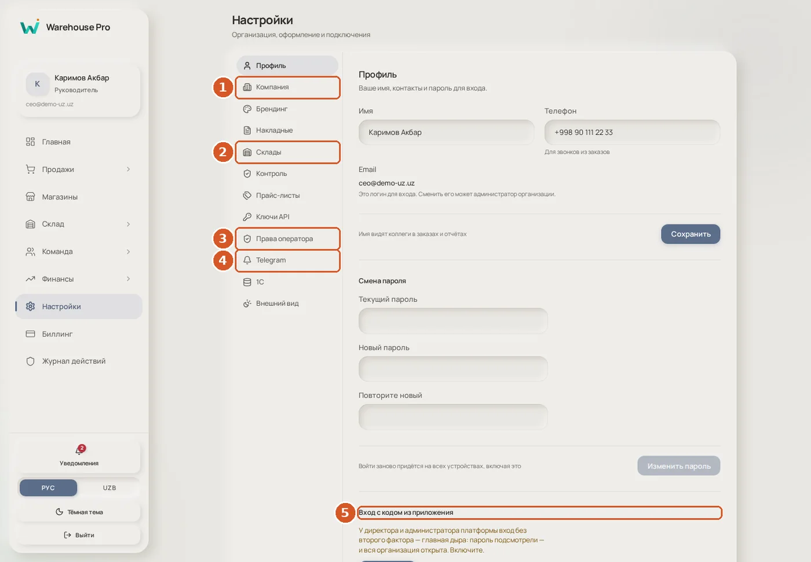
Рис. 1. «Настройки» директора: слева разделы, справа содержимое выбранного. Открыт «Профиль»
1«Компания» — реквизиты, валюта, порог скидки, точка заказа (день 1)
2«Склады» — основной склад и дополнительные (день 1)
3«Права оператора» — что оператору можно, а что нет (день 2)
4«Telegram» — уведомления о заказах, долгах и остатках (день 5)
5«Вход с кодом из приложения» — двухфакторная защита директора (день 2)
ВниманиеПорог скидки и точка заказа — не украшение. Без порога агент может отдать товар по себестоимости, и вы узнаете об этом из P&L через месяц. Без точки заказа склад пустеет молча.
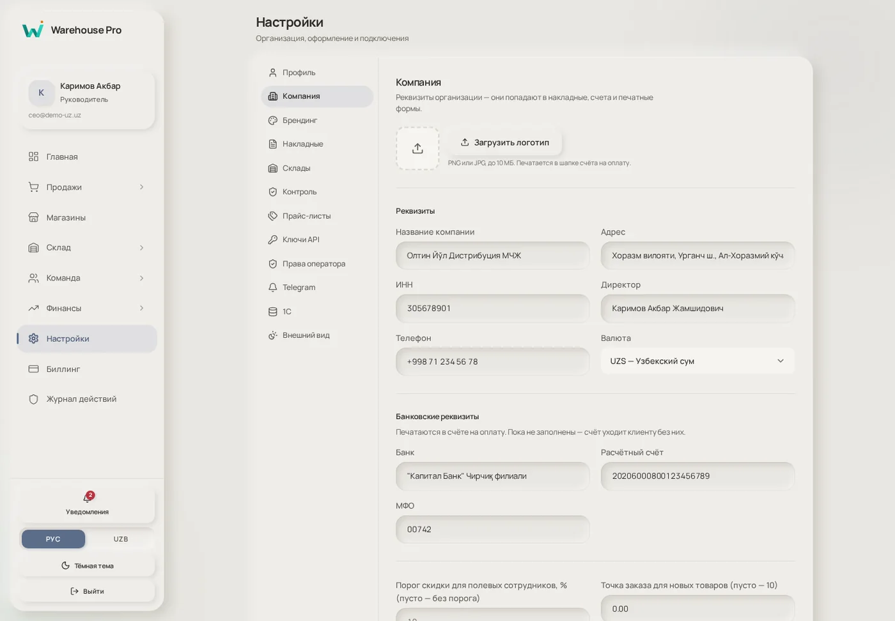
Рис. 2. «Настройки» → «Компания»: реквизиты для накладных, валюта, порог скидки и точка заказа
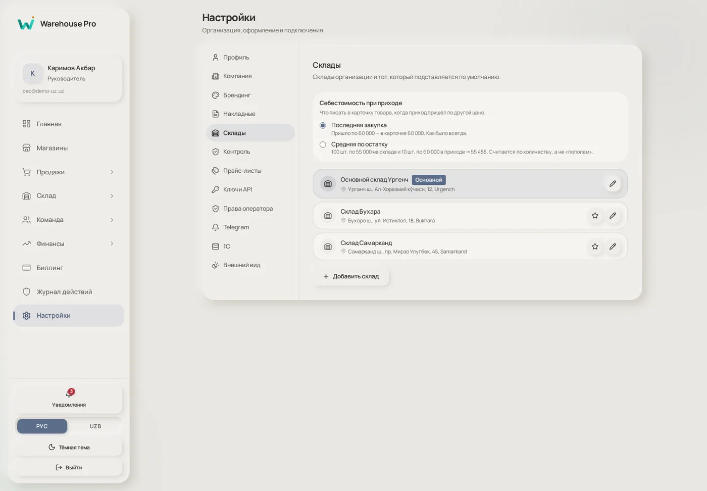
Рис. 3. «Настройки» → «Склады»: основной склад помечен — с него продают. Остальные — для хранения и перемещений
СоветОдин склад — самый простой случай: программа нигде не спросит «с какого». Второй склад заводите, только когда товар физически лежит в двух местах; тогда на «Складе» появятся вкладки «Сравнение» и «Перемещения».
День 1. «Товары»: загрузка каталога
Зачем: заказ можно принять только на товар из каталога. Цена продажи даёт выручку, себестоимость — маржу в P&L, штрих-код — сканер на приходе и сборке, упаковка — счёт коробками у прилавка.
Заполните строки. Обязательны код, название и цена продажи; себестоимость — чтобы P&L считал маржу; «Ед. измерения»: kg, l, pcs (штуки), box, pack. Код у каждого товара свой — по нему потом ищут и сканируют.
Перетащите файл в окно импорта или нажмите на область «или нажмите для выбора». Система покажет первые строки и ошибки — исправьте в файле и загрузите снова, ничего ещё не записано.
«Импортировать N строк» → «Готово». Товары появились в списке; счётчик «ВСЕГО ТОВАРОВ» вверху совпадает с числом строк в файле.
Единичный товар — «Добавить»: «Код *», «Штрих-код (необязательно)», «Название *», «Категория», «Себестоимость», «Цена продажи *», «Масса 1 ед. в кг (ящик=8)», «Порог дозаказа», «В упаковке, ед. (12)», «Название упаковки (коробка)», «Описание» → «Сохранить».
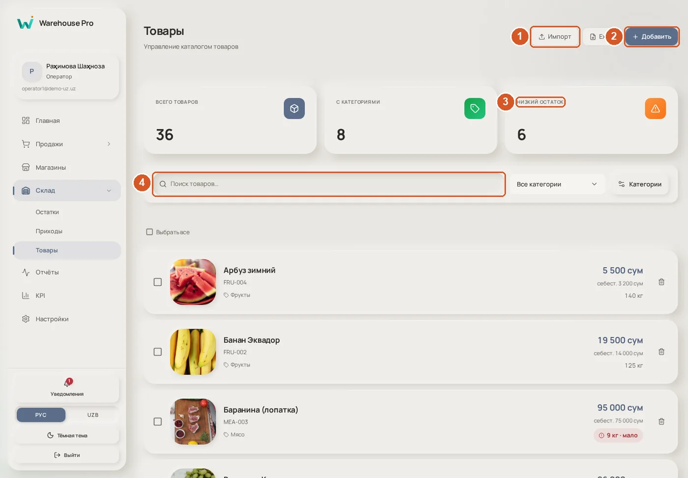
Рис. 4. «Товары»: каталог с ценой, себестоимостью и остатком в строке
1«Импорт» — шаблон Excel, проверка построчно до записи
2«Добавить» — один товар вручную
3«Низкий остаток» — сколько товаров ниже своего порога
4Поиск по названию и коду
СоветСебестоимость можно не знать точно в день 1 — поставьте закупочную цену последней партии. Без неё P&L покажет 100% маржи, и цифра будет врать вам же.
«Порог дозаказа» — ниже этого числа товар попадёт в «Мало стока» и во вкладку «Дозаказ». Ставьте столько, сколько уходит за время доставки от поставщика.
«В упаковке, ед.» и «Название упаковки» — чтобы агент у прилавка мог заказать «2 коробки», а склад видел «24 шт». «Масса 1 ед.» нужна для веса погрузочного листа.
«Фото» — до 2 МБ. Фото видно агенту в каталоге и на странице товара на телефоне: с картинкой заказ у прилавка идёт быстрее.
День 1. «Приходы»: стартовый остаток
Зачем: остаток появляется только через приход. Каждая строка прихода — партия со сроком годности; по ним склад потом собирает заказы «раньше сгорает — раньше уходит» (FEFO), а директор видит, что скоро сгорит.
Пересчитайте полки. Нужны фактические количества по каждому товару, а для продуктов — партия и срок годности с этикетки.
«Приходы» → «Новый приход». «Данные машины» и «Дата и расходы» для стартового остатка оставьте как есть (дата подставится сегодняшняя); «Поставщик и долг» — «Без поставщика» (иначе система запишет вам долг поставщику).
Строка товара: «Выберите товар…» → «Кол-во» → «Себестоимость» (цена закупки за единицу) → «Партия» → «Годен до». Следующий товар — «Добавить товар». Со сканером быстрее: курсор в «Штрих-код + Enter», каждый скан добавляет единицу.
В «Примечаниях» напишите «стартовый остаток» — через год это объяснит, откуда взялись цифры.
Внизу формы: «Сохранить и завершить». Остаток на «Складе» изменится сразу. Просто «Сохранить» — черновик: остаток не изменится, приход останется в статусе «Ожидает»; завершить его можно позже из списка: «Разгрузка» → «Завершить».
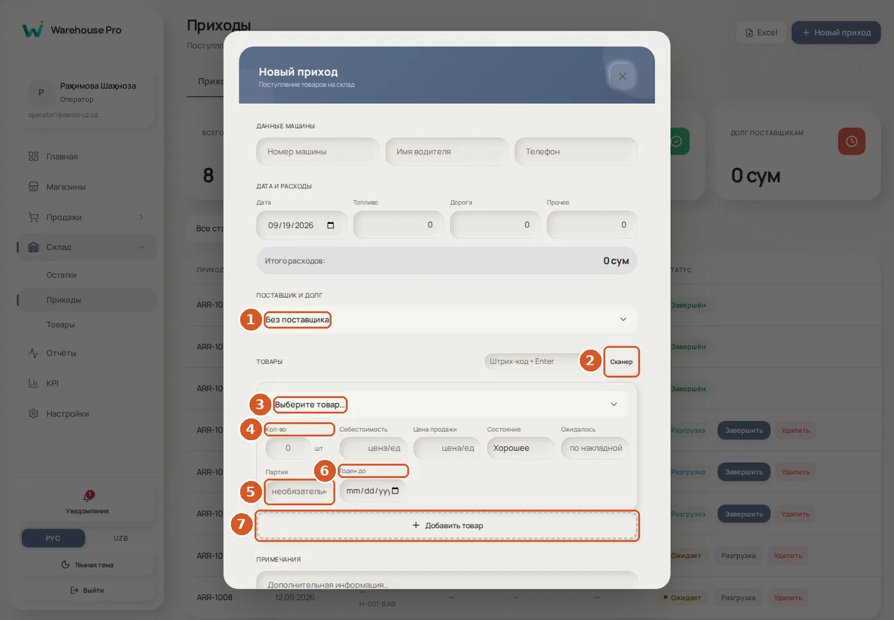
Рис. 6. «Новый приход»: одна карточка на строку — товар, количество, себестоимость, партия и срок. Кнопка «Сохранить и завершить» — внизу формы
1«Без поставщика» — для стартового остатка, иначе появится долг поставщику
2«Сканер» и поле «Штрих-код + Enter» — каждый скан плюс единица
3«Выберите товар…» — по названию из каталога дня 1
4«Кол-во» — фактически на полке
5«Партия» — номер с этикетки
6«Годен до» — по нему FEFO и алерт «сгорает»
7«Добавить товар» — следующая строка
СоветБыстрый путь без партий: в шаблоне импорта товаров есть колонка «Остаток на складе» — импорт сразу поставит эти количества на основной склад. Годится для хозтоваров без срока. Для продуктов и напитков делайте приход: партия и срок окупятся в первый же месяц.
ВниманиеПриход с поставщиком и суммой в «Поставщик и долг» создаёт долг перед поставщиком — он попадёт в карточку «ДОЛГ ПОСТАВЩИКАМ», во вкладку «Контрагенты и долги» и в расходы P&L. Для стартового остатка поставщика не указывайте.
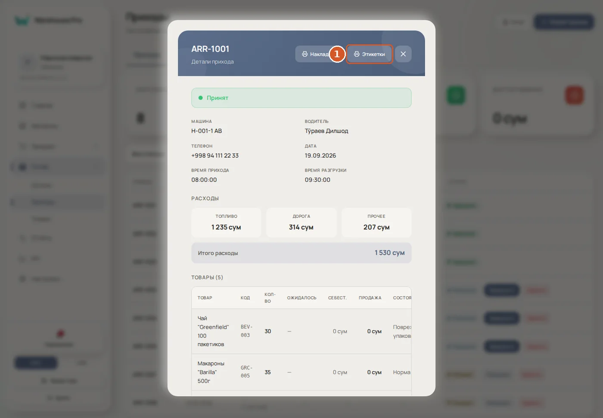
Рис. 7. Строка прихода открывает «Детали прихода»: что ожидалось и что приняли, партии, сроки, расходы на дорогу. «Этикетки» печатает штрих-коды на партию
1«Этикетки» — штрих-коды на коробки этой партии
День 1. Проверка: «Склад»
Зачем: «Склад» — единственное место, где остаток показан так, как его видит агент у прилавка: «Доступно» = «Всего» минус «Резерв» под уже принятые заказы. Если здесь цифры не сходятся с полками, все заказы завтра будут приняты на воздух.
«Склад» → раздел «Остатки». Сверху четыре плитки: «Позиций» (и общий вес в кг), «Стоимость остатков» (по себестоимости), «Ниже порога» и «Без продаж · 30 дн» — две последние нажимаются и ведут в разделы «Дозаказ» и «Мёртвый сток».
Пройдите по списку: «Доступно» у каждого товара равно тому, что на полке. «Резерв» в день 1 — ноль. Красные строки — ниже порога: либо дозакажите, либо поправьте «Порог дозаказа» в карточке товара.
Ошиблись в количестве — «Скорректировать» в строке: «ТИП ОПЕРАЦИИ», «КОЛИЧЕСТВО», «ПРИМЕЧАНИЕ» (причина) → «Применить». Корректировка попадает в «Журнал действий» — это нормально, так и задумано.
Много расхождений — вкладка «Инвентаризация» → «Новая инвентаризация»: система снимет остатки на этот момент, вы считаете полки (руками или «Штрих-код + Enter» / «Сканер») → «Применить» — все разницы проводятся одним документом.
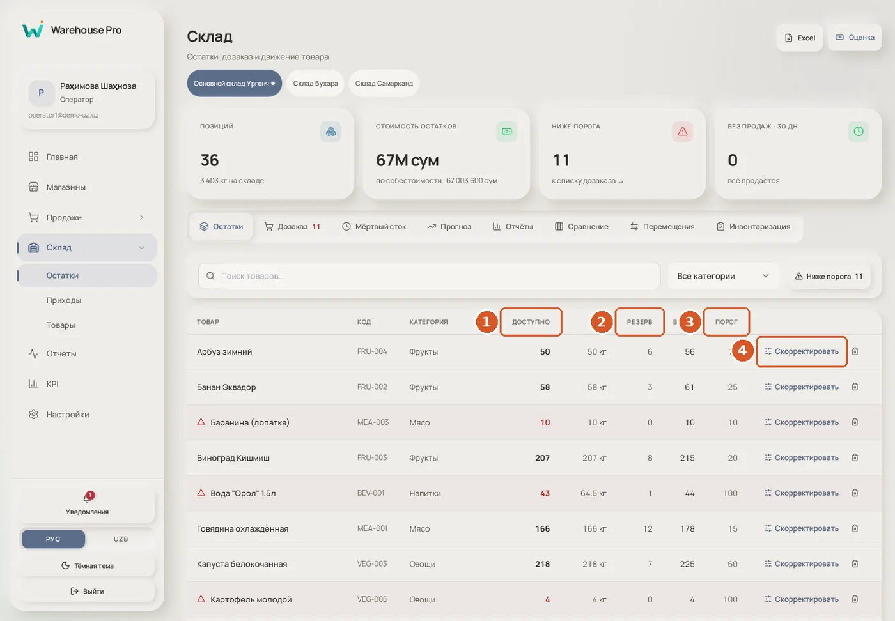
Рис. 8. «Склад» → «Остатки»: доступно, резерв, всего и порог по каждому товару
1«ДОСТУПНО» — это видит агент; должно совпасть с полкой
2«РЕЗЕРВ» — под принятые, но не отгруженные заказы
3«ПОРОГ» — ниже него строка краснеет и приходит алерт
4«Скорректировать» — поправить количество с причиной
Проверка
«Настройки» → «Компания»: валюта, реквизиты, порог скидки и точка заказа заполнены
Все товары загружены; у продаваемых есть цена продажи, себестоимость и единица
Приход стартового остатка завершён — статус «Завершён», не «Ожидает»
«Склад» → «Остатки»: «Доступно» совпадает с полками, «Резерв» — ноль
День 2. «Магазины»: точки и территории
Зачем: магазин — это тот, кто должен вам деньги. Стартовый долг и кредитный лимит заводятся здесь, и с этого дня система ведёт долг сама: каждая доставка добавляет, каждая оплата уменьшает. Территория — маршрут агента, по ней супервайзер расставит план на месяц.
«Долг» — сколько магазин должен вам на сегодня по тетради. Это единственный момент, когда долг вводится руками: дальше он считается по доставкам и оплатам. «Территория» — название; если такой ещё нет, импорт её создаст.
Загрузите файл → проверьте предпросмотр → «Импортировать N строк». Сверху «ВСЕГО МАГАЗИНОВ» и «ОБЩИЙ ДОЛГ» должны совпасть с вашей тетрадью.
Единичный магазин — «Добавить»: «Название *», «Владелец», «Телефон», «Город», «Район», «Адрес», «Telegram ссылка (для GPS)» — вставьте ссылку на геопозицию из Telegram, координаты подставятся сами; «— Агент —», «— Территория —» → «Сохранить».
Территории: «Территории» (кнопка справа вверху) → «Добавить территорию» — название и цвет; или «Из магазинов» → «По городам» / «По районам» — система соберёт территории из уже загруженных адресов.
Кредитный лимит — в карточке магазина: откройте магазин → «Изменить» → «Кредитный лимит (пусто — без лимита)» → «Сохранить». Заказ в долг сверх лимита у агента не пройдёт: система откажет с сообщением о превышении — агент принимает оплату или офис поднимает лимит.
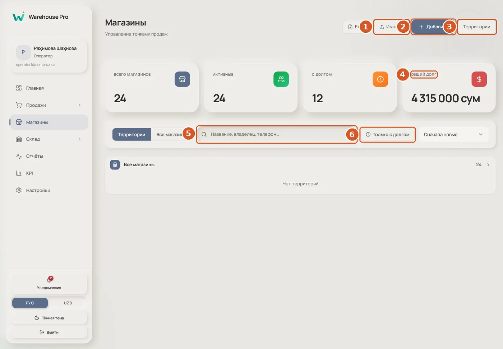
Рис. 9. «Магазины»: сводка по долгу, поиск, территории и список точек
1«Импорт» — шаблон Excel со стартовым долгом и территорией
2«Добавить» — одна точка вручную
3«Территории» — маршруты агентов
4«ОБЩИЙ ДОЛГ» — должен совпасть с тетрадью после импорта
5Поиск по названию, владельцу и телефону — заполняйте все три
6«Только с долгом» — кто должен прямо сейчас
ВниманиеСтартовый долг вводится один раз. Импорт не обновляет существующие магазины, а создаёт новые: загрузите файл второй раз — и у вас появятся дубли точек с двумя долгами каждая. Дальше долг меняют только доставки, оплаты, возвраты и ручные начисления в карточке магазина — и все они видны в выписке.
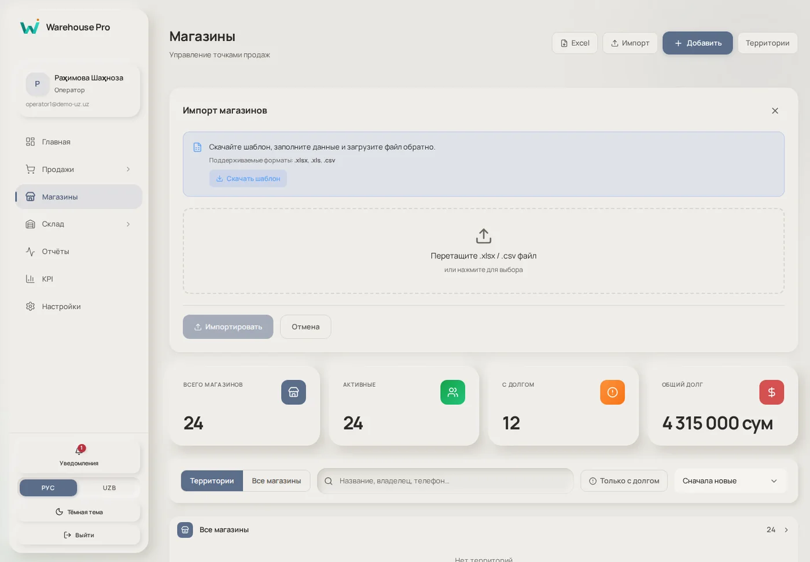
Рис. 10. «Магазины» → «Импорт»: загрузка точек из Excel. Скачайте шаблон, заполните, загрузите — программа покажет, что примет, а что нет
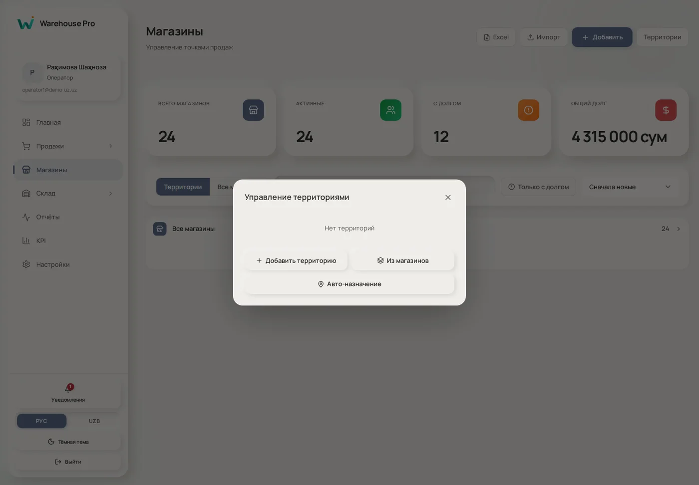
Рис. 11. «Территории»: имя, цвет и центр с радиусом. «Авто-назначение» раскладывает магазины по территориям «По городам», «По районам» или «Из магазинов»
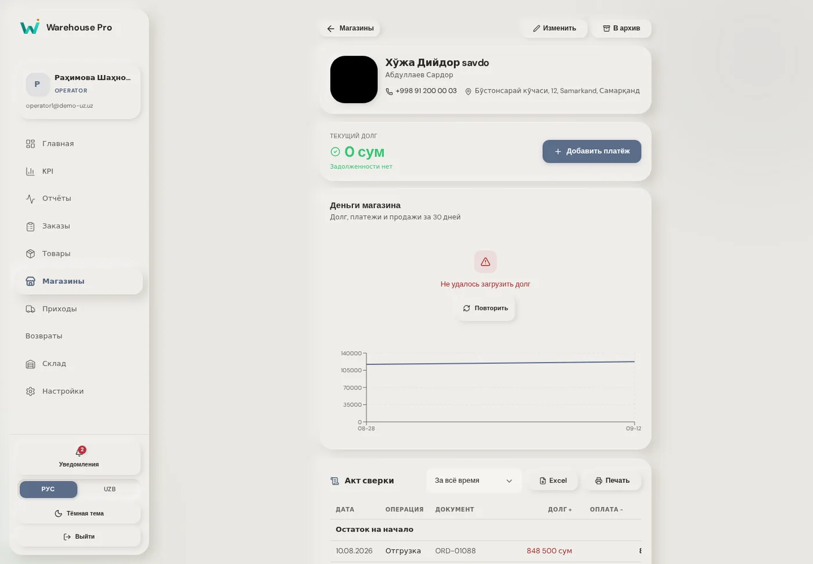
Рис. 12. Карточка магазина: «ТЕКУЩИЙ ДОЛГ», «Добавить платёж», «ЗАКАЗЫ МАГАЗИНА», отчёты о визитах, «В архив»
День 2. «Пользователи»: сотрудники и роли
Зачем: роль определяет, что человек видит и что может изменить. Агент не видит чужих магазинов и зарплат, оператор не видит P&L, курьер видит только свои доставки. Это и защита денег, и порядок: каждый отвечает за свой экран.
«Пользователи» → «Создать». Форма «Создать пользователя»: «ИМЯ *», «EMAIL *», «ПАРОЛЬ *» (минимум 8 символов), «РОЛЬ *» → «Создать пользователя». Сотрудник входит сразу с этим паролем; сменить его он сможет в «Настройках» → «Профиль».
Заведите по одному человеку на роль: оператор, супервайзер, агент, курьер, мерчандайзер. Роли — в таблице ниже. Второго директора завести нельзя — так задумано.
Агенту задайте территорию: в строке агента значок «Рабочая зона» или блок «Территории агентов» внизу страницы → «Изменить» → выберите территории → «Сохранить». Без территории у агента не будет плана на день 3.
Ушёл сотрудник — «Деактивировать» (значок питания в строке). Его заказы, долги и история остаются; войти он больше не сможет. Забыл пароль — «Сбросить пароль» (значок ключа).
Директору — включить двухфакторную защиту: «Настройки» → «Профиль» → «Вход с кодом из приложения» → «Включить» → «Ключ настройки» ввести в Google Authenticator → «Первый код из приложения» → «Подтвердить и включить». Без неё нельзя выгрузить копию базы и очистить журнал действий.
Если оператор у вас — «человек на телефоне», а не правая рука: «Настройки» → «Права оператора» → снимите «Удалять заказы», «Править остатки», «Вести вознаграждение» → «Сохранить». Роль задаёт потолок, здесь вы его только опускаете.
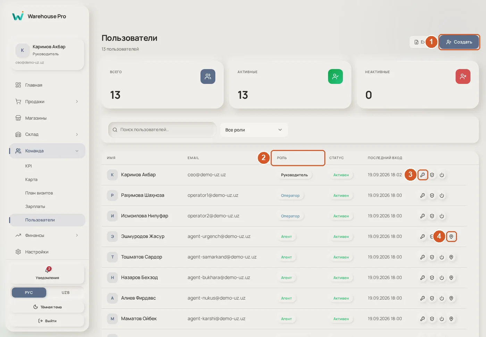
Рис. 13. «Пользователи»: список с ролью, статусом и последним входом
1«Создать» — имя, e-mail, пароль, роль; вход сразу
2«РОЛЬ» — что человек видит; меняется в строке
3«Сбросить пароль» — если сотрудник забыл
4«Рабочая зона» — территории агента для плана визитов
Заказы, магазины, товары, склад, приходы, возвраты; зарплату — только свою
Супервайзер
да
да
Карта, план визитов, KPI и зарплата агентов, магазины
Агент
частично
да
Свои магазины, заказы, план, долги, KPI и зарплата
Курьер
частично
да
Свои доставки и зарплата
Мерчандайзер
частично
да
План визитов и отчёты по полке
Проверка
Все магазины с телефоном и территорией; «ОБЩИЙ ДОЛГ» совпал с тетрадью
Кредитные лимиты заданы хотя бы должникам
Каждый сотрудник вошёл под своим паролем и увидел свой экран
У каждого агента есть территория
У директора включена двухфакторная защита
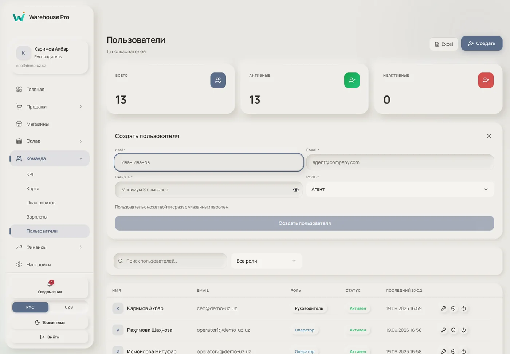
Рис. 14. «Пользователи» → «Создать»: «ИМЯ *», Email, «ПАРОЛЬ *» (не короче 8 знаков), «РОЛЬ *». Сотрудник входит сразу, без письма
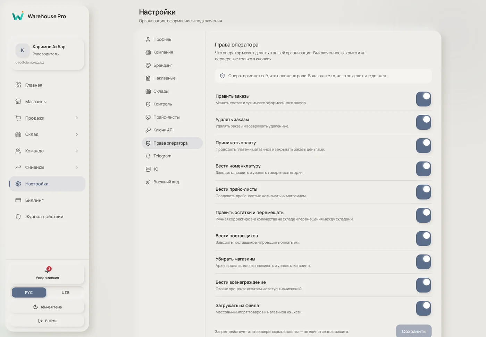
Рис. 15. «Настройки» → «Права оператора»: галочками — что оператору можно. Снятая галочка убирает кнопку с его экрана
Права: «Править заказы», «Удалять заказы», «Принимать оплату», «Вести номенклатуру», «Вести прайс-листы», «Править остатки и перемещать», «Вести поставщиков», «Убирать магазины», «Вести вознаграждение», «Загружать из файла».
Директору права не нужны — у него есть всё. Роль задаёт потолок, эти галочки только опускают его для оператора.
День 3. Поле: телефоны, план, первые заказы
Зачем: заказ, принятый с телефона у прилавка, сразу резервирует остаток и попадает оператору — без звонков и переписывания. План визитов говорит агенту, куда идти, а супервайзеру — кто дошёл.
Установите приложение агентам, курьерам и мерчандайзерам (APK от вашего поставщика). Вход — тем же e-mail и паролем, что завели во «Пользователях»; язык — в профиле.
Разрешите геолокацию «всегда» на каждом телефоне. Без неё карта у супервайзера пуста, а визиты не подтверждаются.
Супервайзер в вебе: «План визитов» → вкладка «Месяц» → «Сотрудник», «Что ставим» (территория), «Дни недели» → «Расставить месяц» (после выбора кнопка покажет «Расставить — N визитов»). Система сама распределит точки по дням.
Агент с телефона: главная показывает «Визиты сегодня»; плитка «НОВЫЙ ЗАКАЗ» (или значок корзины у магазина в «Магазинах») → магазин → «Добавить товар»: поиск «Название или артикул…» или сканер, «+» у строки — остаток виден до добавления → «Готово» → количество «− поле +» → «Продолжить →» → способ оплаты → «Подтвердить заказ».
Первые заказы делайте при супервайзере: одна минута у прилавка, и человек больше не спрашивает. Оператор в это время смотрит «Заказы» — заказ должен появиться со статусом «Новый».
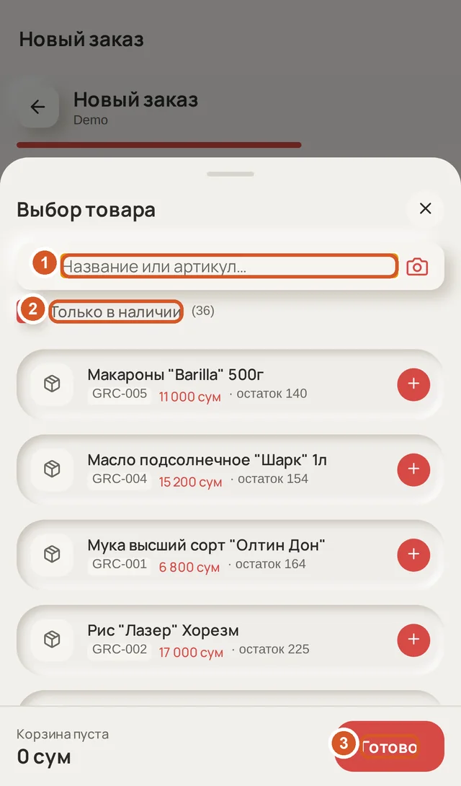
Рис. 16. Заказ у прилавка, «Выбор товара»: поиск или сканер, остаток у каждой строки, «+» кладёт в корзину
1«Название или артикул…» — поиск; значок камеры — сканер штрих-кода
2«Только в наличии» — не показывать то, чего нет на складе
3«Готово» — к корзине: там «− поле +» и «Продолжить →»
СоветПодробно про телефон агента — см. «Торговый агент (телефон)»; про план на месяц — «Супервайзер».
Проверка
У всех агентов есть план на неделю
Первый заказ агента виден у оператора в «Заказах» со статусом «Новый»
На «Складе» у заказанного товара появился «Резерв»
Агент виден на «Карте» у супервайзера
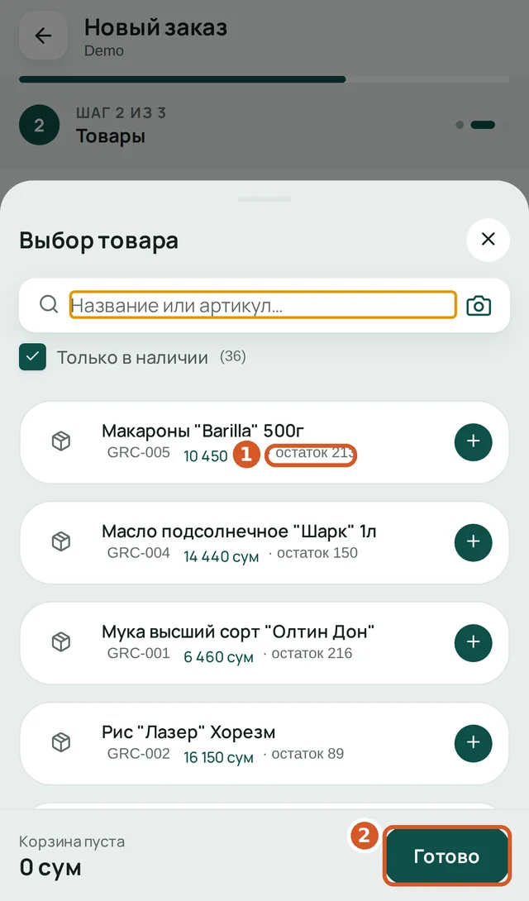
Рис. 17. Шаг 2, «Выбор товара»: список с ценой и остатком. Нажатие на строку добавляет товар, после этого у строки появляются «−» и «+». «Готово» возвращает к заказу
1Строка товара: нажмите — добавится одна единица; больше остатка не даст
2«Готово» — вернуться к заказу
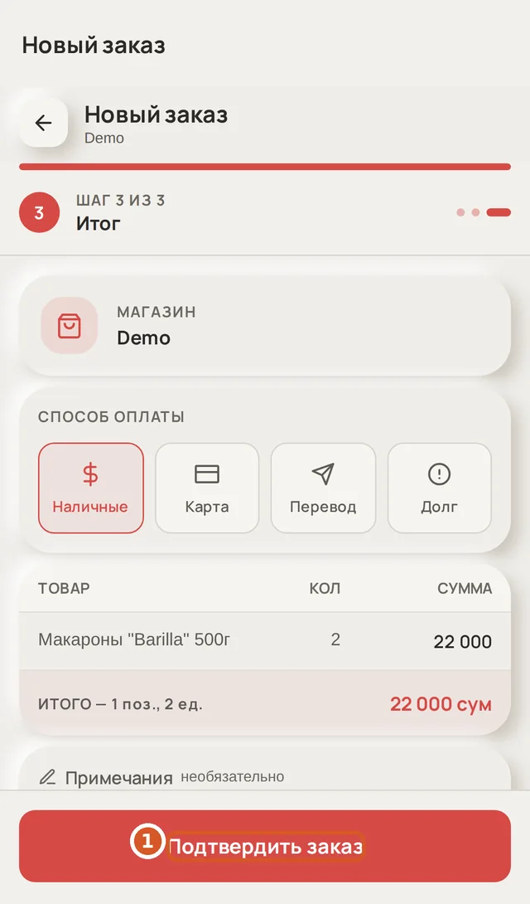
Рис. 18. Шаг 3: «МАГАЗИН», таблица «ТОВАР / КОЛ / СУММА», «СПОСОБ ОПЛАТЫ», «Примечания» и кнопка «Подтвердить заказ»
1«Подтвердить заказ» — заказ уходит оператору и резервирует остаток
День 4. Склад и доставка
Зачем: это день, когда остаток превращается в деньги. Лист — задание складу и рейс курьера; сборка списывает партии; доставка записывает наличные и долг магазина. Каждый шаг делает один человек, и система запоминает, кто.
Оператор: «Заказы» → отметить заказы дня галочками → «Загруз. лист» → «Сформировать лист» → «Печать» или «Готово, без печати». Лист — задание складу и одновременно рейс курьера.
Сборка: «Погрузочные листы» → «Собрать». Система показывает, сколько нужно и из каких партий брать (FEFO); кладовщик правит «Собрано» только там, где не хватило → «Подтвердить сборку». Меньше — недостача, о которой офис узнаёт сразу.
Курьер: в окне «Погрузочные листы» в строке листа выберите человека в списке «Курьер не назначен» — он проставится на все заказы листа. На телефоне курьера появится маршрут.
Доставка: курьер жмёт «Выехал по всем (N)»; у точки — сумма наличных и «Доставлено»; недовоз — «Не доставлено» с причиной; частичная оплата или возврат — «Оформить подробно».
Вечером оператор сверяет: «Заказы» → фильтр «Доставлены»; наличные курьера — в карточке каждого заказа; долг магазина — в его карточке и в «Отчётах» → «Долги».
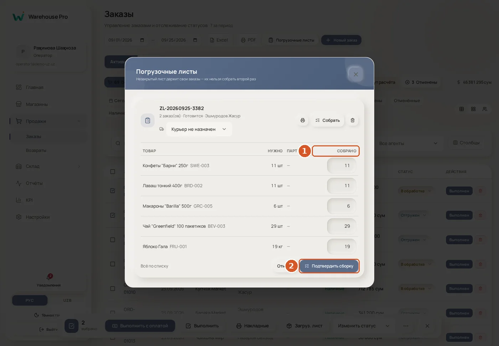
Рис. 19. Сборка листа по строкам: нужно, партии по FEFO, собрано
1Собрано — правьте только то, чего не хватило
2«Подтвердить сборку» — лист становится «Готов»
ВниманиеОстаток списывается при отгрузке, деньги и долг — при доставке. Не переводите заказ в «Доставлен» руками, пока курьер не отчитался: иначе долг магазина будет посчитан по тому, что не довезли.
СоветПошагово со снимками: лист и сборка — см. «Оператор офиса и склад» → «Погрузочный лист» и «Сборка листа и курьер»; телефон курьера — «Курьер (телефон)».
Проверка
Лист собран, курьер назначен
Заказ прошёл «Отгружен» → «Доставлен»
На «Складе» «Доступно» уменьшилось ровно на отгруженное
Долг магазина и наличные курьера сходятся с бумагой
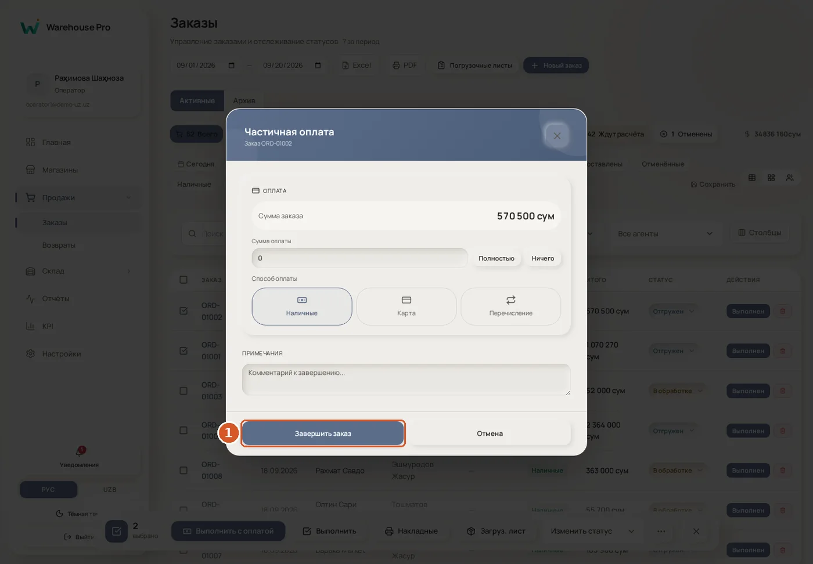
Рис. 20. «Выполнен» в строке заказа открывает окно оплаты: «Сумма заказа», «Сумма оплаты» с кнопками «Полностью» и «Ничего», «Способ оплаты» — «Наличные», «Карта», «Перечисление», «ПРИМЕЧАНИЯ»
1«Завершить заказ» — остаток спишется, деньги и долг запишутся
День 5. «Главная»: пять вопросов дня
Зачем: с этого дня вы перестаёте спрашивать и начинаете смотреть. Главная директора отвечает на пять вопросов: сколько продали, сколько довезли, сколько должны нам, какая маржа и что горит.
Войдите директором. «Главная»: «ВЫРУЧКА · СЕГОДНЯ», «ЗАКАЗЫ · СЕГОДНЯ» с подписью «Довезено сегодня N из M», «ДОЛГ КЛИЕНТОВ», «ВАЛОВАЯ ПРИБЫЛЬ».
Ниже — карточки-алерты: низкий остаток, сгорающие партии, новые заказы, просроченные долги. Нажмите на любую — откроется экран, где на неё отвечают («Склад», «Заказы», «Отчёты» → «Долги»).
«Динамика продаж» — «7д» / «30д» / «Месяц»; «Заказы в работе» — сколько открыто прямо сейчас, «Последние заказы» — кто и на сколько.
В меню «KPI»: кто из агентов делает план, кто нет; клик по строке агента — разбор и зарплата за период.
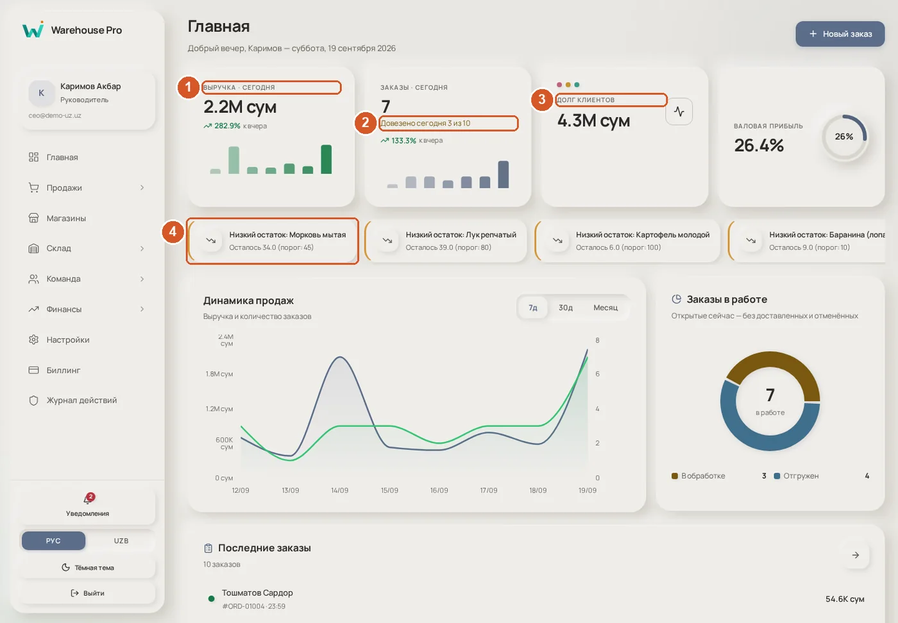
Рис. 21. Главная директора: ответы на вопросы дня одним экраном
1Выручка за сегодня и сравнение со вчера
2Довезено сегодня N из M — если M сильно больше N, смотрите курьеров
3Долг клиентов — ведёт в «Отчёты» → «Долги»
4Алерты — каждый открывает нужный экран
День 5. «Отчёты» и «Долги»
Зачем: главная показывает сегодня, отчёты — период. Здесь видно, что продаётся, кто из агентов везёт, и главное — сколько денег зависло в магазинах и как давно.
«Отчёты» → период «7 дней» / «30 дней» / «90 дней». Вкладка «Обзор»: «ВЫРУЧКА», «ЗАКАЗОВ», «СРЕДНИЙ ЧЕК», «ЗАВИСЛО В ДОЛГАХ»; график «Визиты и заказы»; «План сегодня» по агентам; внизу «Топ товаров», «Топ магазинов», «Лучшие агенты», «Больше всех должны».
«Продажи» — по агентам и товарам; «Агенты» — кто везёт, а кто просел. «Сводка» — Excel по текущему периоду; «Печать» — окно печати (для файла выберите принтер «Сохранить как PDF»); «Все выгрузки» — все отчёты в одном месте.
Вкладка «Долги»: «Должны нам» — общая сумма и число должников; четыре корзины по возрасту — «до 7 дней», «8–30 дней», «31–60 дней», «больше 60». Жёлтое и красное — деньги, за которыми пора ехать.
Таблица ниже — магазин, долг, возраст самого старого долга; «Excel» и «Печать» над ней — список должников для обзвона. Выписка по магазину (каждая доставка, оплата и возврат) и оплата без заказа — в «Магазинах»: откройте магазин → «Добавить платёж».
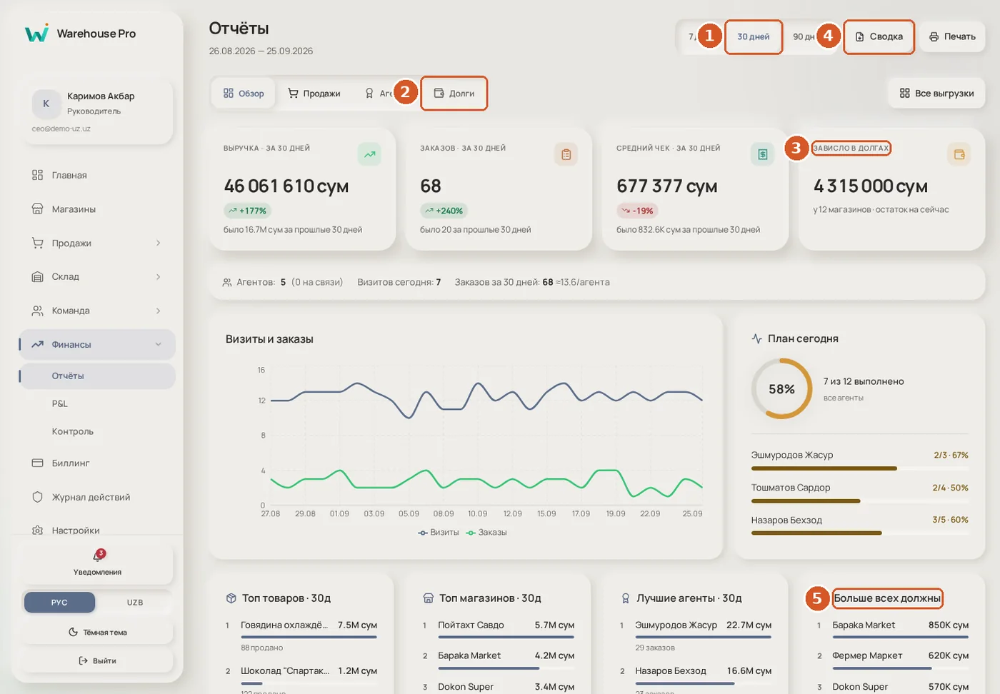
Рис. 22. «Отчёты» → «Обзор» за 30 дней: выручка, заказы, долги и лучшие/худшие
1Период — все цифры на экране пересчитываются
2«Долги» — кто, сколько, как давно
3«ЗАВИСЛО В ДОЛГАХ» — деньги, которые уже ваши, но ещё не у вас
4«Сводка» — Excel за выбранный период
5«Больше всех должны» — с кого начинать обзвон
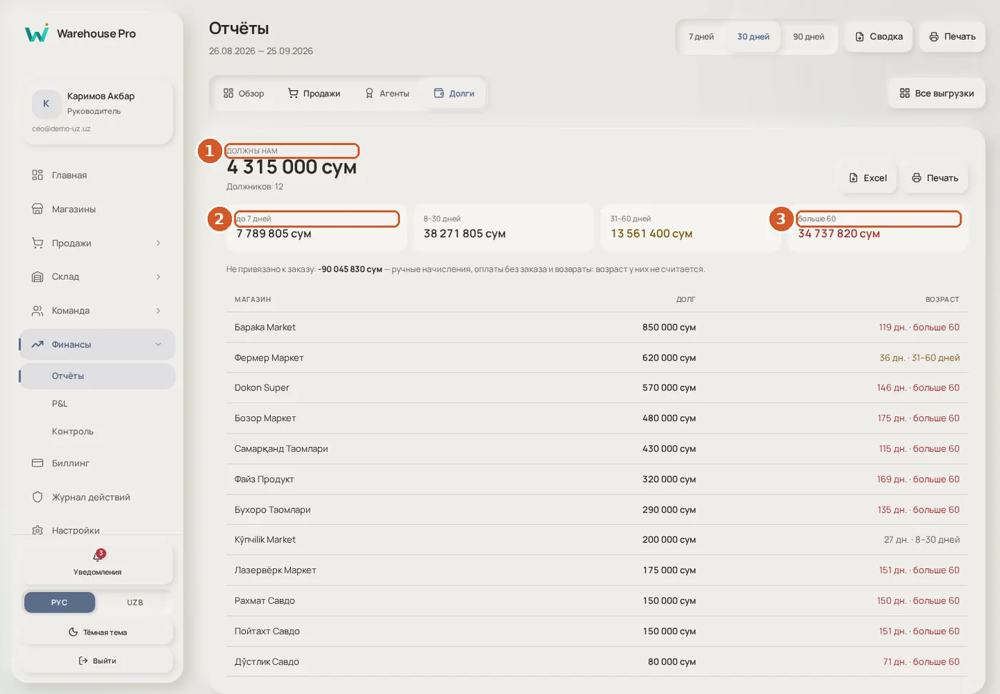
Рис. 23. «Отчёты» → «Долги»: сумма, возраст по корзинам и таблица должников
1«Должны нам» — итог по всем магазинам
2«до 7 дней» — нормальная отсрочка
3«больше 60» — красное: вероятная потеря, решайте лично
ВниманиеДолг за период и долг по заказу — разные вещи. В «Отчётах» → «Долги» — что должны сейчас; в карточке заказа — что должны по этому заказу. Не сравнивайте одно с другим — см. «Часть 4. Деньги и остаток».
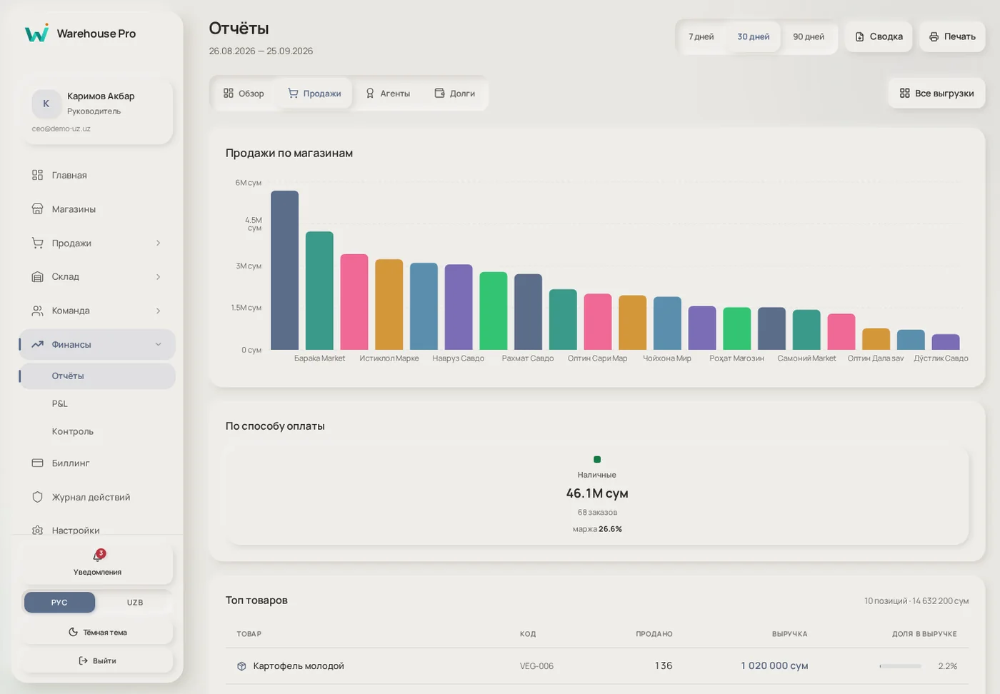
Рис. 24. «Отчёты» → «Продажи»: выручка по дням, по товарам и по категориям за выбранный период
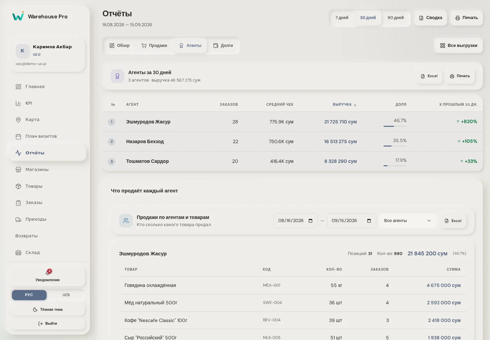
Рис. 25. «Отчёты» → «Агенты»: кто сколько продал, сколько визитов сделал и сколько долгов собрал
День 5. «P&L»: заработали или потеряли
Зачем: выручка — не прибыль. P&L вычитает себестоимость проданного (по партиям с прихода), расходы на приходы и выданную зарплату и говорит одну цифру: «ЗАРАБОТАЛИ ЗА ПЕРИОД» или «ПОТЕРЯЛИ ЗА ПЕРИОД».
Верхняя карточка — итог за период и сравнение с прошлым; справа «ВАЛОВАЯ МАРЖА» (выручка минус себестоимость) и «ЧИСТАЯ МАРЖА» (ещё минус расходы и зарплата). Полоса ниже показывает, куда ушла выручка: «Себестоимость», «Закупка», «Зарплата», «Осталось» — пустые части не рисуются.
Четыре карточки: «ВЫРУЧКА», «СЕБЕСТОИМОСТЬ», «ВАЛОВАЯ ПРИБЫЛЬ», «РАСХОДЫ». Если «СЕБЕСТОИМОСТЬ» — 0 сум, а маржа — 100%, значит у товаров не заполнена себестоимость (день 1) — цифра не настоящая.
«Динамика по месяцам»: столбцы — выручка и себестоимость, линия — чистая прибыль. «Excel» и «PDF» — отчёт бухгалтеру.
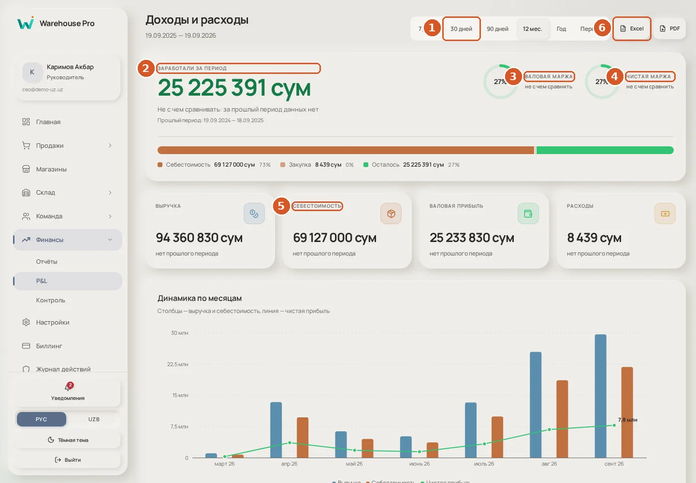
Рис. 26. «P&L» за 30 дней: итог, маржа, разложение выручки и помесячная динамика
1Период — от недели до года и своих дат
2«ЗАРАБОТАЛИ ЗА ПЕРИОД» — одна цифра, ради которой всё
4«ЧИСТАЯ МАРЖА» — ещё минус расходы и выданная зарплата
5«СЕБЕСТОИМОСТЬ» — 0 сум означает незаполненную себестоимость товаров
6«Excel» — файл бухгалтеру за тот же период
СоветВ P&L идёт выданная зарплата, а не начисленная: пока вы не нажали «Выплатить», расход не списан. Так P&L за месяц сходится с кассой.
День 5. «Зарплаты»
Зачем: зарплата считается из тех же заказов и доставок, что и выручка. Настроив ставки один раз, вы в конце месяца получаете ведомость без Excel и споров.
«Зарплаты» → период («Неделя» / «Месяц» / «Квартал») → в строке сотрудника «Оклад» → «ОКЛАД ЗА МЕСЯЦ», «КОМИССИЯ, % ОТ ПРОДАЖ» → «Сохранить». Комиссия считается от заказов, которые человек оформил сам.
Курьеру — в меню «KPI» → «Настройка ЗП» → «Оплата курьеров за доставку»: сумма за каждую довезённую заявку («сум») или процент от довезённого («%») — переключатель у каждого человека. Там же «Обед и дорожные» за рабочий день.
Столбцы «НАЧИСЛЕНО», «ВЫПЛАЧЕНО», «ОСТАТОК» считаются сами. «Только с остатком» — кому ещё должны.
В день выдачи: «Выплатить» по одному («Выплата» или «Аванс», сумма → «Записать выдачу») или «Выдать всем». Сотрудник подтверждает получение на телефоне. «Ведомость» — Excel за период; расходный ордер на подпись — «Печать ордера» во вкладке «Выплаты».
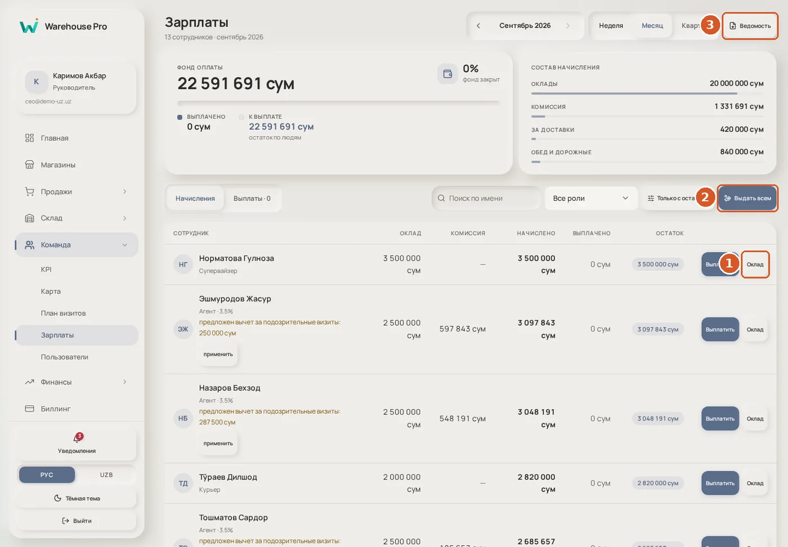
Рис. 27. «Зарплаты» за месяц: фонд, начислено/выплачено, кнопки выдачи
1«Оклад» — ставка и процент сотрудника
2«Выдать всем» — закрыть месяц одной кнопкой; сотрудники подтверждают на телефоне
3«Ведомость» — Excel за выбранный период
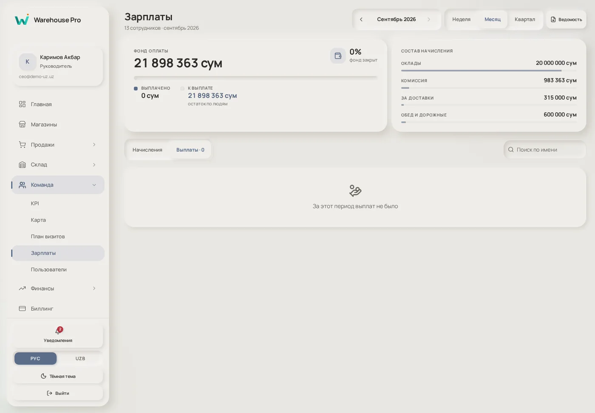
Рис. 28. «Зарплаты» → «Выплаты»: что уже выдано за период — кому, когда, сколько. Здесь же видно, кто подтвердил получение с телефона
День 5. «Журнал действий» и Telegram
Зачем: аудит-лог — ответ на вопрос «кто это сделал». Каждая корректировка остатка, отмена оплаты, смена лимита, сброс пароля записаны с именем и временем. Telegram — чтобы о новых заказах и долгах узнавать, не открывая систему.
«Журнал действий» → фильтры «Все», «Пользователи», «Заказы», «Оплаты», «Магазины», «Склад», «Организация». Сегодня он почти пуст — это нормально: сюда попадают только чувствительные действия, а не каждый клик.
Раз в неделю смотрите «Оплаты» (отменённые оплаты) и «Склад» (корректировки и инвентаризации): это два места, где теряют деньги. «Выгрузить CSV» — если нужно разобраться с бухгалтером.
«Настройки» → «Telegram» → «Подключить в 1 клик» (откроется бот) или вручную: /start боту → скопировать числовой ID → «Ваш Telegram chat ID» → «Подключить». «Отправить проверку» — убедиться, что сообщение доходит.
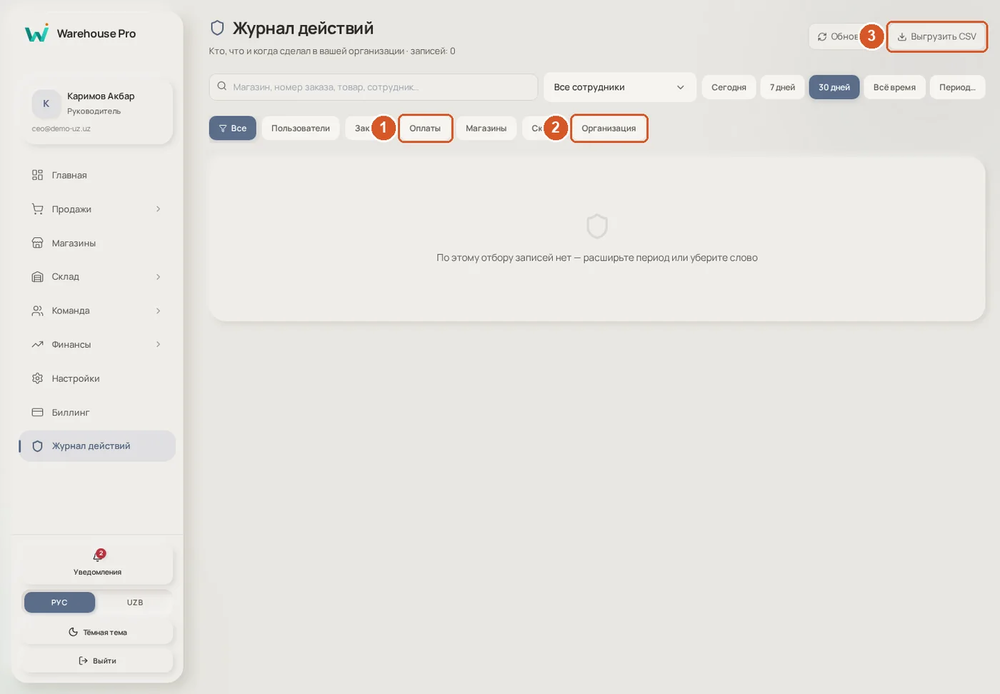
Рис. 29. «Журнал действий» в первый день: фильтры по типу действий и выгрузка
1«Оплаты» — отменённые и принятые оплаты: смотреть еженедельно
2«Организация» — настройки, лимиты, копии базы
3«Выгрузить CSV» — файл для разбора с бухгалтером
Проверка
Директор ответил на пять вопросов дня с «Главной», не открывая другие экраны
«Отчёты» → «Долги»: сумма совпала с «ДОЛГ КЛИЕНТОВ» на главной
P&L показывает себестоимость больше нуля
Ставки зарплаты заданы всем, ведомость сходится с ожиданиями
Telegram подключён, проверочное сообщение пришло
Пять дней прошли — дальше книга идёт по ролям: каждый сотрудник читает свою главу в Части 2, а владелец — Часть 4 про то, как считаются деньги; Часть 3 — общие инструкции по задачам.
Часть 2. Рабочий день каждой роли
Здесь каждая роль описана так, как проходит её день: утро, день, вечер. Сначала офис (веб), затем поле (телефон). Читать нужно только свою главу; директору полезно знать все. Названия кнопок и пунктов меню даны в «ёлочках» ровно так, как они написаны в программе.
Кто что видит
Роль задаёт потолок: что человеку вообще открыто. Меню в вебе и вкладки на телефоне у каждой роли свои — ниже они перечислены слово в слово, чтобы сотрудник сразу находил нужный пункт.
Пункта нет ни в одном разделе — значит роли он не положен. Не ищите его по адресу: сервер откажет.
Оператора можно ограничить сильнее роли: «Настройки» → «Права оператора». Выключенное закрывается и на сервере, не только в кнопках.
Свой KPI и свою зарплату видит каждый. KPI всех агентов — директор, оператор и супервайзер; чужую зарплату — только директор и супервайзер.
Язык: в вебе — «РУС» / «UZB» внизу меню, на телефоне — «Профиль» → «Язык». Настройка личная, на других не влияет.
Оператор офиса и склад
УтроПроверить «Ожидает» и новые заказы, собрать погрузочные листы, назначить курьеров
ДеньПринимать заказы по телефону, проводить приходы и возвраты, отвечать магазинам про долг по акту сверки
ВечерЗакрыть доставленные заказы с оплатой, довести листы до «Отгружен», проверить приходы и возвраты
Оператор работает в вебе. Меню слева: «Главная», «Продажи» (внутри — Заказы, Возвраты), «Магазины», «Склад» (Остатки, Приходы, Товары), «Отчёты», «KPI», «Настройки»; раздел раскрывается щелчком, а тот, где вы сейчас, раскрыт сам. «Главная» у оператора открывает «Заказы». Отчёты по складу — вкладка «Отчёты» на странице «Склад»; «Штрих-коды» открываются по адресу /barcode.
Заказы — рабочий экран
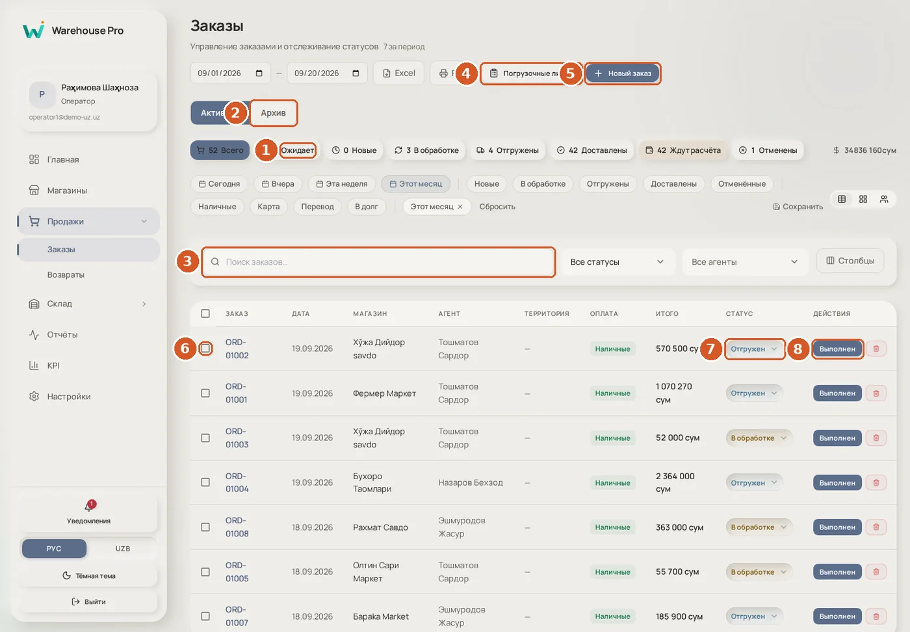
Рис. 30. Экран «Заказы»: вкладка «Активные»
1Сводка — каждое число фильтр; «Ожидает» — заказы, которые ждут решения офиса
2«Архив» — доставленные, отменённые и удалённые; «Активные» — всё, что ещё в работе
3Поиск по номеру заказа или магазину; агент — фильтром «Все агенты»
4«Погрузочные листы» — сборка и курьеры
5«Новый заказ» — заказ по звонку
6Галочка — отметить заказ; внизу появится панель массовых действий
7Статус меняется прямо в строке без переспроса; «Доставлен» откроет окно «Завершить заказ»
8«Выполнен» — окно «Завершить заказ»: что довезли и сколько заплатили
Сводка сверху: «Всего», «Ожидает», «Новые», «В обработке», «Отгружены», «Доставлены», «Ждут расчёта», «Отменены» — нажмите число, и список сузится. Справа — сумма показанных заказов. «Ждут расчёта» — доставленные заказы, по которым офис ещё не принял деньги (см. Часть 3, «Расчёт по заказу»).
Быстрые фильтры под сводкой: «Сегодня», «Вчера», «Эта неделя», «Этот месяц», статусы и способ оплаты («Наличные», «Карта», «Перевод», «В долг»). Даты сверху задают период; «Excel» и «PDF» выгружают то, что показано.
Отметьте несколько заказов галочками — внизу появится панель: «Выполнить с оплатой», «Выполнить», «Накладные», «Загруз. лист», «Изменить статус», а в «…» («Ещё действия») — «Назначить агента», «Назначить курьера» и Excel по выбранным.
«Столбцы» — скрыть лишние колонки; три значка справа переключают вид: «Таблица», «Доска», «По агентам».
Кнопка «Выполнен» (и статус «Доставлен» в строке) открывает окно «Завершить заказ» — так оператор закрывает заказ за курьера, когда тот отчитался устно:
В блоке «ТОВАРЫ» у каждой позиции — «Оставил» или «Возврат». Для возврата укажите «Кол-во» и «Причина». Внизу видно «Оставлено» и «Возврат».
В блоке «ОПЛАТА» введите «Сумма оплаты» или нажмите «Полностью» / «Ничего»; разница уходит «В долг». Выберите «Способ оплаты».
«Завершить заказ». Заказ становится «Доставлен»: остаток списывается по довезённому, долг магазина = довезённое − оплата.
ВниманиеОстаток списывается со склада только на «Доставлен». До этого заказ держит резерв: «свободно» уменьшено, «всего» — нет. «Отменён» снимает резерв, а долговой заказ при отмене снимает и долг.
Клик по строке открывает карточку заказа на всю страницу. В шапке — «Назад», номер, статус (меняется прямо здесь, с вопросом «Изменить статус?»), «Excel» и «Печать». Слева — «Покупатель» с долгом, «Агент», «Доставка», «Метод оплаты», «Прайс-лист», «Скидка (%)», состав с «Изменить», итоги, «Примечание» и «История корректировок». Справа — «Деньги» (расчёт по заказу) и «Курьер». Внизу — комментарии к заказу.
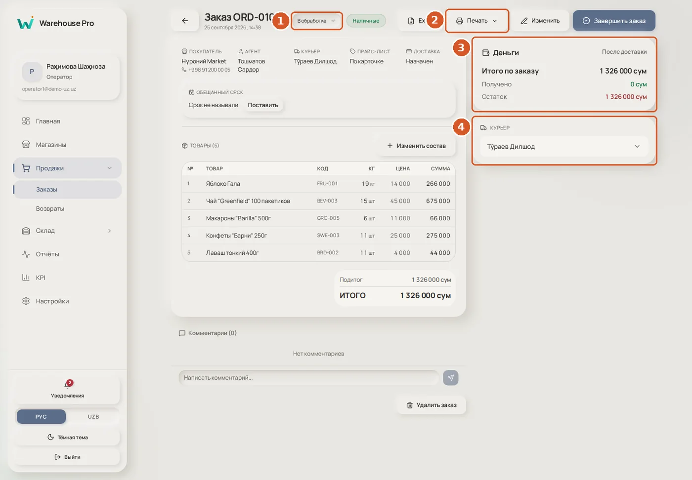
Рис. 31. Карточка заказа: состав слева, «Деньги» и «Курьер» справа
1Статус — здесь система переспросит «Изменить статус?»; «Доставлен» откроет окно «Завершить заказ»
2«Печать» — накладная, счёт, ТОРГ-12; у доставленного — «Чек 58 мм (QR)»
3«Деньги» — итого, получено, на руках у курьера, остаток; «Закрыть расчёт»
4Курьер на один заказ; на весь лист — в «Погрузочных листах»
«Ожидает». Заказ агента со скидкой выше порога (директор задаёт его в «Настройках»: «Порог скидки для полевых сотрудников, %») не отклоняется у прилавка, а приходит в офис со статусом «Ожидает» и держит резерв. Офису приходит уведомление «Заказ ORD-… ждёт подтверждения».
В сводке нажмите «Ожидает» → откройте заказ. Под шапкой карточки — жёлтая плашка «Ждёт подтверждения офиса — чтобы подтвердить, переведите в «новый»» с причиной: скидка N% выше порога M%.
Проверьте состав и скидку; при необходимости «Изменить» у состава или поле «Скидка (%)» → «Сохранить».
Подтвердить — в шапке выберите статус «Новый»: заказ идёт в сборку. Отклонить — статус «Отменён»: резерв освобождается, агент видит это на телефоне.
Частичная доставка. Когда курьер нажал «Оформить подробно» (см. «Курьер (телефон)»), у строки состава появляется пометка «Частичная доставка — причина», заказанное количество зачёркнуто, рядом — довезённое. В «Истории корректировок» — запись «Частичная доставка»: сумма «было → стало», кто внёс и сколько фото; в блоке «Деньги» — «Итого по заказу» уже по довезённому, «Получено», «На руках» и «Остаток». Долг магазина считается по довезённому, а не по заказанному.
СоветПричина ожидания видна только в карточке заказа — открывайте его, а не меняйте статус из строки вслепую. Отклонённый заказ агент оформит заново уже с правильной скидкой.
Карточка заказа: документы, деньги, курьер
Зачем: в одной карточке — всё, что спросят про заказ: какая накладная печаталась, сколько получено и сколько ещё должны, кто везёт, что и когда правили. Не нужно ходить по разделам.
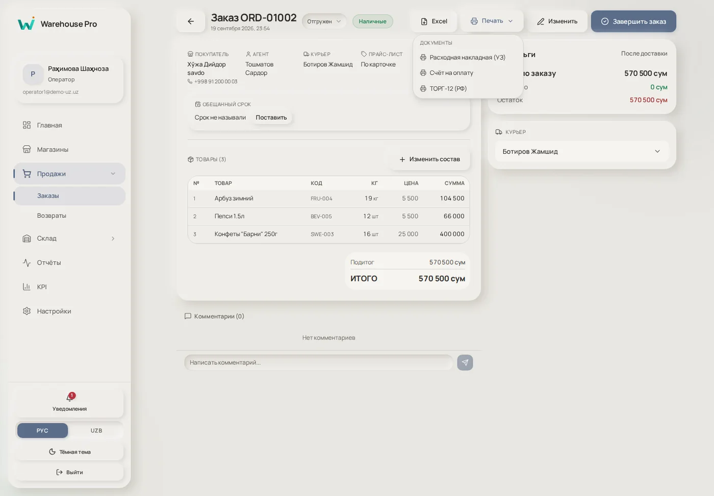
Рис. 32. «Печать» → «Документы»: «Расходная накладная (УЗ)», «Счёт на оплату», «ТОРГ-12 (РФ)», у доставленного — «Чек 58 мм (QR)»; каждая печать остаётся в «Журнале действий»
«Деньги»: «Итого по заказу», «Получено», «На руках» (курьер заявил наличные, но в офис ещё не сдал), «Безнал в пути» (карта или перевод без выписки), «Остаток» — и подпись «Ждёт расчёта» или «Рассчитан» с датой. Ниже — каждая оплата строкой; у безнала кнопка «Пришло», когда деньги подтвердились выпиской.
«Принять деньги» → «Получено наличными» (по умолчанию — сколько заявил курьер), при нужде «Ещё принято» картой или переводом, остаток — «в долг магазину» со сроком → «Закрыть расчёт». Меньше заявленного — «Недостача», она останется на курьере (подробно — Часть 3, «Расчёт по заказу»).
«Курьер»: список «Выберите курьера» — на один заказ; на весь рейс курьер ставится в «Погрузочных листах».
«История корректировок»: частичные доставки и оплаты — «было → стало», кто внёс, фото. Комментарии внизу — переписка офиса по заказу, видна всем, кто его открывает.
СоветМагазин говорит «накладной не было» — откройте «Журнал действий» с фильтром «Заказы»: запись «напечатаны накладные» с датой и временем закрывает спор. Не печаталась — печатайте из «Документов» карточки.
«Выполнен»: закрыть заказ деньгами
Зачем: курьер отчитался устно, заказ доставлен — осталось записать, сколько денег пришло и чем. Одно окно: сумма, способ, примечание. После него остаток списан, оплата записана офисом и расчёт по заказу закрыт сразу — долг магазина сходится сам.
1«Завершить заказ» — статус «Доставлен», деньги и долг записаны
В строке заказа нажмите «Выполнен» (заказ должен быть в работе или отгружен).
«Сумма оплаты»: «Полностью» — вся сумма; часть — введите число, остальное станет долгом магазина; «Ничего» — денег не было, весь заказ в долг.
«Способ оплаты»: «Наличные», «Карта» или «Перечисление» — это попадёт в «Чем платят» в P&L и в «Деньги в поле» Контроля. «ПРИМЕЧАНИЯ» — если есть что сказать бухгалтеру.
«Завершить заказ» → статус «Доставлен», в блоке «Деньги» карточки появится платёж с пометкой «получено» и «Рассчитан», в долге магазина — остаток.
ВниманиеМагазин взял не всё — это не здесь. Часть товара возвращает курьер на телефоне через «Оформить подробно» («Частичный возврат»), или оператор — в «Возвратах». Завершённый заказ остаток уже списал; ошиблись в сумме — сторно платежа в карточке магазина («Деньги магазина» → «Сторно»), оно оставляет след в журнале.
Заказ по телефону
«Новый заказ» открывает окно из двух шагов: «Шаг 1 из 2 · магазин и товары» и «Шаг 2 из 2 · проверка и оплата». Заказ, оформленный в офисе, числится за оператором: чтобы засчитать его агенту магазина (KPI и зарплата), отметьте заказ галочкой → «…» → «Назначить агента».
1Магазин — поиск по названию, владельцу, району; справа красным — долг
2Товары — код или название; со сканера: код + Enter
3Корзина — количество «−/+», «Итого»
4«Далее» — к оплате; «Отмена» ничего не записывает
«Новый заказ» → в поле «Поиск магазина по названию, владельцу, району…» наберите любое из трёх → нажмите магазин. Рядом с магазином виден «долг N» — скажите его клиенту сразу.
В «Поиск товаров…» наберите код или название (или отсканируйте штрих-код и нажмите Enter) → «+» кладёт товар в «Корзину». У каждого товара написано «свободно N»; при нуле «+» не нажимается.
В корзине поправьте количество «−/+» → «Далее».
Шаг 2: проверьте состав; при нужде «Скидка (%)»; выберите «Способ оплаты» — «Наличные», «Карта», «Перевод», «В долг»; «Примечание» — для курьера. Внизу — «Итого к оплате».
«Создать заказ». Заказ появляется в списке со статусом «Новый» и сразу резервирует остаток.
Внимание«В долг» прибавляет сумму заказа к долгу магазина. Если у магазина задан кредитный лимит и долг с этим заказом его превышает, система откажет: «Кредитный лимит магазина «…» превышен: долг … + заказ …» — примите оплату другим способом. Лимит меняется в карточке магазина, поле «Кредитный лимит (пусто — без лимита)», но это решение директора.
СоветПорог скидки на оператора не действует: заказ со скидкой, оформленный в офисе, сразу «Новый». Скидка всё равно попадает в журнал действий.
Погрузочный лист
Лист — задание складу на один рейс: какие товары и в каком количестве собрать под выбранные заказы. Один заказ может быть только в одном незакрытом листе.
Отметьте заказы галочками (обычно «Новые» и «В обработке» одного маршрута) → внизу «Загруз. лист».
В окне «Загрузочный лист» выберите «Формат»: «Сводный» — итог по товарам для склада, «По маршруту» — по магазинам для курьера.
«Сформировать лист». До этой кнопки ничего не записано — «Отмена» не оставляет следа. После — лист получает номер ZL-…, а заказы закрепляются за ним.
В предпросмотре — «Заказов», «Позиций», «Вес» и строки. «Печать» — задание кладовщику; «Готово, без печати» — просто закрыть окно.
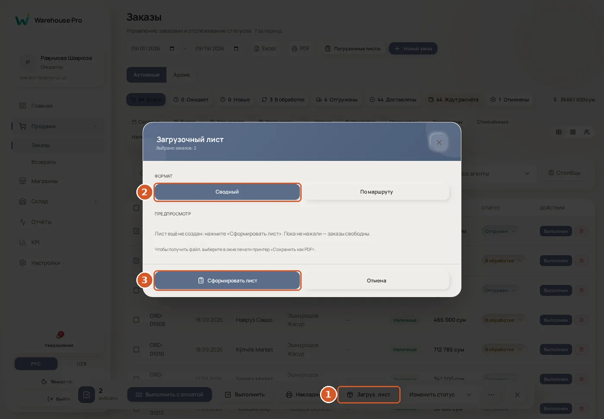
Рис. 35. Создание листа: формат и «Сформировать лист»
1«Загруз. лист» на панели выбранных заказов
2Формат: «Сводный» складу, «По маршруту» курьеру
3«Сформировать лист» — только теперь заказы закрепляются
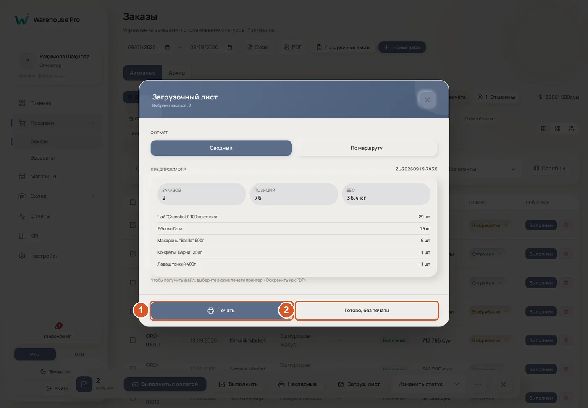
Рис. 36. Лист сформирован: предпросмотр и печать
1«Печать» — на бумаге есть колонки «Партия (срок)» и пустая «Собрано»
2«Готово, без печати»
СоветЧтобы получить файл вместо бумаги, в окне печати выберите принтер «Сохранить как PDF». Колонка «Партия (срок)» подсказывает кладовщику, какую партию брать первой — ту, у которой срок ближе.
Сборка листа и курьер
«Погрузочные листы» (кнопка сверху экрана «Заказы») — последние листы, включая отгруженные: номер, сколько заказов, статус, агент, курьер, недостача.
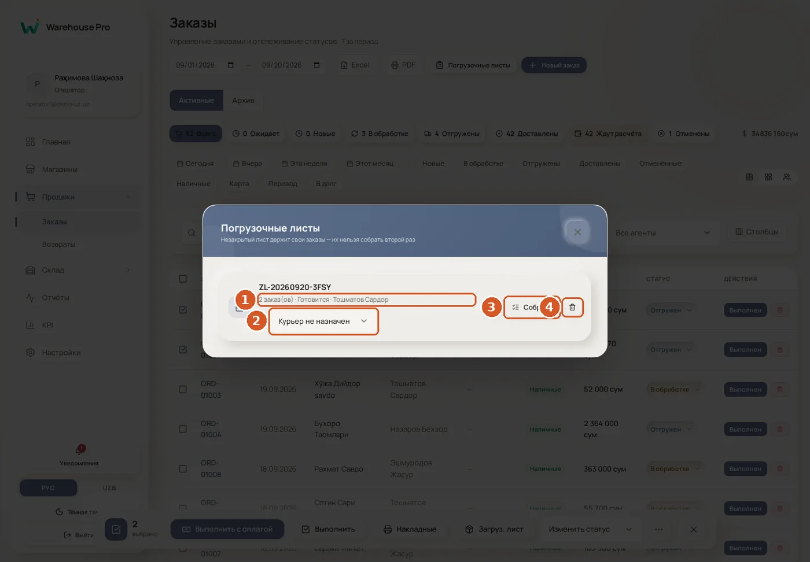
Рис. 37. Список листов: собрать, назначить курьера, удалить ошибочный
2Курьер на весь лист — заказы уходят ему на телефон
3«Собрать» — сборка по строкам
4Удалить лист — заказы освобождаются, сами заказы не трогаются
«Собрать» → под листом раскрывается таблица: «Товар», «Нужно», «Партии», «Собрано». В «Собрано» по умолчанию стоит «Нужно» — исправьте только строки с недостачей.
Внизу — «Всё по списку» или «Недостача: N поз.» → «Подтвердить сборку». Лист становится «Готов»; недостача остаётся в строках и уходит офису уведомлением.
Выберите курьера в поле «Курьер не назначен» — все заказы листа появятся у него в «Доставки» на телефоне.
Дальше кнопка у листа показывает следующий шаг: «Загружается» → «Загружен» → «Отгружен». Отгруженный лист закрыт: его заказы можно собирать заново только новым листом.
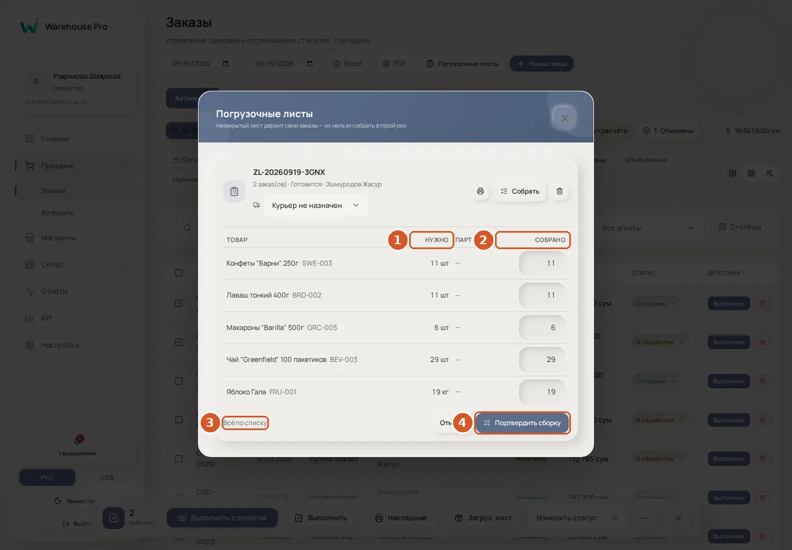
Рис. 38. Сборка по строкам: «Нужно», «Партии», «Собрано»
1Нужно — сколько заказано
2Собрано — введите факт, если меньше
3Итог: «Всё по списку» или «Недостача: N поз.»
4«Подтвердить сборку» → лист «Готов»
ВниманиеНезакрытый лист держит свои заказы — их нельзя собрать второй раз. Лист, собранный по ошибке, не «прогоняйте» до «Отгружен»: это запишет отгрузку, которой не было. Нажмите корзину у листа — «Удалить погрузочный лист?» → «Удалить»: заказы освободятся.
Что делать с недостачей: сверьте «Склад» → «Доступно» и партии у товара; расхождение с полкой закрывается инвентаризацией (см. «Склад» ниже). Заказ при этом не правится сам — если магазину поедет меньше, курьер оформит частичную доставку.
Приходы
«Приходы» — поступление товара на склад: машина, расходы на доставку, поставщик и долг перед ним, строки товаров с партиями и сроками. Вкладка «Контрагенты и долги» — расчёты с поставщиками.
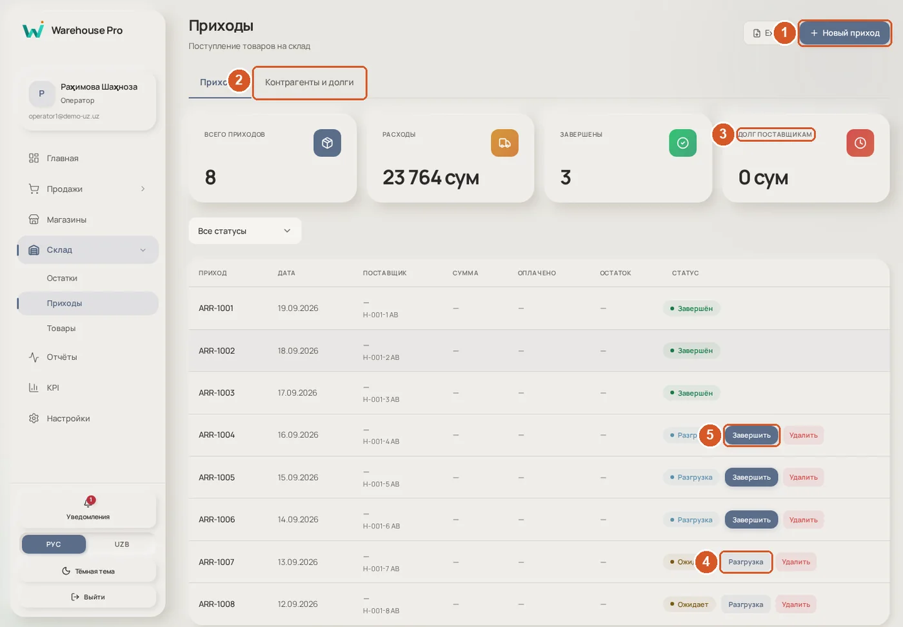
Рис. 39. Экран «Приходы»: список и статусы
1«Новый приход»
2«Контрагенты и долги» — поставщики, платежи, возврат поставщику
3Долг поставщикам — сумма по незакрытым поставкам
4«Разгрузка» — приход «Ожидает» → машина разгружается
5«Завершить» — только теперь остаток на складе растёт
«Дата и расходы»: «Дата», «Топливо», «Дорога», «Прочее» — «Итого расходов» считается само и попадёт в отчёты.
«Поставщик и долг»: «Без поставщика», поставщик из списка или «+ Новый поставщик…». У поставщика укажите «Сумма долга», «Валюта», «Срок оплаты»; для долларов — «Курс на день сделки».
«Товары»: строка — «Выберите товар…», «Кол-во», «Себестоимость», «Цена продажи», «Состояние», «Ожидалось» (по накладной), «Партия», «Годен до». «Добавить товар» — следующая строка. Сканер: поле «Штрих-код + Enter» или кнопка «Сканер» — каждый код прибавляет единицу.
«Сохранить» — приход записан со статусом «Ожидает», остаток ещё не изменился. «Сохранить и завершить» — сразу «Завершён», товар на складе.
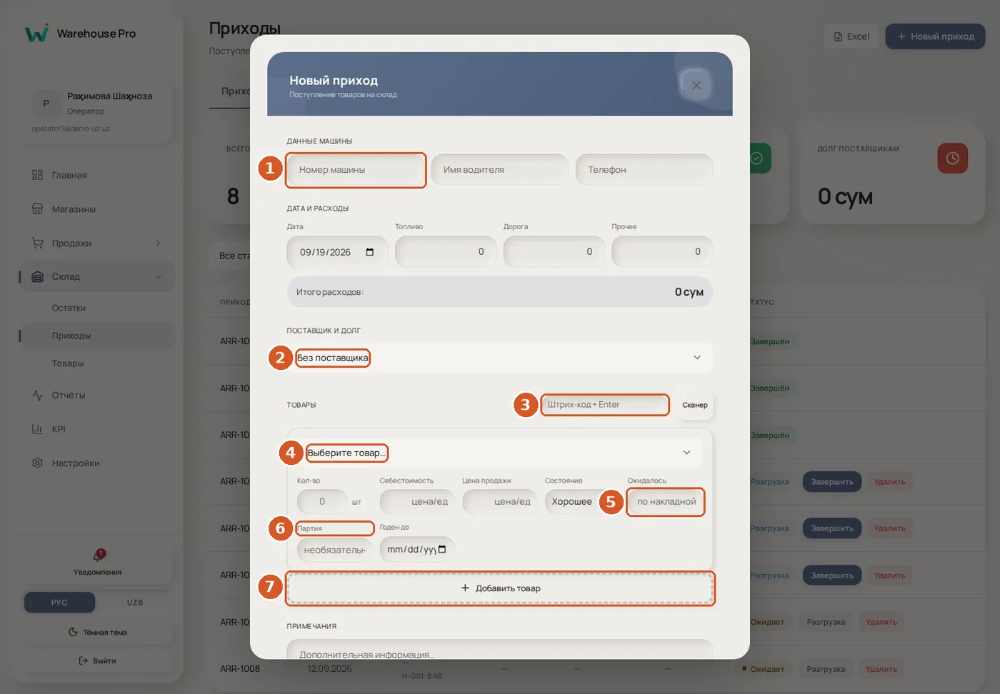
Рис. 40. «Новый приход»: машина, расходы, поставщик, строки товаров
1Данные машины — необязательно
2Поставщик и долг — отсюда берётся «Долг поставщикам»
3Штрих-код + Enter — сканер-клавиатура
4Строка товара: количество, себестоимость, цена продажи
5«Ожидалось» — по накладной; расхождение с «Кол-во» видно в приходе
6Партия и «Годен до» — без них отчёт о сроках и FEFO не работают
7«Добавить товар» — следующая строка
Статусы в списке: «Ожидает» → кнопка «Разгрузка» → «Завершить» → «Завершён». Остаток растёт только на «Завершён»; до этого приход можно «Удалить».
Клик по строке — «Детали прихода»: машина, расходы, товары; кнопки «Накладная» и «Этикетки» печатают документ и штрих-коды на партию.
«Контрагенты и долги»: фильтры «Все», «С долгом», «Просроченные»; у поставки — «Оплатить» → окно «Платёж контрагенту»: «Сумма платежа», «Способ оплаты» → «Записать платёж»; «Вернуть товар» → «Вернуть и списать с долга»: товар уходит со склада, долг поставщику уменьшается по себестоимости.
СоветЧерновик прихода сохраняется на компьютере: если закрыли окно или пропала связь, при следующем «Новый приход» появится «Продолжаем набранный приход».
ВниманиеСебестоимость в строке прихода — это себестоимость партии в P&L и в оценке склада. Пустая или неверная цена искажает маржу директора. «Удалить» приход — безвозвратно.
Рис. 41. «Детали прихода»: «Ожидалось» против «Кол-во», «Партия», «Годен до», «Себест.», расходы «Дорога», «Топливо», «Прочее» и «Итого расходы»
1«Этикетки» — распечатать штрих-коды на эту партию
Контрагенты и долги поставщикам
Зачем: приход в долг — это ваш долг поставщику. Программа ведёт его так же, как долг магазина перед вами: «Должны нам» и «Долг +», платежи, акт сверки, возврат товара со списанием с долга.
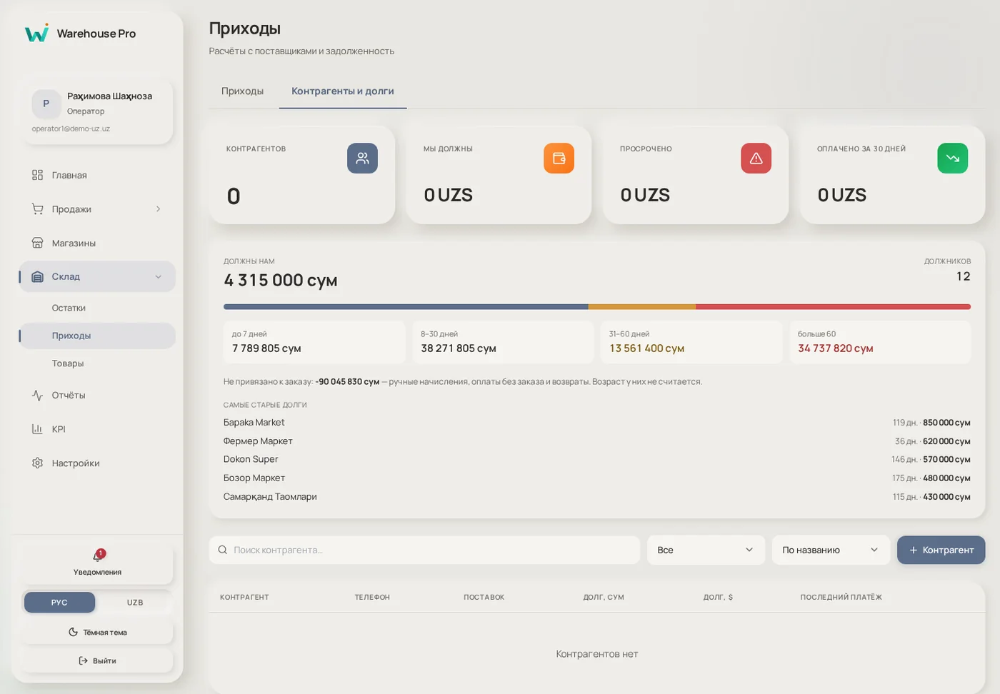
Рис. 42. «Приходы» → «Контрагенты и долги»: список поставщиков с долгом в сумах и долларах, «Записать платёж», «Акт сверки», «Вернуть товар»
Заплатили поставщику — «Записать платёж»: сумма и дата. Больше остатка долга программа не примет.
Спор о сумме — «Акт сверки»: все приходы и платежи за период с входящим и исходящим остатком; печатается и отправляется.
Вернули брак — «Вернуть товар» → «Вернуть и списать с долга»: остаток уменьшится, долг тоже. Долг в долларах пересчитается по курсу той поставки.
Возвраты от магазинов
Возврат заводит агент с телефона у прилавка; офис его рассматривает и проводит. Пока возврат не проведён, ни остаток, ни долг магазина не меняются.
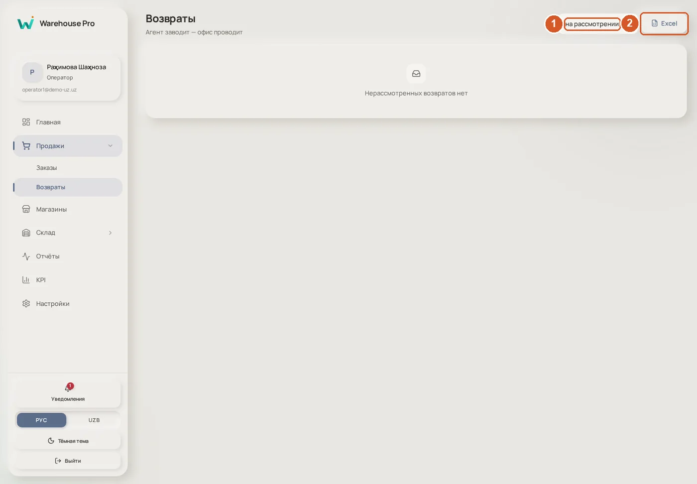
Рис. 43. Экран «Возвраты»: очередь «на рассмотрении»
1Состояние: «на рассмотрении», «одобрен», «проведён», «отклонён», «все»
2Excel — выгрузка показанного списка
Откройте «Возвраты» — по умолчанию показаны возвраты «на рассмотрении»: «Номер», «Магазин», «Причина» («брак», «не тот товар», «истёк срок», «повреждён», «другое»), «Сумма».
Стрелка у строки раскрывает «Состав возврата» — товары и количество. Сверьте с тем, что привёз курьер.
«Одобрить» или «Отклонить». Отклонённый возврат денег не двигает.
У одобренного — «На склад» (товар годен, возвращается в остаток) или «Списать» (брак, просрочка). Система переспросит «Провести возврат на склад?» / «…списанием?» → подтвердите. Возврат становится «проведён», долг магазина по заказу уменьшается.
Блок «Проведено за месяц — по причинам» показывает, почему возвращают: если растёт «истёк срок» — смотрите «Склад» → «Отчёты» → «Сроки годности», если «не тот товар» — говорите с агентом.
Внимание«На склад» и «Списать» — необратимы: первое прибавляет остаток, второе нет, но долг магазина уменьшают оба. Возврат поставщику — не здесь, а в «Приходы» → «Контрагенты и долги».
Склад: остаток, резерв, свободно
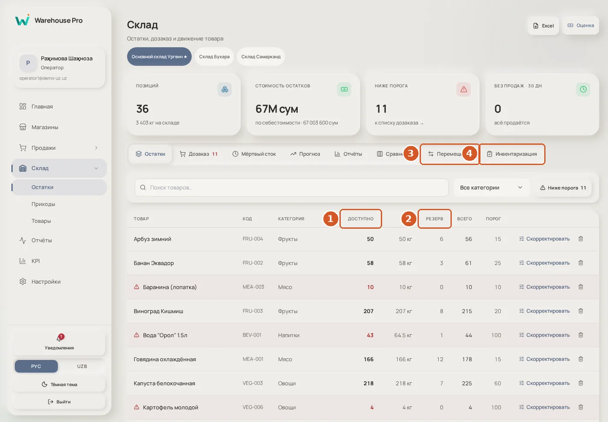
Рис. 44. Экран «Склад», вкладка «Остатки»
1«Доступно» = «Всего» − «Резерв»; продать можно только это
2«Резерв» — держат открытые заказы
3«Перемещения» — между складами
4«Инвентаризация» — пересчёт документом
Строка товара: «Доступно», «Вес», «Резерв», «Всего», «Порог». Красный треугольник — остаток ниже порога дозаказа (порог задаётся в карточке товара).
«Скорректировать» → «Движение товара»: «ТИП ОПЕРАЦИИ» — «Приход» (добавить), «Расход» (списать), «Корректировка» (установить точное кол-во) → «КОЛИЧЕСТВО» → «ПРИМЕЧАНИЕ» (например: «возврат от клиента») → «Применить». Каждое движение остаётся в истории.
Лента разделов под плитками: «Остатки»; «Дозаказ» — что уже ниже порога и сколько заказать по скорости продаж; «Мёртвый сток» — товары без продаж N дней; «Прогноз» — когда кончится; «Отчёты» — сроки годности, категории, движение, оборачиваемость; при двух складах — «Сравнение» и «Перемещения»; с правом на правку остатков — «Инвентаризация». Счётчик на разделе стоит только там, где число зовёт действовать.
Инвентаризация: «Новая инвентаризация» снимает остатки на этот момент → считайте полку (поле «Штрих-код + Enter» или «Сканер» прибавляют по единице; «Только расхождения» — фильтр) → «Применить». Излишек и недостача показаны в штуках и по себестоимости; «Отменить» — ничего не меняет.
Справа сверху — «Excel» (остатки) и «Оценка» (остатки с себестоимостью — пока роль её видит). Над таблицей — поиск, «Все категории» и чип «Ниже порога»: оставляет строки, где свободный остаток не выше порога. В подвале таблицы — счётчик строк, «Показать ещё» и тихая ссылка «Завести строки остатков»: для товаров, у которых строки остатка ещё нет (старый каталог, загруженный до появления склада).
Внимание«Применить» инвентаризацию — это движение остатка на разницу: недостача списывается по себестоимости и уходит в P&L. Считайте несколько дней в одном черновике, но применяйте один раз.
Зачем: остаток — это «сколько есть». Четыре вкладки отвечают на следующие вопросы: что лежит без движения, что пора заказать, когда кончится и сходится ли учёт с полкой.
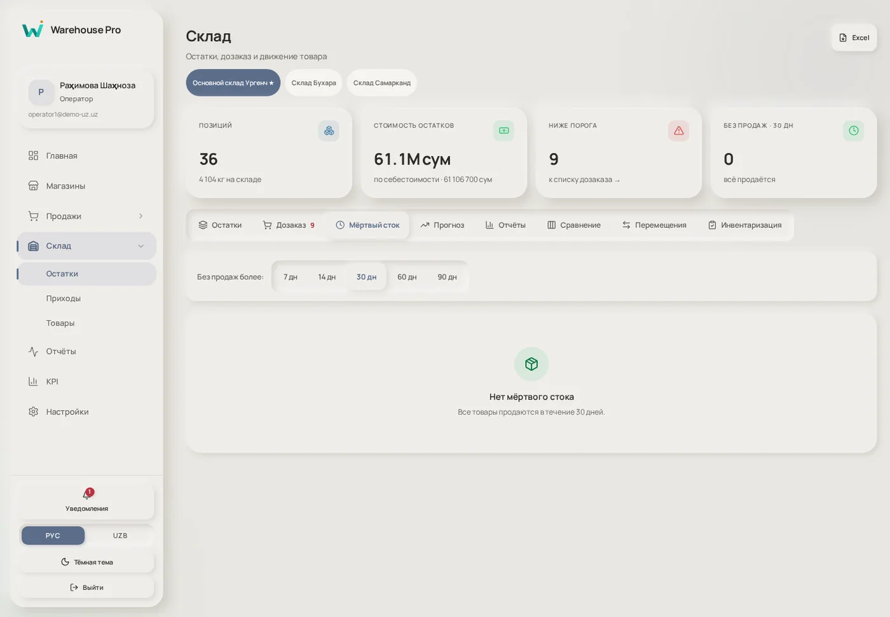
Рис. 45. «Мёртвый сток»: товары «Без продаж более» N дней — деньги, которые лежат на полке. «Экспорт» отдаёт список в Excel
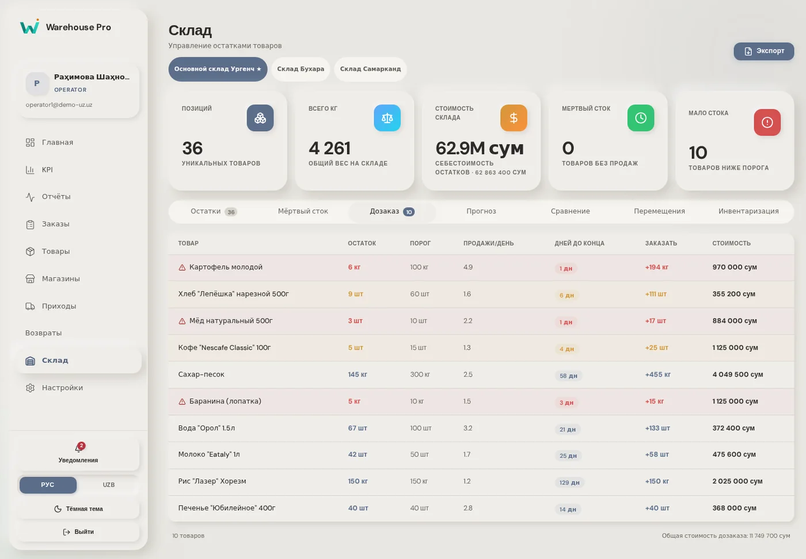
Рис. 46. «Дозаказ»: «Рекомендации по дозаказу» — что уже ниже «Порога дозаказа» и на сколько
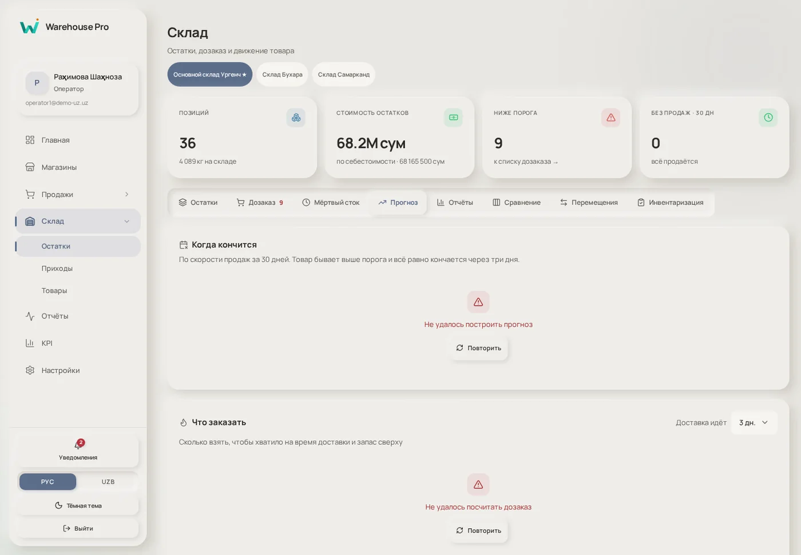
Рис. 47. «Прогноз»: «В день» продаётся, «Когда кончится», «Доставка идёт» столько-то дней — и сколько «Заказать», чтобы не остаться без товара
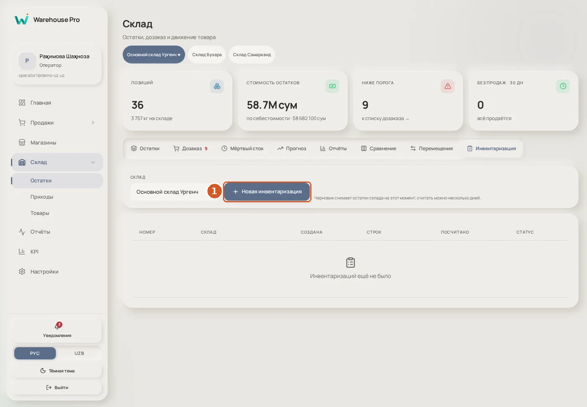
Рис. 48. «Инвентаризация»: документ со снимком остатка. «Новая инвентаризация» → считаете полку (можно «Сканер») → «Применить» разом
1«Новая инвентаризация» — зафиксировать учётный остаток на этот момент
«Новая инвентаризация»: программа запоминает «ПО УЧЁТУ» по каждому товару на этот момент. Дальше продажи не мешают — считайте спокойно.
Вводите «ПОСЧИТАНО» руками или «Сканер»: каждое считывание прибавляет единицу. Разница показывается сразу: «Недостача» или «Излишек».
«Применить» — остаток станет равен посчитанному, разница уйдёт в журнал движений как корректировка. «Отменить» — посчитанное пропадёт, остатки не изменятся.
Несколько складов: сравнение и перемещение
Зачем: когда товар лежит в двух местах, нужны два ответа — где сколько и как перевезти. Продажа при этом всегда идёт с основного склада: заказ агента резервирует именно его остаток.
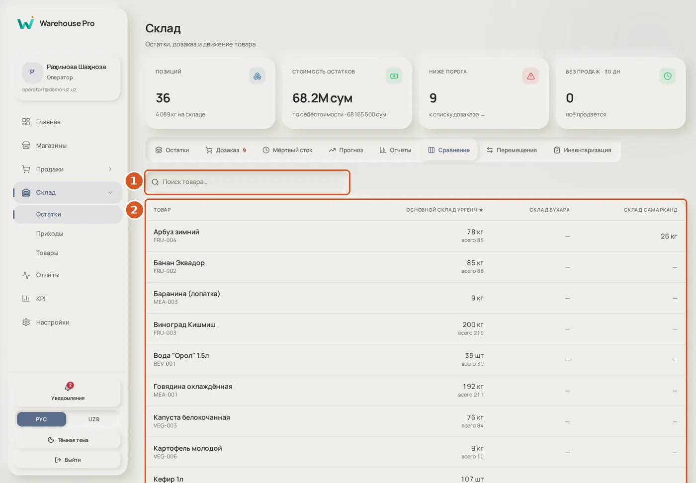
Рис. 49. «Сравнение»: одна таблица — товар в строке, склады в столбцах. Сразу видно, где пусто, а где лежит лишнее
1«Поиск товара…» — сузить таблицу
2Столбцы — склады; жирным — основной
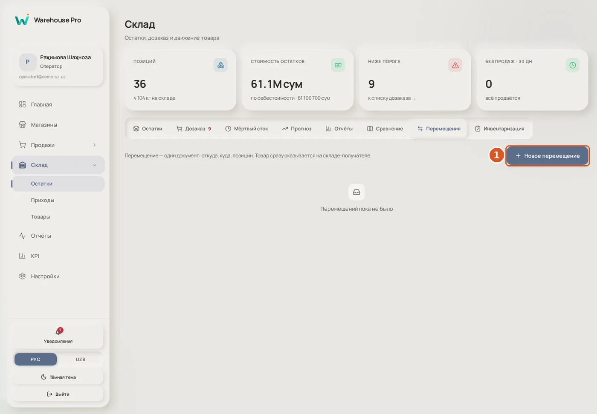
Рис. 50. «Перемещения»: «Новое перемещение» и история — «Откуда → куда», позиции, дата, кто провёл
1«Новое перемещение» — документ на несколько товаров
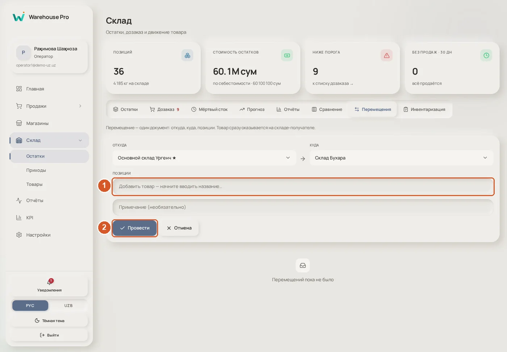
Рис. 51. Документ перемещения: «Откуда», «Куда», строки «Позиции» с «Кол-во», «Примечание» и кнопка «Провести»
1«Добавить товар — начните вводить название…»
2«Провести» — остаток уходит с одного склада и приходит на другой в один шаг
«Склад» → «Перемещения» → «Новое перемещение». Выберите «Откуда» и «Куда» — оба склада, разные.
Начните вводить название товара, выберите из списка, поставьте «Кол-во». Больше, чем доступно на складе-источнике, программа не пропустит.
«Провести» → «Провести перемещение?» → «Провести». Остаток изменится на обоих складах сразу; в «Журнале действий» появится запись «Перемещение проведено» с обоими складами.
СоветПеремещать может и оператор — если директор поставил ему галочку «Править остатки и перемещать» в «Настройки» → «Права оператора». Без неё кнопки «Новое перемещение» у оператора нет.
ВниманиеПеремещение — не продажа: долг и выручка от него не меняются. Товар на втором складе не продаётся агентами, пока его не перевезли на основной.
«Склад» → «Отчёты»: что сгорает
Это вкладка «Отчёты» на странице «Склад». Сверху — строка оценки: «Розничная оценка», «Маржа» с процентом и та же стоимость по себестоимости, что на плитке над вкладками; «Excel» и «PDF» выгружают отчёт целиком.
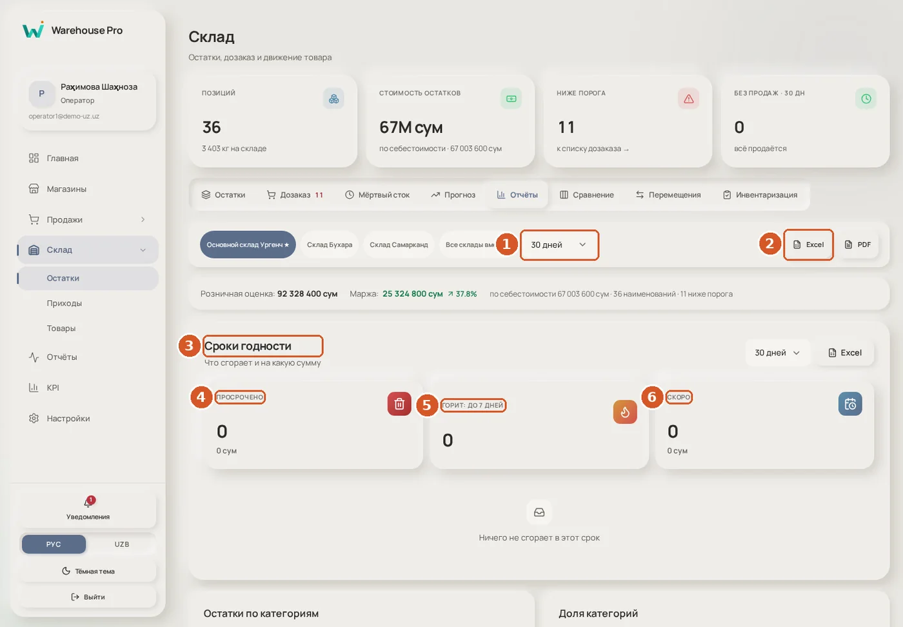
Рис. 52. «Склад» → «Отчёты»: сроки годности, категории, движение и оборачиваемость
1Период отчёта: 7, 14, 30, 90 дней
2Excel / PDF — весь отчёт
3«Сроки годности» — что сгорает и на какую сумму
4«Просрочено» — в отгрузку уже не уйдёт, только списать или вернуть поставщику
5«Горит: до 7 дней» — продать первыми
6«Скоро» — в пределах выбранного периода
Партии со сроком берутся из строк прихода («Партия», «Годен до»). Приход без срока в этот отчёт не попадает.
Просроченное: списать через «Склад» → «Инвентаризация» (или «Скорректировать» → «Расход») либо «Приходы» → «Контрагенты и долги» → «Вернуть товар». В отгрузку просроченная партия не попадёт — FEFO её пропускает.
Ниже — «Остатки по категориям», «Доля категорий», «Движение товаров» (приход/расход за период), «Расходы на доставку» из приходов, «Топ товаров по стоимости», «Оборачиваемость».
Товары и магазины
Рис. 53. Экран «Товары»: каталог
1«Добавить» — новый товар
2«Импорт» — каталог из Excel (.xlsx, .xls, .csv)
3Поиск по названию или коду
4«Категории» — завести и переименовать
5«Низкий остаток» — сколько товаров ниже порога
«Добавить» → «Новый товар»: обязательны «Код *», «Название *», «Цена продажи *». «Штрих-код» нужен для сканера; «Себестоимость» — пока нет прихода; «Порог дозаказа» красит остаток красным; «В упаковке, ед.» и «Название упаковки» дают ввод коробками в приходе; «Масса 1 ед. в кг» считает вес листа → «Сохранить».
Карточка товара: цена, «себест.», категория, остаток; корзина справа — удалить. Товар с историей заказов или приходов не стирается, а становится неактивным и уходит из каталога.
Рис. 54. Экран «Магазины»: территории и поиск
1«Добавить» — новая точка
2«Все магазины» — плоский список вместо территорий
3Поиск: название, владелец, телефон
4«Только с долгом» — кому звонить
«Добавить»: «Название *», «Владелец», «Телефон», «Город», «Район», «Адрес», «— Агент —», «— Территория —», «Заметки». Без агента точка не появится у него на телефоне в «Магазинах», в планах визитов и в его KPI.
Магазин звонит «сколько я должен?» — откройте его карточку: «ТЕКУЩИЙ ДОЛГ», «Деньги магазина» (платежи за 30 дней, «Сторно» ошибочного), «Добавить платёж» — деньги, принятые в офисе. «Акт сверки» за период — «Печать» или Excel для клиента.
«В архив» убирает точку из планов, карты и поиска, но оставляет заказы и долг; «Вернуть в работу» — обратно. «Удалить насовсем» доступно только для точки без истории.
Рис. 55. «Добавить»: карточка нового товара — код, название, цены, категория, штрих-код, порог дозаказа, упаковка, вес и фотоРис. 56. Страница товара: большое фото, цена и себестоимость, остаток с резервом и «Доступно», партии и движенияРис. 57. Карточка магазина: долг и платежи, заказы точки, отчёты о визитах, «В архив» / «Вернуть в работу»Рис. 58. «Импорт» магазинов из Excel: шаблон → заполнить → загрузить → проверить, что программа принялаРис. 59. «Территории»: цветные зоны с центром и радиусом; «Авто-назначение» раскладывает магазины по городам, районам или по самим магазинам
Штрих-коды
Рис. 60. Экран «Штрих-коды» (/barcode)
1«СКАНИРОВАТЬ КАМЕРОЙ» — ноутбук или телефон
2Поиск по коду или названию — покажет цену и остаток
Найденный товар: «Заказ» — переход в мастер нового заказа (/orders/new), товар там выбирается заново; значок принтера — в «ОЧЕРЕДЬ НА ПЕЧАТЬ» → «Печать этикеток».
СоветСканер-клавиатура работает везде, где есть поле поиска товара: в «Новом заказе», в приходе, в инвентаризации. Отсканируйте код — товар добавится, следующий скан добавит следующий. В приёмке это быстрее любого списка.
Конец дня — проверьте
Проверка
«Заказы» → «Ожидает» = 0: по каждому нажато «Подтвердить» или «Отклонить».
«Заказы» → «Ждут расчёта» = 0: по каждому доставленному заказу деньги курьера приняты — «Закрыть расчёт» в карточке или «Выполнен» с суммой.
«Приходы»: разгруженные машины — «Завершён», у строк есть партия и «Годен до».
«Возвраты»: очередь «на рассмотрении» пуста.
Директор
УтроГлавная: выручка, довезено, долги, сигналы; карта — кто вышел
ДеньKPI агентов, «Ожидает» и спорные заказы, аудит-лог
ВечерОтчёты за день; раз в неделю — P&L; раз в месяц — зарплата
Директору открыто всё: «Главная», «Продажи», «Магазины», «Склад», «Команда», «Финансы», «Настройки», «Биллинг», «Журнал действий». В этой главе — страницы, которых нет у других: «Главная», «Отчёты» и «P&L» («Финансы»), «Зарплаты» и «Пользователи» («Команда»), «Настройки», «Биллинг» и «Журнал действий»; «Контроль» разобран в Части 3. Карта, планы и KPI у директора те же, что у супервайзера — см. «Супервайзер». Заказы, приходы и склад — см. «Оператор офиса и склад».
Главная — пять вопросов дня
Рис. 61. Главная: четыре плитки, лента сигналов, динамика и заказы в работе
1Выручка за сегодня и стрелка «к вчера»; клик — «Отчёты»
2Заказов оформлено сегодня; клик — «Заказы»
3Довезено сегодня N из M — жёлтым, пока есть недовезённые
4Долг всех магазинов на сейчас; клик — «Отчёты» → «Долги»
5«Валовая прибыль» за 90 дней: выручка минус возвраты и себестоимость
6Сигналы — каждая карточка ведёт на экран, где на неё отвечают
7Динамика продаж: 7 дней, 30 дней или месяц
8Заказы в работе — открытые сейчас, без доставленных и отменённых
Плитка
Что считает
Куда ведёт клик
«Выручка · сегодня»
Сумма заказов, оформленных сегодня и уже доставленных. Стрелка — против вчера; пока вчера пусто, стрелки нет.
«Отчёты»
«Заказы · сегодня»
Сколько оформили сегодня; строкой ниже «Довезено сегодня N из M»: N — доставлено сегодня, M — вместе с ещё не довезёнными из назначенных курьерам.
«Заказы»
«Долг клиентов»
Сумма долга всех магазинов прямо сейчас.
«Отчёты» → «Долги»
«Валовая прибыль»
За последние 90 дней: (выручка − возвраты − себестоимость) / (выручка − возвраты). Себестоимость берётся из строк заказа на момент продажи.
«Отчёты»
Лента сигналов под плитками — то, на что нужно ответить сегодня. Показываются не больше четырёх, в порядке срочности: срок годности, остаток, новые заказы, план визитов, долги. Текст сигналов — всегда по-русски, и в узбекском интерфейсе тоже.
Сигнал
Когда появляется
Куда ведёт
«Просрочено партий: N»
На складе есть партии с истёкшим сроком; сумма — по цене закупки
«Склад» → «Отчёты»
«Сгорает за неделю: N парт.»
Срок годности выйдет в ближайшие 7 дней
«Склад» → «Отчёты»
«Низкий остаток: товар»
Свободный остаток на основном складе ниже точки заказа (до пяти товаров)
«Склад»
«N новых заказов»
Заказы в статусе «Новый» ждут офиса
«Заказы»
«План: 5/13 (38%)»
Визиты на сегодня по всем агентам; красный — сделано меньше половины
«План визитов»
«Долг: магазин»
Долг магазина выше 500 000 сум (три самых крупных)
«Отчёты» → «Долги»
Утро, две минуты: посмотрите четыре плитки → пройдите по сигналам слева направо → откройте «Заказы в работе»: если «Новых» много к обеду — офис не успевает.
«Довезено N из M» жёлтым после 17:00 — позвоните оператору: курьеры не отчитались или лист не закрыт.
«Последние заказы» внизу — десять свежих; стрелка справа ведёт в полный список.
СоветПлитки обновляются сами при каждом новом заказе и смене статуса — перезагружать страницу не нужно. По основному складу считается только сигнал «Низкий остаток».
Отчёты — обзор, продажи, агенты, долги
Рис. 62. Отчёты: период, четыре раздела, «Сводка», «Печать» и каталог выгрузок
1Период — 7, 30 или 90 дней; даты видны под заголовком
2«Сводка» — Excel со всей страницей как есть
3«Печать» — окно печати; для файла выберите принтер «Сохранить как PDF»
4«Долги» — четвёртый раздел; рядом «Обзор», «Продажи», «Агенты»
5«Все выгрузки» — каталог готовых отчётов в Excel
6«План сегодня» — визиты по агентам прямо сейчас
7«Больше всех должны» — кому звонить первым
«Обзор»: выручка, заказов, средний чек и «Зависло в долгах» за период — со сравнением с таким же предыдущим периодом; график визитов и заказов; топ товаров, магазинов, агентов.
«Продажи»: по магазинам, по способам оплаты, топ товаров за период.
«Агенты»: таблица агентов и ниже «Что продаёт каждый агент» — состав продаж по товарам за свои даты.
«Долги»: должники сейчас и «Архив задолженности» — когда взяли и когда погасили.
Рис. 63. Долги: кто, сколько, как давно; ниже таблицы — архив движений
1«Должны нам» — общая сумма и число должников
2Возраст долга: до 7 дней, 8–30, 31–60, больше 60
3«Не привязано к заказу» — ручные начисления и оплаты без заказа; возраст у них не считается
4«Возраст» — сколько дней висит самый старый заказ магазина
5«Excel» — таблица должников файлом
Откройте «Отчёты» → «Долги»: сверху — сумма и четыре корзины по возрасту.
Оранжевая корзина «31–60 дней» и красная «больше 60» — звонок агенту сегодня; магазин с возрастом больше 60 дней переводите на предоплату.
Ниже таблицы — «Архив задолженности»: выберите магазин и период → увидите «Взяли в долг», «Погасили», «Изменение долга» и каждое движение с документом.
ВниманиеДолг считается по заказу: сумма доставленного минус оплаты по нему. Если оператор переведёт заказ в «Доставлен» руками до отчёта курьера, долг магазина вырастет на то, что ещё не довезли. Правила — в «Части 4».
Рис. 64. «Продажи»: выручка по дням, товарам и категориям. Период — вверху; «Excel» отдаёт таблицуРис. 65. «Агенты»: продажи, визиты и собранные долги по каждому — кого хвалить, с кем разговаривать
«Продажи» отвечают «что продаётся»: товар или категория, которые тянут выручку, и те, что не продаются вовсе — их место в «Мёртвом стоке».
«Агенты» отвечают «кто продаёт»: сумма, число заказов, средний чек и визиты. Много визитов и мало заказов — агент ходит, но не продаёт; наоборот — продаёт по телефону, не заходя.
P&L — заработали или потеряли
Рис. 66. «Доходы и расходы»: ответ за период, четыре плитки, динамика по месяцам
Полоса под ответом показывает, куда ушла выручка: закупка, зарплата, «Осталось».
Ниже графика: «На чём заработали» — прибыль и маржа по товарам; «Чем платят» — наличные, перевод, долг; «Куда ушло на доставку» — приходы с топливом и дорогой.
ВниманиеСебестоимость берётся из цены закупки в приходе. Если приходы заведены без цены, себестоимость равна нулю, а маржа показывает 100% — как на снимке. Это не прибыль, а незаполненные приходы: попросите оператора вносить цену закупки в каждую строку.
СоветРаз в неделю: «30 дней» → сравните «Заработали» с прошлым периодом → откройте «На чём заработали» и найдите товары с маржой ниже 10% — их либо дороже продавать, либо дешевле закупать.
Зарплаты — начислить и выдать
Рис. 67. Зарплаты: фонд за период, состав начисления, строки по людям, «Выдать всем»
1Период: «Неделя», «Месяц», «Квартал»; стрелки — назад и вперёд
2«Ведомость» — Excel по всем сотрудникам за период
3Фонд оплаты: начислено всего, выплачено, к выплате
4Состав: оклады, комиссия, за доставки, обед и дорожные
5«Выплаты · N» — журнал выдач с ордерами
6«Только с остатком» — скрыть тех, кому уже всё выдано
7«Выплатить» — выдача одному: выплата или аванс, сумма, примечание
8«Оклад» — оклад за месяц и комиссия, % от продаж
9«Выдать всем» — каждому его остаток одной кнопкой; подтверждение обязательно
Выберите «Месяц» и нужный месяц стрелками. Под заголовком — сколько сотрудников в расчёте.
Проверьте «Состав начисления»: если «Оклады» равны нулю — оклады не заданы. Нажмите «Оклад» в строке сотрудника → введите «Оклад за месяц» и «Комиссия, % от продаж» → «Сохранить». Оклад записывается в текущий календарный месяц, даже если на экране прошлый; прошлые месяцы не меняются.
Строка агента может показывать «предложен вычет за подозрительные визиты» — нажмите «применить» или оставьте как есть. Решает директор, система только предлагает.
Выдать одному: «Выплатить» → «Выплата» или «Аванс» → сумма или «Весь остаток» → примечание → «Записать выдачу».
Выдать всем: «Только с остатком» → «Выдать всем» → в окне видно, скольким и сколько → «Выплатить».
Сотрудник видит выплату на телефоне и подтверждает «Получил»; в «Выплаты» в столбце «Получено» вместо «ждём» появится дата. Там же — «Печать ордера» с подписями «Выдал» / «Получил».
ВниманиеЗапись выплаты не изменяется и не удаляется. Ошибочную выдачу гасят встречной записью с минусом. Перед «Выдать всем» проверьте месяц в заголовке — кнопка выдаёт остаток именно за него.
СоветСтавки в одном месте: «KPI» → «Настройка ЗП». Там «Комиссия агентов» (% от выручки доставленных заказов), «Оплата курьеров за доставку» (сумма за штуку или % от довезённого — переключатель у каждого), «Обед и дорожные» (за рабочий день) и «Проценты по товарам» — исключения для отдельных позиций. Ставка применяется к следующему расчёту; уже посчитанный месяц пересчитывает кнопка «Пересчитать комиссии за месяц».
Рис. 68. KPI: клик по агенту — разбор балла, подозрительные визиты и зарплата за период
1Общий балл и оценка: A — от 90, F — ниже 40
2Из чего балл: план 30%, выручка 25%, конверсия 20%, без возвратов 15%, долги 10%
3Подозрительная активность: визит дальше 500 м от магазина, короче 5 минут, больше двух в один магазин за день или с подменой GPS
4Зарплата за период: оклад, комиссия, итого
5Детализация расчёта — откуда взялась комиссия
Рис. 69. «Выплаты»: выданное за период — сотрудник, дата, сумма и отметка, что он подтвердил получение с телефона
«Начисления» — сколько положено; «Выплаты» — сколько отдали. Разница между ними и есть «остаток к выдаче», по которому работает кнопка «Выдать всем». Выданное, а не начисленное, уходит в P&L расходом.
Рис. 70. Пользователи: счётчики, поиск, роль, строка с действиями
1«Создать» — форма: имя, e-mail, пароль, роль
2«Excel» — список сотрудников файлом
3Поиск по имени и e-mail
4Фильтр «Все роли»
5Ключ — «Сбросить пароль»: задать новый, не зная старого
6Выключатель — «Деактивировать»: доступ закрыт, история остаётся
7Метка — «Рабочая зона» агента на карте
Нажмите «Создать» → введите «Имя», «Email», «Пароль» (не короче 8 знаков) → выберите «Роль» → «Создать пользователя». Сотрудник входит сразу этим e-mail и паролем — на вебе и в приложении.
В списке ролей нет «Руководителя»: директор в организации один.
Ушёл из компании: значок выключателя → «Деактивировать». Заказы, визиты и зарплата человека остаются в отчётах; вернуть можно тем же значком — «Активировать».
Пришёл новый человек на место старого: щит — «Передать доступ» → «Новый логин (Email)» и «Новый пароль» → «Сохранить». Магазины и история переходят к нему, старый вход закрывается.
У агентов есть четвёртый значок — «Рабочая зона»: область на карте, внутри которой визиты считаются нормальными.
Ниже таблицы — «Приглашения» (кого позвали через мастер первого входа и кто ещё не вошёл; «срок вышел — позовите заново») и «Территории агентов»: у каждого агента — его территории, кнопка «Изменить». Территория — это маршрут, по которому супервайзер расставляет план на месяц.
ВниманиеНе заводите нового пользователя вместо ушедшего с тем же именем — в отчётах будет два человека. Используйте «Передать доступ» или деактивацию.
Рис. 71. «Создать»: имя, e-mail, пароль и роль. Пароль назначаете вы — сотрудник поменяет его в «Профиле»
Журнал действий — кто и когда
Рис. 72. Журнал действий: фильтры по разделам, «Обновить», «Выгрузить CSV». На новой организации пуст — это нормально
Сюда пишутся чувствительные действия: заказ отменён, оплата отменена (сторно), массовая смена статусов, напечатаны накладные, изменён кредитный лимит магазина, корректировка склада и инвентаризация, удалён товар или прайс-лист.
И действия с доступом: сброс пароля, передача доступа, деактивация, права оператора, ключи API, включение и отключение кода-подтверждения.
У каждой записи — кто, когда и «Детали»: что именно изменилось. Клик по строке раскрывает их.
СоветРаз в неделю откройте фильтр «Оплаты»: каждое сторно должно иметь понятную причину. Из программы журнал не очищается — записи хранятся; чистку старых записей делает только поставщик системы, и она сама попадает в журнал.
Биллинг — тариф и лимиты
Рис. 73. «Подписка и тарифы»: срок, использование лимитов, докупка мест, выбор тарифа
1Текущий тариф, сколько дней осталось, дата и цена в месяц
2Использование: пользователи, товары (SKU), заказы за месяц против лимита
3«Докупить сверх тарифа» — места сотрудников и позиции каталога поштучно
4«Отправить заявку» — оператор перезвонит и включит надбавку
5«Выберите тариф» — карточки тарифов с лимитами; текущий помечен
Три счётчика. Пользователи: на пределе нового сотрудника не добавить. Товары: на пределе новый товар в каталог не заведётся. Заказы в месяц — справочный: обнуляется первого числа, заказы не блокирует.
Не хватает пары мест, а старший тариф незачем — «Докупить сверх тарифа»: «+» прибавляет по пять к «Места сотрудников» или «Позиции каталога», точное число впишите в поле → «Отправить заявку». Надбавка остаётся при смене тарифа.
Оплата — Click, Payme, Uzum Pay; оператор поставщика связывается в течение 30 минут после заявки. Пробный период даёт все функции.
ВниманиеКогда подписка истекает, вход закрывается для всей организации — и для агентов в поле. Продлевайте за неделю: кольцо с днями — на странице «Биллинг», а полоса-предупреждение сверху появляется только за три дня до конца пробного периода.
Настройки — что заполнить директору
Рис. 74. Настройки: слева разделы, справа содержимое. Выбранный раздел попадает в адрес страницы
1«Компания» — реквизиты для накладных, валюта, порог скидки, точка заказа
2«Права оператора» — что оператор может в вашей организации
3«Telegram» — уведомления себе, группе и сотрудникам
4«1С» — обмен номенклатурой, контрагентами и заказами
5«Вход с кодом из приложения» — второй фактор для директора
Раздел
Что там
Кому виден
«Профиль»
Имя, телефон, смена пароля, «Вход с кодом из приложения»
всем
«Компания»
Название, валюта, реквизиты, логотип, порог скидки, точка заказа для новых товаров
директор
«Брендинг»
Логотип и цвета приложения для сотрудников и экрана входа
директор
«Склады»
Список складов и основной — с него продают
директор
«Прайс-листы»
Свои цены для отдельных магазинов; цену даёт список с бо́льшим приоритетом
директор, оператор
«Ключи API»
Доступ чужой программы к данным; ключ виден один раз
директор
«Права оператора»
Галочки по действиям; выключенное закрыто и на сервере
директор
«Telegram»
Свой Telegram, группа сотрудников, «Кому что приходит»
все; группа и правила — директор
«1С»
Подключение к 1С:Бухгалтерии по OData и расписание обмена
директор
«Внешний вид»
Тема и язык — личная настройка
всем
Telegram — чтобы о новом заказе, долге и остатке узнавать без открытия программы.
«Настройки» → «Telegram» → «Подключить в 1 клик»: откроется бот, нажмите в нём «Start». Или вручную: в Telegram найдите @userinfobot → /start → скопируйте числовой ID → вставьте в поле → «Подключить».
Проверьте: «Отправить проверку» — сообщение должно прийти в Telegram сразу.
Группа для офиса: «Получить код для группы» → создайте группу в Telegram, добавьте сотрудников и бота Warehouse Pro → отправьте в группу команду /link с кодом. События пойдут в этот чат.
Сотрудники: в списке «Сотрудники» видно, кто подключён; «Напомнить неподключённым» — бот сам напишет каждому. ID сотрудника можно вписать и вручную.
«Кому что приходит»: таблица событий × ролей — «Новый заказ», «Заканчивается товар», «Просроченный долг», «Назначена доставка». Поставьте галочки, кому что слать. Ночью с 22:00 до 08:00 сообщения копятся и приходят утром.
1С — коротко. Нужна 1С:Бухгалтерия 8 для Узбекистана с опубликованным OData. «Настройки» → «1С»: введите «Адрес публикации», «Пользователь 1С» и «Пароль» → «Проверить связь» → выберите «Организация», «Склад», «Тип цен» из списков самой 1С → задайте «Интервал обмена, мин» → включите нужное: «Номенклатура из 1С», «Контрагенты из 1С», «Доставленные заказы → реализация» → «Обмен по расписанию включён». Сверху видно последний обмен, очередь и последний отказ; магазины без пары в 1С создаются кнопкой в этом же разделе.
СоветВключите «Вход с кодом из приложения» в «Профиле» в первый же день: пароль директора — ключ ко всей организации, а с кодом украденный пароль вход не откроет.
Проверка
Реквизиты и валюта в «Компании» заполнены
Telegram подключён, «Кому что приходит» настроено
Оклады и ставки заданы, первая ведомость сошлась
Второй фактор у директора включён
Настройки по разделам
Ниже — каждый раздел «Настроек» отдельным снимком: что в нём и когда он нужен. Разделы «Профиль» и «Внешний вид» есть у всех; остальные видит только директор (прайс-листы — ещё и оператор с правом).
Рис. 75. «Компания»: название, адрес, ИНН, директор, телефон — это печатается на накладных; «Валюта»; порог скидки и точка заказаРис. 76. «Накладные»: три готовых шаблона, галочки граф и живой предпросмотр. Выбор действует на карточку заказа и на печать пачкой
1Шаблон: «Классическая» — как печаталось всегда; «Компактная» — два экземпляра рядом на листе, мелкий шрифт, телефон магазина и агент; «Подробная» — плюс долг магазина и штрих-код
2Переключатели «Логотип», «Экземпляров на листе» (Один / Два), «Расположение» (Друг под другом / Рядом — альбомный лист), «Размер шрифта» (Мелкий / Обычный) и галочки граф: телефон и адрес магазина, агент и его телефон (только вместе с агентом), курьер, артикул, единица, скидка, долг, штрих-код, способ оплаты, подписи, примечание, время печати
3Предпросмотр меняется сразу при каждой галочке и подстраивается под ширину окна; «Сохранить» — и с этой минуты так печатают все
Рис. 77. «Брендинг»: «Логотип», favicon, цвета кнопок и заголовков, «Заголовок на входе», «Email поддержки». Изменения увидят все сотрудники организацииРис. 78. «Склады»: список складов, «Редактировать склад», отметка основного. Продажи — только с основногоРис. 79. «Прайс-листы»: «Новый прайс-лист» → «Название», «Вид» (по магазину или «От количества») → цены по товарам → «Кому назначен». Пока список никому не назначен, он ни на что не влияетРис. 80. «Ключи API»: «Выпустить ключ» с названием и разрешениями; «Выданные ключи» — «Приостановить» или «Отозвать». Ключ показывается один разРис. 81. «Права оператора»: десять галочек — от «Править заказы» до «Загружать из файла». «Сохранить» применяется ко всем операторам сразуРис. 82. «Telegram»: откройте бота, нажмите /start, вставьте «Ваш Telegram chat ID» → «Подключить». Ниже — что будете получать и команда сотрудников с их подключениемРис. 83. «1С»: «Адрес публикации» OData, логин и пароль, организация, склад и тип цен; «Загрузить номенклатуру из 1С», «Доставленные заказы → реализация», «Интервал обмена, мин», «Журнал обмена»
Накладные занимают много бумаги — включите «Компактную»: два экземпляра на одном листе А4, номер и телефон магазина в шапке. Пока шаблон не выбран, карточка заказа печатает «Классическую», пачка — «Подробную».
Прайс-лист «по магазину» — своя цена крупному клиенту; «От количества» — цена ниже от N штук. Назначенный список агент увидит у прилавка сам: цена подставится при выборе магазина.
Ключ API нужен только внешней программе (сайт, бот, учёт). Выдавайте по одному ключу на программу и подписывайте «Кому выдан», чтобы потом знать, что отзывать.
1С: связь проверяется кнопкой сразу после ввода адреса. Пока «Журнал обмена» пуст или красный — заказы в 1С не уходят; читайте текст ошибки, обычно это адрес или права пользователя 1С.
Уведомления и поддержка
Рис. 84. «Уведомления»: новый заказ, низкий остаток, платёж — списком; «Непрочитанные» и «Прочитать все»Рис. 85. «Поддержка»: пишите прямо в окно — ответ придёт сюда же. «Завершить» закрывает разговор
Колокольчик вверху показывает число непрочитанных; сами события те же, что уходят в Telegram. В «Поддержку» пишите с описанием, что нажали и что увидели, — ответ придёт в это же окно, а не на почту.
Супервайзер
УтроКарта: кто вышел, кто без сигнала — позвонить
ДеньПланы: отметить визит за агента по звонку, добавить точку; KPI — кто отстаёт
Вечер«Как прошёл день»: время в точках, километры, замечания
В вебе у супервайзера: «KPI», «Карта», «План визитов», «Магазины», «Заказы», «Отчёты», «Настройки». Магазины и заказы — только посмотреть: кнопок создания и правки нет. На телефоне: «Главная», «Магазины», «Планы», «Нормы», «Долги», «Карта». Директор видит те же экраны.
Карта — кто вышел
Рис. 86. Карта: состав команды слева, метки агентов и магазинов, обновление каждые 30 секунд
1Фильтры: «Все», «На связи», «Были раньше», «Без сигнала» — с числами
2Последний сигнал от команды — если давно, телефоны выключены
3«Обновить» — не ждать 30 секунд
4«Показать всех» — уместить всех агентов на экране
5«Магазины» — точки на карте: «Долго не платят», «Есть долг», «Рассчитываются», «Заказов не было»
6Карточка агента: когда был, точность ±м, обход за день; клик — маршрут
Состояние
Что значит
Что делать
«На связи» (зелёный)
Сигнал за последние 10 минут
Ничего — человек работает
«Были раньше» (жёлтый)
Сигнал за сутки был, но больше 10 минут назад — телефон в кармане без сети или экономит заряд
Посмотрите время; если больше часа в рабочее время — позвоните
«Без сигнала» (серый)
За сутки ни одной точки: GPS выключен или геолокация не «всегда»
Позвонить: включить GPS и разрешение «всегда» (см. «Часть 5»)
Нажмите на карточку агента слева → карта покажет его маршрут за день, а под карточкой — «Обход» (точек обойдено из плана), «Норма» (план продаж за месяц), пробег в км, заряд телефона и «Фотоотчёты».
Красная пометка «подмена координат» у агента — телефон сообщил, что координаты подставлены приложением. Такие визиты попадут в «Подозрительную активность» в KPI.
Включите «Магазины» → красные метки — «Долго не платят», жёлтые — «Есть долг», зелёные — «Рассчитываются». Клик по метке: «Принёс за всё время», заказов, долг. Магазины без координат на карту не попадают — координаты заполняются в карточке магазина.
ВниманиеКрасный значок батареи под карточкой — заряд ниже 20%: точки и фотоотчёты скоро прекратятся, визиты останутся неподтверждёнными. Предупредите агента, пока он у розетки.
Рис. 87. Кнопка «Магазины» включает слой точек: видно, у какого магазина агент стоит и сколько до следующего
План визитов — день
Рис. 88. «Планы визитов», вкладка «День»: точки по агентам, отметки по звонку, «Как прошёл день»
1«Создать план» — вручную на выбранный день: агент, территория, магазины
2Вкладки: «День», «Месяц», «Нормы», «Отчёты»
3«Все агенты» — показать одного; справа — сделано из плана
4«Расписание визитов» — дни недели у каждой точки, задаётся один раз
Разовый план: «Создать план» → «Агент» → «Территория» (в скобках — сколько магазинов) → снимите галочки с ненужных точек → «Примечания» для всех → создать. Каждая точка станет отдельным визитом на этот день.
В течение дня: строки «Запланирован» меняются на «Посещён», когда агент отмечает визит на телефоне. Отчитался по звонку — нажмите «Посещён» сами; не доехал — «Пропущен».
Красная сумма справа в строке — долг этого магазина: агент должен забрать деньги на визите.
Вечером: «Как прошёл день» у каждого агента → пробег за день, «в точках», «в дороге», «вышел — закончил», «визитов с замечаниями». Замечание — визит отмечен далеко от магазина или слишком быстро. Если за день не пришло ни одной точки GPS, разбор так и скажет: подтвердить визиты нечем.
Значок фото в строке — «Открыть фотоотчёт»: снимок с визита.
«Расписание визитов — задать один раз и разворачивать в планы»: раскройте блок → выберите агента → найдите магазин → отметьте дни недели → «Сгенерировать». Дальше месяц расставляется по этому расписанию одной кнопкой.
План на месяц одной кнопкой
Рис. 89. Вкладка «Месяц»: расстановка визитов и сетка план/факт по дням
1«Сотрудник» — кому ставим
2«Что ставим» — «По расписанию сотрудника» или территория с днями недели
3«Не заполнять прошедшие дни» — чтобы не портить норму
4«Расставить месяц» — кнопка заранее показывает, сколько визитов выйдет
5Сетка: число в клетке — визитов в день; «План / факт» и процент справа
6«Убрать незакрытые» — снять со всего месяца визиты «запланирован»; посещённые остаются
«План визитов» → «Месяц» → стрелками выберите месяц (следующий можно расставить заранее).
«Сотрудник» → агент. «Что ставим»: если расписание уже задано — оставьте «По расписанию сотрудника»; если нет — выберите территорию, отметьте «Дни недели» и поставьте «Запомнить расписанием — следующий месяц одной кнопкой».
Оставьте галочку «Не заполнять прошедшие дни» → нажмите «Расставить — N визитов». Под кнопкой написано: сколько точек × сколько дней.
Проверьте сетку: «месяц не расставлен» у агента — повторите для него. Выходные показаны серым.
Агент ушёл или маршрут поменялся — «Убрать незакрытые» → подтвердите → расставьте заново. Уже посещённые визиты не тронет.
СоветРасставляйте следующий месяц 25-го числа: агент увидит план на телефоне заранее, а норма визитов посчитается по полному месяцу.
Нормы и KPI — кто отстаёт
Вкладка «Нормы» в «Планах визитов»: у каждого агента на месяц — «Сумма продаж», «Заказов», «Визиты» (доля закрытых, %). Пустое поле — нормы нет. «Подсказать по истории» заполнит по прошлым месяцам, «Сохранить нормы» — записать. Справа — «Факт за месяц»: продано, заказов, визитов; выполненное подсвечено. Норму видит и агент на телефоне.
Рис. 90. «KPI Агентов»: сводка по команде и таблица; клик по строке — разбор агента
1Период: «Неделя», «Месяц», «Квартал»
2«Территория» — только агенты одного маршрута
3«Без GPS» — сколько агентов отметили визиты, не оставив ни одной точки на карте
4«Курьеры» — довезено, сорвано, доля, привезено денег
5Строка: балл и оценка, заказы, выручка, визиты из плана, GPS; клик — разбор
6«Excel» — таблица файлом
Балл из пяти частей: план визитов 30%, выручка 25%, конверсия (заказов на визит) 20%, без возвратов 15%, сбор долгов 10%; минус штраф за подозрительные визиты. Оценка: A — от 90, F — ниже 40.
«нет данных» вместо балла — агенту ничего не назначали и заказов нет: сравнивать не с чем. «—» в визитах — план на период не ставили.
«нет GPS» серым — не приговор, а факт: следов на карте нет. Сначала проверьте телефон, потом спрашивайте с человека.
Клик по строке раскрывает разбор: плитки, «Детализация балла», «Подозрительная активность» и зарплата агента за период — снимок в главе «Директор: Зарплаты».
СоветПонедельник: «Неделя» → отсортируйте глазами по баллу → двум последним позвоните до обеда. Балл строится на плане визитов и выручке (100% выручки — 10 млн за период); нормы в него не входят, а без плана визитов треть балла пустая.
Рис. 91. «Нормы»: по каждому сотруднику — «Визиты», «Заказов», «Сумма продаж» на месяц и «Факт за месяц» рядом. «Подсказать по истории» заполняет из прошлых месяцевРис. 92. «Отчёты»: отчёты мерчандайзеров о визитах за месяц — «Снимок полки», «На полке», «Конкуренты», «Промо»
«Нормы» → выберите месяц → у каждого агента заполните три числа или нажмите «Подсказать по истории» → «Сохранить нормы».
Норма видна агенту на телефоне («Мой день» и «Зарплата»), а вам — в KPI как процент выполнения. Без нормы телефон пишет «На этот месяц норма не установлена».
Телефон супервайзера
В приложении те же шесть вкладок, что и у директора: «Главная», «Магазины», «Планы», «Нормы», «Долги», «Карта». Полные разборы удобнее на вебе; телефон — чтобы в дороге увидеть, кто где, назначить план и норму. Закрыть визит за агента можно только на вебе.
Рис. 93. Телефон, «Карта»: на связи / не на связи / всего, метки агентов, список с временем последнего сигнала
1«На связи» — сигнал за последние минуты; «Не на связи» — давно
2«Все» — уместить всех на карте
Рис. 94. Телефон, «Планы»: день, фильтр по агенту, точки с долгом; сверху — «Месячная норма» (мишень) и «+» — новый план
«Нормы» («Показатели»): «Нормы» — план, факт и среднее выполнение по агентам; «Визиты» — визиты по дням с фильтром по агенту. Пусто — нормы ещё не созданы.
«Долги»: магазины с долгом и агентом, «старше месяца», поиск «Магазин или агент», сортировка по сумме или возрасту, «Открыть магазин →» — телефон владельца и заказы.
«Главная»: «Прогресс дня», «Доставки», «Долги магазинов», «Динамика продаж», «Последние заказы»; сигналов, как на вебе, здесь нет.
Рис. 95. Телефон, «Нормы»: «Нормы» и «Визиты»; пока норм нет — подсказка создать их в «Планах»
1Нормы создаются мишенью на экране «Планы» или в вебе — «План визитов» → «Нормы»
Проверка
У каждого агента расставлен месяц и задана норма
Утром на карте нет «Без сигнала» без объяснения
Вечером «Как прошёл день» просмотрен у отстающих
Рис. 96. «Долги»: все должники организации — магазин, агент, сумма, возраст. «Сортировать по сумме» / «по возрасту», «Открыть магазин →»
Долги старше месяца выделены: это те, о которых стоит спросить агента при следующем разговоре. Фильтр по имени агента показывает, у кого копится.
Торговый агент (телефон)
УтроГлавная: визиты на сегодня и долги — кому идти собирать; GPS включён
ДеньВ точке: остаток и долг магазина, заказ за минуту, «Готово» на плане
ВечерЗаказы: всё ли ушло на сервер; зарплата: сколько начислено
Агент работает только с телефона. Внизу пять вкладок: «Главная», «Магазины», «Каталог», «Заказы», «Профиль». План визитов, долги, GPS и зарплата открываются с главной и из профиля.
Вход
Рис. 97. Экран входа
1E-mail — тот же, что в веб-версии
2Пароль; значок глаза показывает введённое
3«Войти»
Откройте приложение → введите e-mail в поле «you@company.com» → пароль → «Войти».
Логин и пароль те же, что для веб-версии; их выдаёт офис (см. «День 2»).
После первого входа появится «Войти с отпечатком» или «Войти с Face ID» — пароль каждый раз вводить не нужно.
«Визиты сегодня» — маршрут на день, статус у каждой точки: «Запланирован», «Посещён», «Пропущен». Отметка ставится на экране «План» — стрелка → справа от заголовка.
Ниже, если прокрутить: «Динамика продаж» (выручка за 7 дней), плитки «НОВЫЙ ЗАКАЗ», «МАГАЗИНЫ», «GPS», «БАРКОД», «ПРОФИЛЬ», блок «ДОЛГИ» и «Мои заказы сегодня».
Колокольчик справа вверху — уведомления: новые заказы, оплаты, остатки; цифра — сколько непрочитанных.
СоветПотяните экран вниз — данные обновятся. Надпись «Не удалось загрузить визиты» означает, что нет связи, а не что маршрут пустой.
План визитов
Рис. 99. План на день: «Отложить» / «Готово», ниже — долги по маршруту
1«ДОЛГИ» — у кого на маршруте долг и сколько
На главной нажмите стрелку → у «Визиты сегодня» → откроется «План» со счётчиком «сделано / всего · %».
В магазине нажмите «Готово» → строка станет «Посещён». Без связи появится «Нет связи — отметка сохранена и уйдёт сама».
Не попали в точку — «Отложить» → «Пропущен». Пропуск виден супервайзеру в разборе дня.
Ниже — «ДОЛГИ» по магазинам маршрута, «ПОКАЗАТЕЛИ» (оценка месяца: визиты, выручка, конверсия, без возвратов, долги) и строка «Зарплата».
ВниманиеОтмечайте «Готово» у прилавка, а не в машине: с отметкой уходят координаты. Визит дальше 500 м от магазина или короче 5 минут система помечает как подозрительный, и директор может удержать за него из зарплаты — строка «Вычет за подозрительные визиты».
Магазины и каталог
Рис. 100. «Магазины»: по территориям; «+» — новый магазин
1Поиск по названию, адресу, району
2«Все магазины» или отдельная территория
«Магазины» → территория или «Все магазины» → список. При включённом GPS значок навигации сортирует по расстоянию: ближайшие первыми, у каждого — метры и время в пути.
На карточке магазина значок корзины — заказ в один тап; сама карточка открывает магазин: «ТЕКУЩИЙ ДОЛГ», телефон, адрес, «Новый заказ», редактирование и «Определить местоположение».
Новая точка: «+» справа вверху → «Новый магазин»: название, владелец, телефон, город, район, адрес, фото. Стоя у магазина нажмите «Определить местоположение» → «Координаты сохранены» → «Создать магазин».
Рис. 101. «Каталог»: цена, остаток, корзина у каждого товара
1Поиск по названию или артикулу
2«В наличии» и остаток в килограммах или штуках
«Каталог» — справочник цен и остатков, когда магазин спрашивает «а что есть». Корзина на карточке кладёт товар в корзину (на карточке появляется «− n +»); внизу — плашка «В заказе: N товаров · сумма» → «Оформить» открывает обычный «Новый заказ» с этими строками: магазин, оплата, скидки. Один заказ на все набранные товары. Тап по карточке открывает товар: количество «− n +» и «В заказ».
Рис. 102. Карточка магазина на телефоне: «ЗАДОЛЖЕННОСТЬ», владелец, адрес, «ГЕОЛОКАЦИЯ» и кнопка заказа. Здесь же правятся координаты точки
Рис. 103. Новый магазин с телефона: «Название», «Владелец», «Город», «Адрес», «Добавить фото», «Геолокация (опционально)» — координаты берутся с телефона, где вы стоите
Рис. 104. Страница товара: большое фото, «ЦЕНА ЗА …», «ОСТАТОК», количество «Меньше» / «Больше» и кнопка «В заказ · сумма»
1Цена за единицу или упаковку
2«ОСТАТОК» на основном складе прямо сейчас
3Сколько положить в заказ
4«В заказ» — открывает новый заказ с этим товаром
Магазин говорит «покажи, что есть» — открывайте товар из «Каталога»: фото на весь экран, цена, остаток. Поставили количество → «В заказ» → остаётся выбрать магазин. Так заказ у прилавка собирается из карточек, а не из строк списка.
Новый заказ: шаг 1 — магазин
Рис. 105. «ШАГ 1 ИЗ 3» — «Магазин»
1Поиск по имени, адресу, району
2Фильтр по городу
3У магазина сразу виден долг
4«Продолжить →» — активна после выбора магазина
«Новый заказ» с главной, «+ Новый» в «Заказах» или корзина на карточке магазина.
Найдите магазин: поиск, фильтр по городу, блок «НЕДАВНИЕ». Рядом с названием — «Долг: …» — посмотрите его до того, как брать заказ.
Выберите магазин → «Продолжить →».
Шаг 2 — товары
Рис. 106. «Выбор товара»: поиск, сканер, «Только в наличии», «+» у товара
1Название или артикул; значок камеры — сканер штрих-кода
2«Только в наличии» — прячет то, чего нет на складе
3Корзина: сколько позиций и на какую сумму
4«Готово» — закрыть выбор и вернуться к списку заказа
Нажмите «Добавить товар» → откроется «Выбор товара». Ищите по названию или артикулу, либо нажмите камеру и наведите на штрих-код — «Каждый скан — плюс единица».
У каждого товара — цена и «остаток N». «+» добавляет в корзину. Закончили — «Готово».
В списке заказа у строки: «КОЛ-ВО» с «− n +», «СКИДКА (%)», «СУММА»; крестик убирает позицию. Заказать больше остатка нельзя.
«Продолжить →» — к шагу 3.
Рис. 107. «Выбор товара»: поиск сверху, «Только в наличии», список с ценой и остатком; нажатие на строку добавляет товар, «−» и «+» появляются после. «Готово» внизу
1Нажмите на строку — товар в корзине; «+» дальше прибавляет, на остатке гаснет
«СПОСОБ ОПЛАТЫ»: «Наличные», «Карта», «Перевод» или «Долг».
Проверьте таблицу «ТОВАР / КОЛ / СУММА» и итог. «Примечания» — что важно знать складу и курьеру.
«Обещанный срок» — когда магазину обещали привезти; необязательно. Не ставьте дату, которую не называли: просроченные заказы подсвечиваются офису.
«Подтвердить заказ» → «Заказ создан!». Заказ сразу резервирует остаток на складе; дальше его видит оператор (см. «Оператор офиса и склад»).
ВниманиеСкидка выше порога, заданного директором, у прилавка не оформится: появится «Заказ оформлен и ждёт подтверждения офиса — скидка выше порога». Обещайте магазину только то, что подтвердит офис.
СоветЗакрыли экран на середине — заказ не пропал: при следующем «Новый заказ» появится «Продолжить черновик?» → «Продолжить» или «Начать заново».
Заказы
Рис. 109. «Заказы»: сводка и список по дням
1«+ Новый» — новый заказ
2Строка заказа: номер, время, сумма — тап открывает заказ
Сводка: «ВСЕГО», «НОВЫЕ», «ВЫПОЛНЕНЫ». Ниже — заказы по дням: «СЕГОДНЯ», «ВЧЕРА», дата.
В заказе: состав, статус, оплата, срок. «Изменить» открывает «Редактировать заказ»: вкладка «Товары» (количества, позиции) → «Сохранить состав», вкладка «Детали» (заметки, скидка) → «Сохранить детали». «Отменить» есть, пока заказ «Новый» или «В обработке»; отгруженный заказ меняет только офис.
Без связи заказы копятся вверху в блоке «ОЖИДАЮТ ОТПРАВКИ» с пометкой «Ожидает отправки» и уходят сами, как только появится сеть.
Рис. 110. Заказ изнутри: состав, статус, оплата. Пока заказ новый, здесь можно поправить количество или отменить
Внимание«Сервер отклонил» — заказа на сервере нет. Прочитайте причину и нажмите «Повтор». «Удалить заказ из очереди» стирает заказ с телефона без следа — сначала продиктуйте его в офис.
Без связи
Магазины и каталог берутся из копии на телефоне; вверху видна дата копии — «Каталог сохранён … — связи нет, остатки и цены могли измениться».
Заказ ложится в очередь: «Ошибка сети. Заказ сохранён офлайн. Итог будет пересчитан по ценам на момент отправки» — отправлять повторно не нужно.
Отметки визитов и точки GPS тоже сохраняются и уходят сами. Ничего повторно нажимать не нужно.
Штрих-код
Рис. 111. «Сканировать»: наведите камеру на штрих-код — товар найдётся с ценой и остатком; «Заказать этот товар» кладёт его в новый заказ
В первый раз телефон спросит доступ к камере — «Разрешить». Без доступа экран покажет «Нет доступа к камере».
Кода нет в базе — «Товар не найден». Сфотографируйте упаковку и передайте оператору: штрих-код заносится в карточку товара в вебе.
Долги
Рис. 112. «Мои долги»: по заказам, с датой и давностью
1Поиск по магазину или номеру заказа
2Телефон магазина — тап набирает номер
«Профиль» → «Мои долги» (или блок «ДОЛГИ» на главной). Вверху — общая сумма и число точек.
В строке: магазин, номер заказа, дата, сколько дней прошло, адрес. Тап по строке открывает заказ, кнопка с номером — звонок.
Деньги за долг агент в приложении не принимает: оплату проводит офис по заказу (см. «Оператор офиса и склад» и «Долг магазина — два правила»).
GPS
Рис. 113. «GPS»: отправить точку или включить «Авто-слежение»
1«Поделиться геолокацией» — одна точка сейчас
2«Авто-слежение» — точки уходят сами при движении
Главная → плитка «GPS». При первом запросе телефона разрешите геолокацию «Всегда», иначе точки уходят только пока экран открыт.
Включите «Авто-слежение» — отправка при перемещении, не чаще раза в 2 минуты. После первой отправки ниже видна «ПОСЛЕДНЯЯ ОТПРАВКА» и качество сигнала.
«Поделиться геолокацией» — отправить точку прямо сейчас, например по просьбе супервайзера.
СоветБатарею авто-слежение бережёт само: точка уходит только при перемещении на 50 м и не чаще раза в 2 минуты, без «высокой точности». Но Xiaomi/Redmi, Huawei и Samsung усыпляют фоновые приложения: Настройки телефона → Приложения → Warehouse Pro → Батарея → «Без ограничений» (у Xiaomi ещё «Автозапуск» — включить). Иначе след обрывается через полчаса после блокировки экрана.
ВниманиеБез GPS вы не видны на карте супервайзера, а визиты не подтверждаются координатами — они попадают в подозрительные.
Зарплата
Рис. 114. «Моя зарплата»: начислено, выдано, из чего сложилось
1Период: «Месяц», «Неделя», «Квартал»
2«ИТОГО» — сумма всех строк за период
«Профиль» → «Моя зарплата». Вверху «Начислено за период», под ним «Выдано» и «Остаток».
«Из чего сложилось»: «Оклад», «Комиссия» (сумма продаж × процент), «Обед и дорожные», «Вычет за подозрительные визиты» — если такие были.
«Выдано на руки за месяц» — каждая выдача отдельной строкой. Получили деньги — «Подтвердить получение денег» → «Получил»: у директора выдача помечается «подтверждено».
Как считается процент и что идёт в P&L — см. «Часть 4: Зарплата».
Профиль, язык, выход
Рис. 115. «Профиль»: фото, имя и роль; норма месяца; группы «Деньги», «Аккаунт», «Оформление»; «Выйти из аккаунта»
1Карточка нормы: пока супервайзер её не поставил — «Норма на этот месяц не назначена»; после — «План на <месяц>» с фактом / планом
Вкладка «Профиль». Вверху — карточка нормы: «План на <месяц>» — выручка, заказы, визиты от супервайзера и сколько уже сделано; нормы нет — «Норма на этот месяц не назначена».
Группа «Аккаунт»: строка «Имя» → поле → «Сохранить»; строка «Пароль» → текущий, новый, повтор → «Изменить пароль». «Вход по отпечатку / Face ID» — переключатель: включает вход по отпечатку и блокировку экрана через 5 минут без действий (на чужом телефоне — включите).
Группа «Деньги»: «Моя зарплата», «Мои долги». Группа «Оформление»: «Тема» — «Светлая» / «Тёмная».
Язык: строка «Язык» → «Русский» или «O'zbekcha». Приложение переключается сразу и целиком, повторный вход не нужен; выбор запоминается на этом телефоне.
«Выйти из аккаунта» → «Выйти». На чужом телефоне выходите всегда: ваши заказы и зарплата останутся открытыми.
Уведомления
Рис. 116. «Уведомления»: «Все» и «Непрочитанные»
1«Непрочитанные · N» — только новое
Колокольчик на главной → список: новые заказы, оплаты, изменения остатков, обновления системы. Непрочитанные подсвечены; галочка справа вверху — «Отметить всё прочитанным».
Проверка
Все точки плана отмечены «Готово» или «Отложить»
В «Заказах» нет блока «ОЖИДАЮТ ОТПРАВКИ» и строк «Сервер отклонил»
«Авто-слежение» было включено весь день
Обещанные сроки в заказах — те, что назвали магазину
Курьер (телефон)
Утро«Доставки»: взять точки в доставку — «Выехал по всем»
ВечерВсё ли ушло на сервер; зарплата за довезённое
У курьера три вкладки: «Главная», «Доставки», «Профиль». Вся работа — на «Доставках»: заказы приходят туда после того, как оператор назначил курьера на погрузочный лист (см. «Оператор: Погрузочный лист и сборка»). Вход в приложение и смена языка — как у агента (см. «Торговый агент: Вход» и «Профиль, язык, выход»).
Главная
Рис. 117. Главная курьера: сколько ожидают, в пути, доставлено
1«В ПУТИ» — взято в доставку, ещё не отмечено
2«ПРОГРЕСС ДНЯ» — сделано / всего и сколько осталось
3Вкладка «Доставки» — рабочий экран
Плитки «ОЖИДАЮТ», «В ПУТИ», «ДОСТАВЛЕНО» и круг «ПРОГРЕСС» — состояние дня одним взглядом; ниже — «Последние доставки». Колокольчик — уведомления офиса.
Доставки: выезд и точка
Рис. 118. «Доставки»: карточка заказа в пути с тремя действиями
1«На карте» — открыть адрес в картах телефона
2«Сумма наличных (необязательно)» — сколько взяли у магазина
3«Доставлено» — всё привезли; спросит «Доставлено?» → «Да»
4«Оформить подробно» — частичная оплата, возврат, долг с датой
5«Не доставлено» — с причиной
Утром заказы стоят в разделе «ОЖИДАЮТ ДОСТАВКИ». У каждого — «Взять в доставку»; если точек больше одной, над списком есть «Выехал по всем (N)» → «Выехал». Заказы переходят в «В ПУТИ», офис видит это сразу.
У точки: «На карте» ведёт по адресу. Отдали товар и взяли деньги — впишите «Сумма наличных» → «Доставлено» → «Да». Появится «Доставлено!».
Магазин оплатил не всё, вернул часть товара или обещал доплатить позже — «Оформить подробно» (следующий раздел).
Не отдали товар — «Не доставлено» → причина.
ВниманиеСумма в «Доставлено» — это деньги, которые вы сдадите в кассу. Пустое поле означает «магазин не платил», и вся сумма заказа ляжет ему в долг. Проверьте цифру до «Да».
«Оформить подробно»
Рис. 119. Результат доставки, оплата, возврат по позициям
1«Частично оплачен» — остаток уйдёт в долг магазина с датой
2«Возврат» — весь товар обратно на склад
3«Частичный возврат» — часть позиций назад, за остальное деньги
4«ОПЛАТА»: сумма и способ — «Наличные», «Карта», «Перечисление»
5«ЗАВЕРШИТЬ ДОСТАВКУ» → «Подтвердить»
Сверьте «СОСТАВ» с тем, что отдали. Выберите «РЕЗУЛЬТАТ ДОСТАВКИ»: «100% оплачен», «Частично оплачен», «Возврат» или «Частичный возврат».
«ОПЛАТА»: впишите сумму, выберите «Наличные», «Карта» или «Перечисление». При частичной оплате ниже покажется «Долг: …» и поле «Когда обещал доплатить:» — дата как привыкли, 15.09.2026.
«ВОЗВРАТ»: «Причина возврата:» — «Передумал», «Не влезло в машину», «Товар испорчен», «Не тот товар», «Клиент не тот», «Свой вариант». При частичном возврате укажите «Возвращённое количество:» по каждой позиции — оплата пересчитается за оставшееся.
Внимание«Возврат» — это «Полный возврат — товар вернётся на склад»: заказ закрывается без денег. Если магазин взял хотя бы часть, выбирайте «Частичный возврат» и вписывайте оплату за оставшееся — иначе остаток и долг разойдутся с фактом.
«Не доставлено»
Рис. 120. «Почему не доставлено?» — причина одним тапом
1Окно причины: заказ и магазин
2Готовые причины: «Магазин закрыт», «Нет денег», «Отказался от товара»
3«Другое» — поле «Что случилось»
4«Отмена» — вернуться без отметки
В карточке заказа нажмите «Не доставлено» → откроется «Почему не доставлено?».
Выберите причину или «Другое» и напишите «Что случилось» → «Не доставлено». Появится «Отмечено как недоставлено»; заказ вернётся в «Новые» на повторную доставку, товар остаётся за ним на складе, оператор увидит причину в заказе.
Без связи
Все отметки записываются на телефон: «Записано на телефоне. Уйдёт на сервер, когда появится связь». Заказ с отложенным «Выехал» показывается «в пути» со всеми кнопками — работайте дальше.
Отметку, которую сервер отклонил (например, офис уже закрыл заказ), видно с причиной и кнопками «Повторить» / «Убрать». Перед «Убрать» позвоните в офис.
Деньги: наличные и карта записываются на заказ; долг магазина уменьшается на оплаченное. Что дальше делает офис — см. «Долг магазина — два правила».
Профиль и зарплата
Рис. 121. «Профиль» курьера: фото, имя и роль; «Деньги» → «Моя зарплата»; «Аккаунт», «Оформление», выход
«Профиль» → «Моя зарплата»: «Начислено за период», строка «Довезено × ставка» или «Сумма довезённого × процент» — способ оплаты выбирает директор для каждого курьера. Недовезённое не оплачивается.
Получили деньги на руки — «Подтвердить получение денег» → «Получил».
Язык: прокрутите профиль до блока «ЯЗЫК» → «Русский» или «O'zbekcha» — приложение переключается сразу. «Выйти из аккаунта» — внизу.
Проверка
В «Доставках» не осталось заказов «В ПУТИ»
Нет строк «Сервер отклонил» и «Записано на телефоне»
Наличные в кассе равны сумме отметок «Доставлено» и «Оформить подробно» за день
У мерчандайзера четыре вкладки: «Главная», «Магазины», «План», «Профиль». Заказов он не оформляет — его работа это отчёт о визите: фото полки и чек-лист присутствия товаров. Вход и смена языка — как у агента (см. «Торговый агент: Вход» и «Профиль, язык, выход»).
Главная
Рис. 122. Главная мерчандайзера: визиты сегодня и плитки
1«МАГАЗИНЫ» — список точек по территориям
2«GPS» — включить «Авто-слежение»
3Вкладка «План» — рабочий экран дня
«Визиты сегодня» — те же точки, что на «Плане»; стрелка → открывает план. «На сегодня визитов нет» — план на день не назначен: спросите супервайзера (см. «Супервайзер»). GPS работает так же, как у агента (см. «Торговый агент: GPS»).
План
Рис. 123. «План»: визиты на сегодня, долги, показатели месяца
1«ВИЗИТЫ НА СЕГОДНЯ» и счётчик «сделано / всего · %»
2«ПОКАЗАТЕЛИ» — оценка месяца и её составляющие
Рис. 124. Так выглядит день с точками (снимок агента — у мерчандайзера кнопки те же)
Вкладка «План». У каждой точки — название, адрес и две кнопки: «Отложить» и «Готово».
В магазине нажмите «Готово» → откроется «Отчёт о визите». Визит засчитывается только после отправки отчёта.
Не попали в точку — «Отложить» → «Пропущен».
Отчёт о визите
Рис. 125. «Отчёт о визите»: фото, чек-лист, заметки, отправка
«Фотографии»: нажмите пунктирный квадрат → «Добавить фото» → «Камера» или «Галерея». Снимите полку целиком и крупно — свой товар.
«Чек-лист»: у каждого товара две кнопки — «Есть» (зелёная) и «Нет» (красная). Ничего не нажато — «не проверено», и это видно в счётчике «проверено N/M». У товара, который есть, появятся поля «Цена» и «Акция» — впишите, если видите.
«Заметки о конкурентах» — «Что видно на полках конкурентов…»: новинки, цены, выкладка.
«Завершить визит» → окно с итогом «N фото · есть · нет · не проверено» → «Отправить» → «Отчёт отправлен!». Без фото приложение предупредит: «Без фото визит не будет подтверждён» → «Сделать фото». Точка в плане станет «Посещён».
СоветСвязь прервалась на отправке — отчёт сохранён как черновик: при следующем «Готово» по той же точке появится «Продолжить черновик?» → «Продолжить». Заново фотографировать не придётся.
ВниманиеОтчёт без фото и с пустым чек-листом — это визит, которого не было: супервайзер видит время, координаты и снимок. Отчитывайтесь в магазине, не из машины.
Магазины
Рис. 126. «Магазины»: те же территории, что у агента
1Поиск по названию, адресу, району
2«Все магазины» или территория
Территория → магазин: телефон, адрес, «Определить местоположение», фото магазина. «+» заводит новую точку — «Создать магазин». Подробно — см. «Торговый агент: Магазины и каталог».
Профиль
Рис. 127. «Профиль» мерчандайзера: фото, имя и роль; норма месяца; «Аккаунт», «Оформление», выход
1Карточка нормы визитов: «План на <месяц>» от супервайзера; пока не поставлена — «Норма на этот месяц не назначена»
Норма на месяц — сколько визитов ждёт супервайзер; факт / план виден здесь и в карточке «ПЛАН МЕСЯЦА» вверху «Плана». Язык: прокрутите до блока «ЯЗЫК» → «Русский» или «O'zbekcha» — приложение переключается сразу. Внизу — «Выйти из аккаунта».
Проверка
Каждая точка плана — «Посещён» или «Пропущен»
В каждом отчёте есть хотя бы одно фото полки
Черновиков «Продолжить черновик?» не осталось
Часть 3. Как сделать: операции по шагам
Части 1 и 2 идут по дням и по ролям. Здесь — по задачам: «магазин вернул товар», «курьер довёз не всё», «партия сгорает», «надо расставить план на месяц». Каждый раздел отвечает на четыре вопроса: когда это делают, кто, что нажать и что после этого изменится в остатке, долге и деньгах. Названия кнопок даны так, как они написаны в программе; где в меню лежит страница — таблица в «Как пользоваться этой книгой».
Задача
Раздел
Кто
Принять, изменить, подтвердить или отменить заказ
«Заказ от начала до конца»
Агент, оператор
Довезли не всё, магазин закрыт, вернули товар
«Частичная доставка, недовоз и возвраты»
Курьер, оператор
Принять деньги курьера, закрыть расчёт, долг магазина
«Расчёт по заказу и долги магазинов»
Оператор, директор
Партии, сроки годности, что сгорает
«Сроки годности»
Оператор, склад
Слово магазина по чеку, индекс риска, деньги в поле
«Контроль»
Директор
План визитов на день и месяц, нормы, отчёты мерчандайзера
Завести сотрудника, ограничить оператора, передать доступ
«Люди и права»
Директор
Telegram, 1С, ключи API, выгрузки
«Обмен с внешним миром»
Директор
Заказ от начала до конца
Заказ — единственный документ, который двигает остаток и долг. Он резервирует товар в момент оформления, списывает его при «Доставлен» и там же рождает долг магазина. Всё, что ниже, — про то, как провести его по этому пути без ручных правок остатка.
Принять заказ у прилавка (агент, телефон)
«Новый заказ» с главной, «+ Новый» в «Заказах» или корзина на карточке магазина → шаг 1: найдите магазин, посмотрите «Долг: …» рядом с названием → «Продолжить →».
Шаг 2: «Добавить товар» → поиск по названию или артикулу либо камера на штрих-код; «+» кладёт в корзину; у строки — количество «− n +» и «СКИДКА (%)». Больше остатка заказать нельзя. Из «Каталога» товары тоже добавляются в ту же корзину — значок корзины с числом ведёт в заказ.
Шаг 3: «СПОСОБ ОПЛАТЫ» — «Наличные», «Карта», «Перевод» или «Долг»; «Обещанный срок» — только если называли дату; «Примечания» — складу и курьеру → «Подтвердить заказ».
Что изменится: заказ «Новый» у оператора, на «Складе» у товаров вырос «Резерв», «Доступно» уменьшилось. Заказ «Долг» сразу прибавился к долгу магазина; если задан кредитный лимит и он превышен — система откажет словами, примите оплату другим способом.
Рис. 128. Шаг 3 у прилавка: состав, способ оплаты, «Подтвердить заказ»
Принять заказ по телефону (оператор, веб)
«Заказы» → «Новый заказ» → магазин по названию, владельцу или району → товары в «Поиск товаров…» (или сканер + Enter) → «+» → «Далее».
Над корзиной — «Прайс-лист»: по умолчанию список магазина, «По карточке товара» — цены из карточек. Цена в корзине и в накладной будет одна и та же.
Шаг 2: «Скидка (%)», «Способ оплаты», «Примечание» → «Создать заказ». Порог скидки на оператора не действует — заказ сразу «Новый». Чтобы заказ засчитался агенту магазина (KPI, комиссия): галочка у заказа → «…» → «Назначить агента».
Рис. 129. «Новый заказ» в вебе: магазин, товары, корзина с прайс-листом
«Ожидает»: подтвердить или отклонить
Когда: агент дал скидку выше порога («Настройки» → «Компания» → «Порог скидки для полевых сотрудников, %»). Заказ не отклонён у прилавка, а стоит в «Ожидает» с резервом; офису пришло уведомление.
«Заказы» → чип «Ожидает» → строка → карточка: жёлтая плашка с причиной. Проверьте состав и «Скидка (%)».
Подтвердить — статус «Новый» в шапке карточки → «Изменить статус?» → да. Отклонить — статус «Отменён»: резерв снят, агент видит отказ на телефоне и оформит заново с правильной скидкой.
Изменить или отменить заказ
До «Доставлен»: агент на телефоне — «Изменить» в заказе (вкладки «Товары» и «Детали»); оператор — в карточке «Изменить» у состава, «Скидка (%)» → «Сохранить». Резерв пересчитается сам.
Отменить: статус «Отменён» (агент — «Отменить», пока заказ «Новый» или «В обработке»). Резерв освобождается; долговой заказ снимает и долг. Отгруженный заказ меняет только офис.
После «Доставлен»: состав не правится. Не то количество — частичная доставка или документ возврата (следующий раздел). Вернуть в работу — статус «Новый»: резерв берётся заново, дата заказа становится сегодняшней; по заказу с возвратом или частичной доставкой система откажет — оформляйте новый.
«Удалить заказ» — только ошибка ввода: он исчезнет из всех отчётов без следа. Настоящий заказ отменяйте.
ВниманиеНе переводите заказ в «Доставлен» руками до отчёта курьера: в этот момент списывается склад и возникает долг магазина на всю сумму. Довезли не всё — «Выполнен» с возвратом по строкам или «Оформить подробно» у курьера.
Собрать, назначить курьера, отгрузить
«Заказы» → отметьте заказы рейса → «Загруз. лист» → «Сформировать лист» → «Печать» или «Готово, без печати». Заказы закреплены за листом ZL-…
«Погрузочные листы» → «Собрать»: строки «Нужно», «Партии» (по FEFO), «Собрано» → «Подтвердить сборку». Недостача остаётся в строках и уходит офису.
В строке листа выберите курьера в «Курьер не назначен» → заказы появятся у него в «Доставках» на телефоне. Дальше «Загружается» → «Загружен» → «Отгружен».
Что изменится: до «Доставлен» склад держит резерв — списание будет по тому, что реально уехало и что курьер отдал.
Рис. 130. «Погрузочные листы»: собрать, назначить курьера, довести до «Отгружен»
Напечатать накладные
Один заказ: карточка → «Печать» → «Расходная накладная (УЗ)». Откроется окно печати браузера — бумага А4, поля по умолчанию.
Рейс целиком: «Заказы» → галочки у заказов → внизу «Накладные» → в окне выберите вид документа и «Печать». Каждый заказ — на своём листе, в порядке списка.
Как выглядит накладная — решает директор один раз: «Настройки» → «Накладные» → шаблон, галочки граф, предпросмотр → «Сохранить». С этой минуты и карточка, и пачка печатают по выбранному.
Что изменится: каждая печать записывается в «Журнал действий» с номером заказа — спор «накладной не было» решается там.
СоветБумага уходит быстро — «Компактная»: два экземпляра на листе (магазину и себе), с телефоном магазина и агентом в шапке; мелкий шрифт читается с расстояния прилавка.
Частичная доставка, недовоз и возвраты
Четыре разных случая, и у каждого своя кнопка. Общее правило: заказ переписывается на то, что магазин реально взял, невывезенное само возвращается в «Доступно», а долг считается только по довезённому. Документ возврата нужен лишь тогда, когда товар вернули уже после доставки.
Документ на экране «Возвраты» (приходит через интеграцию/API) → «Одобрить» → «На склад» или «Списать»
«На склад» — прибавляет; «Списать» — нет
Минус сумма возврата; выручка месяца проведения тоже
Курьер: «Оформить подробно»
Рис. 131. Результат доставки, оплата и возврат по позициям — одно окно у точки
У точки в «Доставках» → «Оформить подробно» → сверьте «СОСТАВ».
«РЕЗУЛЬТАТ ДОСТАВКИ»: «100% оплачен», «Частично оплачен», «Частичный возврат» или «Возврат» (полный — товар целиком назад, заказ без денег).
При частичном возврате — «Возвращённое количество» по каждой позиции и «Причина возврата»; оплата пересчитается за оставшееся. «ОПЛАТА»: сумма и способ; при частичной — «Когда обещал доплатить».
«ЗАВЕРШИТЬ ДОСТАВКУ» → «Подтвердить». В карточке заказа у офиса появится пометка «Частичная доставка — причина», запись в «Истории корректировок» и деньги «На руках» у курьера.
Оператор: «Выполнен» с возвратом по строкам
Когда: курьер отчитался устно или нажал «Доставлено» на всё, а магазин взял не всё. Заказ должен быть в работе или отгружен; если уже «Доставлен» — верните статус «Новый» и повторите.
«Заказы» → «Выполнен» в строке → окно «Завершить заказ»: в блоке «ТОВАРЫ» у позиции «Оставил» или «Возврат» с «Кол-во» и «Причина»; внизу видно «Оставлено» и «Возврат».
Блок «ОПЛАТА»: сумма или «Полностью» / «Ничего», способ → «Завершить заказ». Заказ «Доставлен», остаток списан по оставленному, долг — по оставленному минус оплата, расчёт закрыт офисом сразу.
Рис. 132. «Завершить заказ»: оставил / возврат по строкам и оплата
Курьер: «Не доставлено»
В карточке заказа у точки → «Не доставлено» → «Почему не доставлено?»: причина или «Другое» с текстом → «Не доставлено».
Что изменится: заказ вернулся в «Новый» без курьера, резерв на складе остался, долга нет. Оператор видит причину в карточке и ставит заказ в следующий лист — или отменяет, тогда резерв освободится.
Рис. 133. «Почему не доставлено?» — причина одним нажатием
Возврат после доставки: документ на экране «Возвраты»
Рис. 134. «Возвраты»: очередь «на рассмотрении», состав, «Одобрить» / «Отклонить», «На склад» / «Списать»
Откуда берётся документ: через интеграцию или API (returns.create) — из 1С, бота или своей программы. Кнопки «создать возврат» в вебе и на телефоне пока нет; если возвраты оформляет курьер при доставке — это «Оформить подробно», без документа.
«Возвраты» → фильтр «на рассмотрении» → стрелка у строки раскрывает «Состав возврата» → сверьте с тем, что привезли → «Одобрить» или «Отклонить» (отклонённый ничего не двигает).
У одобренного: «На склад» (годный товар — в остаток) или «Списать» (брак, просрочка — со склада не прибавится) → подтвердите вопрос «Провести возврат…?». Возврат «проведён»: долг по заказу и выручка месяца проведения уменьшились на его сумму.
Блок «Проведено за месяц — по причинам» внизу: растёт «истёк срок» — смотрите «Склад» → «Отчёты» → «Сроки годности»; «не тот товар» — говорите с агентом.
ВниманиеОдин возврат никогда не считается дважды: если заказ после проведённого возврата отменили, возврат из выручки исключается — сумма заказа и так ушла целиком. Возврат поставщику — не здесь, а в «Приходы» → «Контрагенты и долги» → «Вернуть товар».
Расчёт по заказу и долги магазинов
Кассы в программе нет: деньги живут в заказе. Доставленный заказ ждёт расчёта, пока офис не примет по нему деньги; наличные из поля до этого момента — «на руках» у курьера. Одно действие оператора — «Закрыть расчёт» — записывает, сколько пришло, что осталось долгом магазина и не потерялось ли что-то по дороге.
Вечер оператора: закрыть расчёты
Рис. 135. Карточка заказа, блок «Деньги»: итого, получено, на руках, остаток, «Закрыть расчёт»
«Заказы» → чип «Ждут расчёта» — доставленные заказы, по которым деньги ещё не приняты. Откройте заказ — справа блок «Деньги»: «Итого по заказу», «Получено», «На руках · имя курьера», «Безнал в пути», «Остаток».
«Принять деньги» → «Получено наличными»: по умолчанию стоит заявленное курьером — если сдал ровно столько, ничего не меняйте. Сдал больше — впишите; «Ещё принято» — если часть пришла картой или переводом.
Остаток не ноль — поставьте «Остаток … — в долг магазину» и «Срок»: магазин доплатит позже. Без этой галочки закрыть расчёт с остатком нельзя — так система не даёт «забыть» деньги.
Сдал меньше заявленного — под полем сразу видно «Недостача … — останется на курьере и уйдёт в удержание»; впишите «Заметка к недостаче». Она попадёт в индекс риска курьера («Контроль») и в удержание из зарплаты.
«Закрыть расчёт». В блоке — «Рассчитан» с датой и кем; в «Заказах» чип «Ждут расчёта» уменьшился на один. Безнал без выписки остаётся «в пути», пока по строке не нажать «Пришло».
СоветОператор закрыл заказ через «Выполнен» с суммой — расчёт закрыт сразу: оплата, записанная офисом, считается полученной. Если после этого курьер всё же отметит наличные с телефона по тому же заказу, заказ откроется на расчёт заново — это нормально, примите деньги.
Долг магазина: посмотреть, принять оплату, лимит
Сколько должен: карточка магазина («Магазины» → магазин) — «ТЕКУЩИЙ ДОЛГ» и «Деньги магазина» за 30 дней; все должники — «Отчёты» → «Долги» с корзинами по возрасту; агент видит свои в «Мои долги» на телефоне.
Принять оплату без заказа (магазин принёс деньги в офис): карточка магазина → «Добавить платёж» → сумма, способ → записать. Платёж гасит самые старые долги магазина; излишек сверх остатка по заказу пишется отдельной строкой и гасит другие его заказы.
Ошибочный платёж — там же «Сторно» с причиной; след остаётся в «Журнале действий» (фильтр «Оплаты»). Спор о сумме — «Акт сверки» за период → «Печать» или Excel: каждая отгрузка и оплата с остатком после неё.
Кредитный лимит: карточка магазина → «Изменить» → «Кредитный лимит (пусто — без лимита)» → «Сохранить». Заказ «Долг», при котором долг + сумма выше лимита, у агента не оформится; ноль — в долг нельзя вовсе.
Напоминания: «Настройки» → «Telegram» → «Кому что приходит» → «Просроченный долг» — кому слать. Долг старше 60 дней — повод перевести магазин на предоплату.
ВниманиеДолг по заказу и долг за период — разные числа: «Отчёты» → «Долги» показывает, что должны сейчас; выручка в отчётах и P&L вычитает возвраты по месяцу проведения. Правила — в Части 4, «Долг магазина — два правила».
Сроки годности: партии, FEFO, что сгорает
Срок годности живёт в партии, партия рождается в приходе. Дальше система сама берёт в отгрузку ту партию, что сгорает раньше, не берёт просроченную и показывает директору, что и на какую сумму сгорит. От вас — заполнить «Партия» и «Годен до» при приёмке.
Приёмка с партиями
«Приходы» → «Новый приход» → строка товара: «Выберите товар…», «Кол-во», «Себестоимость», «Партия» (номер с этикетки), «Годен до» (дата с этикетки). Один товар из двух партий — две строки.
«Сохранить и завершить». Партии видны в «Детали прихода» (клик по строке) и на странице товара; «Этикетки» печатает штрих-коды на партию — для сканера при сборке и инвентаризации.
Что изменится: при сборке листа колонка «Партии» подскажет кладовщику, какую брать первой (FEFO — «раньше сгорает, раньше уходит»); при «Доставлен» спишется именно она. Приход без срока в отчёт о сроках не попадает.
Рис. 137. «Детали прихода»: партии, «Годен до», себестоимость; «Этикетки» — штрих-коды на партию
Что сгорает: «Склад» → «Отчёты» → «Сроки годности»
Рис. 138. «Сроки годности»: «Просрочено», «Горит: до 7 дней», «Скоро» — партии, остаток и сумма по себестоимости
«Склад» → раздел «Отчёты» → блок «Сроки годности»: три корзины — «Просрочено», «Горит: до 7 дней», «Скоро» (срок «до» 30 / 90 / 180 дней — переключатель). В строке: «Товар», «Партия», «Годен до», «Осталось», «Количество», «Сумма». Excel — список для склада.
Те же числа — сигналами на главной директора: «Просрочено партий: N» и «Сгорает за неделю: N парт.»; клик ведёт сюда.
«Горит» — продать первым: скажите агентам, поставьте акцию через прайс-лист «От количества» или скидку. «Просрочено» — списать (следующий шаг): в отгрузку такая партия уже не берётся.
Списать просроченное
Одну позицию: «Склад» → «Остатки» → «Скорректировать» у товара → «ТИП ОПЕРАЦИИ» «Расход» → «КОЛИЧЕСТВО» → «ПРИМЕЧАНИЕ» («просрочка, партия …») → «Применить». Списание берёт просроченные партии первыми.
Много позиций: «Инвентаризация» → «Новая инвентаризация» → посчитайте полку без просроченного → «Применить» — разницы спишутся одним документом по себестоимости.
Поставщик забирает брак: «Приходы» → «Контрагенты и долги» → «Вернуть товар» → «Вернуть и списать с долга» — остаток уменьшится, долг поставщику тоже, по себестоимости той поставки.
Что изменится: списанное уходит в расход P&L по себестоимости партии; след — в «Журнале действий» (фильтр «Склад»).
СоветЕсли срок на этикетке не указан (хозтовары, напитки долгого хранения) — оставляйте «Годен до» пустым: такая партия списывается последней и в «Сроки годности» не попадает. Не ставьте выдуманную дату «на всякий случай».
Контроль: слово магазина, индекс риска, деньги в поле
Всё, что система знает о доставке, записал ваш сотрудник. «Контроль» добавляет вторую сторону — магазин — и складывает сигналы в один индекс: куда смотреть сначала. Это не «вор / не вор», а порядок, в котором открывать документы.
Включить
Тариф «Pro» или «Exclusive» (пробный период — тоже). «Настройки» → «Контроль» → «Включить контроль». До этого страница «Контроль» пишет «Контроль выключен — включите его в Настройки → Контроль».
С этого момента на публичной странице чека (по QR) появляются кнопки для магазина, а на «Главной» и в «Финансы» → «Контроль» — индекс.
Слово магазина: чек с QR
Доставленный заказ → карточка → «Печать» → «Чек 58 мм (QR)»: печатается на ленте (веб) или с телефона курьера через системную печать; чек можно отправить магазину ссылкой. QR ведёт на ту же продажу на сервере: подделать чек за продажу, которой нет в учёте, нельзя.
Магазин сканирует QR и на странице чека нажимает «получил» или «не сходится» — и пишет, что именно. Кнопки есть только на странице по ссылке, не в приложении сотрудника: слово должно быть словом магазина. Даётся один раз — переиграть «не сходится» в «получил» нельзя.
Что изменится: в карточке заказа появится «Магазин подтвердил получение» или «Магазин оспорил доставку» с текстом; спор уходит директору в Telegram сразу и добавляет баллы риска тому, кто вёз.
Страница «Контроль»
Рис. 139. «Контроль»: деньги в поле, слово магазина, сотрудники по индексу риска, спорные доставки
1«Наличные на руках» и «Ждут расчёта» — живые числа, без периода: кто сколько держит и с какого часа
2«Сотрудники по индексу риска»: баллы, уровень «Спокойно» / «Присмотреться» / «Разобраться», факторы словами; строка раскрывается
3«Спорных доставок» — сколько раз магазин сказал «не сходится»; сама таблица «Спорные доставки» ниже на странице: когда, магазин, заказ, кто вёз, «Что не сходится»
«Финансы» → «Контроль» → период «7 дней» / «30 дней» / «90 дней». Сверху: «Спорных доставок», «Без слова магазина» (доставлено больше 48 ч назад, магазин ничего не сказал), «Доставлено · подтверждено», «В зоне риска».
«Деньги в поле»: «Наличные на руках» — кто держит наличные и с какого часа (дольше суток — жёлтым), «Ждут расчёта» — сколько заказов и на какую сумму; «Недостачи при расчёте» за период — кто, сколько, заметка оператора.
«Сотрудники по индексу риска»: баллы за то, что уже лежит в учёте — недостачи при расчёте, наличные дольше суток, безнал без выписки, спорные и неподтверждённые доставки, заказы, переигранные после доставки, много возвратов, скидка в каждом втором заказе, подозрительные визиты. Раскройте строку — каждый фактор с числами и ссылкой на документ.
«Спорные доставки» внизу: что сказал магазин, кто вёз, ссылка на заказ. Разбирайте с курьером по документу, не по памяти. Excel — вся таблица индекса.
Вечером в 19:30 директору приходит в Telegram «Деньги в поле · вечер»: сколько ждут расчёта, у кого на руках и как давно. Молчит, когда сдавать нечего.
ВниманиеИндекс — не приговор. «Разобраться» значит открыть документы этого человека первыми: недостачи, спорные доставки, наличные на руках. Удержание из зарплаты за недостачу или за визиты делает директор руками на экране «Зарплаты» — система только предлагает.
Планы визитов: день, месяц, нормы
План — это список точек агента на день; его видит агент на телефоне и супервайзер на карте и в разборе дня. Ставится либо на день руками, либо на месяц одной кнопкой по территории или по расписанию агента. Нормы — сколько продать, оформить и обойти за месяц; их видит агент, а процент выполнения — KPI.
План на день (разовый)
Рис. 140. «План визитов» → «День»: «Создать план», точки по агентам, отметки, «Как прошёл день»
«Команда» → «План визитов» → вкладка «День» → дата → «Создать план» → «Агент» → «Территория» (в скобках — сколько магазинов) → снимите галочки с ненужных точек → «Примечания» для всех → создать. Каждая точка — отдельный визит.
Что изменится: у агента на главной телефона — «Визиты сегодня» с этими точками; у супервайзера в «Дне» — строки «Запланирован». Без территории у агента точек нет — задайте её в «Пользователи» → «Территории агентов».
В течение дня: агент жмёт «Готово» у прилавка — строка «Посещён»; «Отложить» — «Пропущен». По звонку супервайзер отмечает сам. Вечером — «Как прошёл день»: пробег, время в точках и в дороге, визиты с замечаниями.
Месяц одной кнопкой
Рис. 141. «Месяц»: сотрудник, что ставим, дни недели, «Расставить — N визитов»; сетка план/факт
Вкладка «Месяц» → стрелками месяц (следующий можно заранее) → «Сотрудник».
«Что ставим»: территория + «Дни недели» — все точки территории в выбранные дни; или «По расписанию сотрудника», если расписание уже задано. Поставьте «Запомнить расписанием — следующий месяц одной кнопкой».
Галочка «Не заполнять прошедшие дни» — оставьте: визит задним числом никто не закроет, а норма визитов считается по доле закрытых. «Расставить — N визитов» (под кнопкой: точек × дней). Повтор безопасен — посещённое не переписывается.
Расписание точнее территории: раскройте «Расписание визитов — задать один раз…» → агент → магазин → дни недели → «Сгенерировать». У каждой точки свои дни: пекарня по понедельникам, супермаркет три раза в неделю.
Маршрут поменялся или агент ушёл — «Убрать незакрытые» → подтвердите → расставьте заново; посещённые визиты не тронет. Проверьте сетку: «месяц не расставлен» у агента — повторите для него.
СоветРасставляйте следующий месяц 25-го числа: агент увидит план заранее, а норма визитов посчитается по полному месяцу. Потолок — 5000 визитов за один запуск.
Нормы на месяц
Рис. 142. «Нормы»: «Сумма продаж», «Заказов», «Визиты» по каждому агенту и «Факт за месяц» рядом
Вкладка «Нормы» → месяц → у агента три поля: «Сумма продаж», «Заказов», «Визиты» (доля закрытых, %). Пусто — нормы нет. «Подсказать по истории» заполнит по прошлым месяцам → поправьте → «Сохранить нормы».
Что изменится: агент видит норму на телефоне («Профиль» → «План на месяц» и «Мой день»), директор и супервайзер — процент выполнения в «KPI» и «Факт за месяц» рядом с нормой. На балл KPI и на деньги норма не влияет.
Мерчандайзер: план и отчёты о визитах
Рис. 143. «План визитов» → «Отчёты»: отчёты мерчандайзеров за месяц — снимок полки, «На полке», конкуренты, промо
План мерчандайзеру ставится так же, как агенту (день или месяц). На телефоне у точки «Готово» открывает «Отчёт о визите»: фото полки, чек-лист «Есть» / «Нет» по товарам, цена и акция, заметки о конкурентах → «Завершить визит».
Смотреть: «План визитов» → вкладка «Отчёты» — за месяц по каждому визиту: снимок, «На полке» (сколько из чек-листа), конкуренты, промо; в карточке магазина — отчёты по этой точке.
СоветС телефона супервайзера план на день и норма ставятся во вкладке «Планы» («+» и мишень), но закрыть визит за агента и расставить месяц можно только в вебе.
Прайс-листы и скидки
Цена берётся по приоритету: строка прайс-листа заказа → правило «к карточке, %» этого списка → список магазина → карточка товара. Агент у прилавка и накладная считают по одному правилу, поэтому названная и напечатанная суммы совпадают. Скидка сверх прайс-листа — отдельное поле в заказе с порогом для полевых.
«Настройки» → «Прайс-листы» → «Новый прайс-лист» → «Название», «Вид» «для магазина», «Приоритет — чем больше, тем важнее» → «Создать».
Проще всего — одно правило: «К цене карточки, % (−7 — скидка, 5 — наценка; пусто — только строки)»: оптовику −7 % на всё. Точечно — «Товары и цены» → «Найти товар…» → «Цена» → сохранить: строка важнее правила.
«Кому назначен» → «Выберите магазин…» → привязать. Пока список никому не назначен, он ни на что не влияет («Никому не назначен — список ни на что не влияет»).
Что изменится: агент у прилавка увидит цены списка сразу при выборе магазина; оператор в «Новом заказе» — список магазина в поле «Прайс-лист» над корзиной (можно переключить на другой или «По карточке товара»); выбор запоминается в заказе и печатается в накладной.
Цена от количества и акция
«Вид» «От количества»: в строке товара — «от N штук» и цена; заказ на N и больше получит эту цену сам. Годится для акции на партию, которая «Горит» в сроках годности.
Временная акция — назначьте список, а по окончании «Выключить» (список остаётся, цены не действуют) или «Отвязать» магазин.
Скидка в заказе и порог
«Настройки» → «Компания» → «Порог скидки для полевых сотрудников, % (пусто — без порога)» → «Сохранить». Агент у прилавка вводит «СКИДКА (%)» у строки; выше порога заказ встанет в «Ожидает» и офис решит (см. «Заказ от начала до конца»). На оператора порог не действует.
Скидка в каждом втором заказе агента — фактор индекса риска в «Контроле»; посмотрите, не заменяет ли она прайс-лист, который проще назначить магазину.
ВниманиеМеняете цену в карточке товара — меняются только новые заказы; оформленные хранят цену на момент оформления. Удаление прайс-листа пишется в «Журнал действий».
Склад: поправить, пересчитать, перевезти, дозаказать
Остаток меняют приход, доставка, возврат — и четыре складских действия ниже. Все они оставляют след: корректировка и инвентаризация — в «Журнале действий» и в движениях товара, перемещение — на обоих складах.
Рис. 145. «Склад»: четыре плитки, лента разделов, фильтры и таблица остатков с «Скорректировать» в строке
Что изменится: «Всего» и «Доступно» сразу; расход берёт партии по FEFO (просроченные первыми); запись — в движениях на странице товара и в «Журнале действий» → «Склад». Кнопка есть только у роли с правом «Править остатки и перемещать».
«Склад» → «Инвентаризация» → «Новая инвентаризация» (при двух складах — выберите склад). Система запомнит «ПО УЧЁТУ» на этот момент; продажи дальше не мешают — считать можно несколько дней.
Вводите «ПОСЧИТАНО» руками или «Сканер» / «Штрих-код + Enter» — каждое считывание прибавляет единицу. «Только расхождения» — фильтр. Разница видна сразу: «Недостача» или «Излишек», в штуках и по себестоимости.
«Применить» — остаток станет равен посчитанному одним документом: недостача спишется с партий по FEFO и уйдёт в расход P&L, излишек ляжет в остаток без партии. «Отменить» — ничего не меняет.
ВниманиеСчитайте сколько угодно дней, но применяйте один раз: каждое «Применить» — движение остатка на разницу. Не открывайте вторую инвентаризацию, пока не закрыли первую.
Только при двух и более складах («Настройки» → «Склады»). «Склад» → «Перемещения» → «Новое перемещение» → «Откуда», «Куда» → товар, «Кол-во» (больше доступного на складе-источнике не пропустит) → «Провести» → подтвердите.
Что изменится: остаток на обоих складах сразу; продажа по-прежнему идёт только с основного (★) — товар на втором складе агенту невидим, пока не перевезён. Долг и выручка не меняются. «Сравнение» покажет, где сколько лежит.
Дозаказать вовремя
Рис. 148. «Дозаказ»: что уже ниже порога, продажи в день, дней до конца, сколько заказать и на какую сумму
Порог — в карточке товара («Порог дозаказа») или общий для новых товаров в «Настройки» → «Компания». Товар ниже порога — красная строка на «Складе», плитка «Ниже порога» и раздел «Дозаказ»: «Продажи/день», «Дней до конца», «Заказать» (до двух порогов), «Стоимость».
«Прогноз» отвечает на другой вопрос — когда кончится с учётом «Доставка идёт … дней» и сколько заказать, чтобы не остаться без товара. Excel — список поставщику. Заказ поставщику оформляется приходом, когда товар приедет.
Зарплата считается из тех же заказов и доставок, что и выручка: оклад + комиссия − удержания. Ставки задаются один раз, ведомость появляется сама; выдача записывается и не удаляется, а в P&L расходом идёт выданное, не начисленное.
Задать ставки
Оклад: «Команда» → «Зарплаты» → «Оклад» в строке сотрудника → «ОКЛАД ЗА МЕСЯЦ», «КОМИССИЯ, % ОТ ПРОДАЖ» → «Сохранить». Записывается в текущий месяц, прошлые не меняются.
Курьер: «KPI» → «Настройка ЗП» → «Оплата курьеров за доставку»: у каждого — переключатель «сум» за довезённую заявку или «%» от суммы довезённого. Там же «Обед и дорожные» за рабочий день (день, когда что-то довёз) и «Проценты по товарам» — свой процент у отдельных товаров вместо процента человека.
Что изменится: ставка действует с текущего месяца; уже посчитанный месяц пересчитывает «Пересчитать комиссии за месяц».
Проверить начисление
Рис. 149. «KPI» → агент: детализация расчёта — выручка за период × ставка, подозрительные визиты, предложенный вычет
«Зарплаты» → «Месяц» → «Состав начисления»: оклады, комиссии, обед и дорожные, вычеты. Столбцы «НАЧИСЛЕНО», «ВЫПЛАЧЕНО», «ОСТАТОК» по каждому.
Не сходится — «KPI» → строка агента → «Детализация расчёта»: продажи периода (доставленные заказы минус возвраты, проведённые в периоде) × ставка; у товаров со своим процентом — отдельной строкой. Курьеру считаются заказы «Доставлен», закреплённые за ним, кто бы ни нажал кнопку.
Удержания: «предложен вычет за подозрительные визиты» в строке агента → «применить» или оставить; недостача курьера при расчёте заказа попадает в удержание сама, с заметкой оператора. Решает директор — система только показывает.
Выдать и подтвердить
Рис. 150. «Выплаты»: кому, когда, сколько выдано и подтвердил ли сотрудник получение с телефона
Одному: «Выплатить» → «Выплата» или «Аванс» → сумма или «Весь остаток» → примечание → «Записать выдачу». Всем: «Только с остатком» → «Выдать всем» → «Выплатить». Проверьте месяц в заголовке — кнопка выдаёт остаток именно за него.
Сотрудник на телефоне («Профиль» → «Моя зарплата») видит выдачу и нажимает «Получил» — во вкладке «Выплаты» в столбце «Получено» появится дата. Отметка денег не меняет. «Печать ордера» — расходный ордер с подписями «Выдал / Получил»; «Ведомость» — Excel за период.
Ошиблись в сумме — запись не удаляется: «Выплатить» → сумма с минусом → «Записать выдачу». Обе записи остаются во «Выплатах» и в P&L.
Люди и права
Роль — потолок того, что человеку открыто; директор может только опустить его для оператора, но не поднять. Один вход — на веб и на телефон; ушедшего не удаляют, а отключают, чтобы отчёты не потеряли его историю.
Завести: «Команда» → «Пользователи» → «Создать» → «ИМЯ *», «EMAIL *», «ПАРОЛЬ *» (не короче 8), «РОЛЬ *» → «Создать пользователя». Входит сразу; пароль сменит в «Настройках» → «Профиль». Второго директора завести нельзя.
Агенту — территория: значок «Рабочая зона» или блок «Территории агентов» внизу → «Изменить» → территории → «Сохранить». Без неё нет плана визитов и магазинов на телефоне.
Ограничить оператора: «Настройки» → «Права оператора» → снимите лишнее («Удалять заказы», «Править остатки и перемещать», «Вести вознаграждение»…) → «Сохранить». Кнопка исчезнет с экрана, и сервер откажет тоже. Применяется ко всем операторам сразу.
Забыл пароль: значок ключа → «Новый пароль» → «Сохранить» → продиктуйте. Ушёл: значок выключателя → «Деактивировать» — заказы, визиты, зарплата остаются; вернуть — «Активировать». Новый человек на место старого: щит → «Передать доступ» → новый e-mail и пароль — магазины и история переходят к нему.
Директору — второй фактор: «Настройки» → «Профиль» → «Вход с кодом из приложения» → «Включить» → ключ в Google Authenticator → первый код → «Подтвердить и включить». Без него нельзя выгрузить копию базы и очистить журнал.
ВниманиеНе заводите нового пользователя с тем же именем вместо ушедшего — в отчётах будет два человека. Все действия с доступом пишутся в «Журнал действий».
Обмен с внешним миром: Telegram, 1С, API, выгрузки
Всё, что уходит из программы наружу: сообщения в Telegram, обмен с 1С:Бухгалтерией, ключи для чужих программ и файлы Excel/PDF с каждого экрана. Бумага и файлы — всегда по-русски, независимо от языка интерфейса.
Telegram
Рис. 152. «Настройки» → «Telegram»: подключение, группа офиса, «Кому что приходит»
«Настройки» → «Telegram» → «Подключить в 1 клик» → в боте «Start» (или вручную: числовой ID из @userinfobot → «Ваш Telegram chat ID» → «Подключить») → «Отправить проверку».
Группа офиса: «Получить код для группы» → создайте группу, добавьте сотрудников и бота → /link с кодом в группе. Сотрудники: «Напомнить неподключённым».
«Кому что приходит»: события × роли — «Новый заказ», «Заканчивается товар», «Просроченный долг», «Назначена доставка». Директору отдельно приходят споры магазинов по чеку и «Деньги в поле · вечер» (19:30). Ночью с 22:00 до 08:00 сообщения копятся.
1С:Бухгалтерия
Рис. 153. «Настройки» → «1С»: адрес публикации OData, организация, склад, тип цен, что обменивать, «Журнал обмена»
Нужна 1С:Бухгалтерия 8 для Узбекистана с опубликованным OData. «Настройки» → «1С» → «Адрес публикации», «Пользователь 1С», «Пароль» → «Проверить связь».
Выберите «Организация», «Склад», «Тип цен» из списков самой 1С → «Интервал обмена, мин» → включите нужное: «Номенклатура из 1С», «Контрагенты из 1С», «Доставленные заказы → реализация» → «Обмен по расписанию включён». «Загрузить номенклатуру из 1С» — первый обмен руками.
Что проверять: сверху — последний обмен, очередь, последний отказ; «Журнал обмена» красный — читайте текст, обычно адрес или права пользователя 1С. Магазины без пары в 1С создаются кнопкой в этом же разделе.
Ключи API и выгрузки
Чужой программе (сайт, бот, свой учёт): «Настройки» → «Ключи API» → «Выпустить ключ» → название и разрешения → ключ показывается один раз. По одному ключу на программу, «Приостановить» или «Отозвать» — там же. Через API приходят, например, документы возвратов.
Excel и PDF есть на каждом рабочем экране: «Заказы», «Склад» (остатки, оценка, дозаказ, мёртвый сток, отчёты), «Отчёты» («Сводка», «Все выгрузки»), «P&L», «Зарплаты» («Ведомость»), «Контроль», «Журнал действий» (CSV). PDF — это окно печати: для файла выберите принтер «Сохранить как PDF».
Копия базы: выгружается директором с включённым вторым фактором; о плановых копиях приходят письма на e-mail директора.
Часть 4. Деньги и остаток — как система считает
Цифры на экранах директора честные только тогда, когда команда понимает, что за ними стоит. Здесь четыре правила: как движется остаток, как считается долг магазина, из чего складывается зарплата и что попадает в P&L. Читать владельцу и бухгалтеру; оператору — разделы про остаток и долг.
Остаток: всего, резерв, доступно
На экране «Склад» у каждого товара три числа. «Всего» — сколько физически лежит на полке. «Резерв» — сколько занято открытыми заказами (новый, ожидает, в обработке, отгружен). «Доступно» — разница: это и есть то, что можно продать. Агент на телефоне («Остаток: …» у товара) и оператор в быстром заказе («свободно …») видят именно это число, и больше него заказать нельзя.
Рис. 154. Склад: три числа по каждому товару
1Доступно = Всего − Резерв; столько можно продать
2Резерв — держат открытые заказы
3Всего — физически на полке
Продают только с основного склада (★ в списке складов). Товар на другом складе для заказа невидим: «Склад» → «Перемещения» → «Переместить» → «Завести», а когда доехал — «Провести».
Заказ резервирует остаток в момент оформления — и с телефона без связи тоже, как только уйдёт на сервер. Резерв держится, пока заказ открыт; снимается при отмене, удалении и при доставке.
Со склада («Всего») товар уходит только при статусе «Доставлен» — по отчёту курьера или по «Выполнить» у оператора. Недовезённая часть возвращается в «Доступно» сама.
Партии списываются по FEFO: первой уходит та, что раньше сгорает; без срока — последними. Просроченная партия в отгрузку не берётся — только в списание: «Скорректировать» → «Расход», инвентаризация или возврат поставщику.
Инвентаризация: «Склад» → «Инвентаризация» → «Новая инвентаризация». Черновик снимает остатки на момент создания, считать можно несколько дней (сканер прибавляет по единице), затем «Применить». Недостача списывается с партий по FEFO; найденное сверх учёта ложится в остаток без партии.
ВниманиеНе переводите заказ в «Доставлен» руками, пока курьер не отчитался: в этот момент списывается склад и возникает долг магазина на всю сумму. Довезли не всё — «Выполнить» с возвратом по строкам, а не смена статуса.
Складов может быть несколько, но продаётся всегда остаток основного: агент у прилавка видит «Доступно» именно по нему, и резерв ложится на него же. Второй склад — место хранения; чтобы товар оттуда пошёл в продажу, его проводят документом «Перемещение» на основной. Поэтому сумма «по всем складам» нигде не показывается — она бы обещала агенту то, чего у прилавка нет.
Рис. 155. «Сравнение»: где сколько лежит. Продажа — из столбца основного склада
Путь заказа: остаток и долг по статусам
Статус
Что произошло
Остаток
Долг магазина
Новый
Оформлен агентом или оператором
Резерв: «Доступно» уменьшилось, «Всего» — нет
— (заказ со способом «Долг» должен уже сейчас)
Ожидает
Скидка агента выше порога — ждёт «Подтвердить» или «Отклонить» офиса
Резерв
—
В обработке / Отгружен
Офис ведёт заказ; лист собран, машина уехала
Резерв — склад ещё не списан
—
«Не доставлено» (курьер)
Магазин закрыт, не дозвонились — заказ вернулся в «Новый» без курьера
Резерв остаётся
—
Доставлен
Курьер отчитался или оператор нажал «Выполнить»
Списан со «Всего» по партиям FEFO; недовезённое — снова в «Доступно»
+ сумма довезённого − оплаты по этому заказу
Отменён / Возвращён
Заказ снят или вернулся целиком
Резерв снят / товар вернулся на склад
Долг по заказу снят; оплаты по нему зачтутся магазину
Сборка листа показывает партии по тому же правилу FEFO заранее, чтобы кладовщик брал именно их (см. «Оператор: Сборка листа и курьер»). Само списание происходит при «Доставлен» — по тому, что реально уехало.
Долг магазина — два правила
Возвраты вычитаются по двум разным правилам, и смешивать их нельзя: у долга нет отчётного месяца, у выручки нет отдельного заказа.
Правило 1 — по заказу (долг). Долг магазина = сумма его доставленных заказов − оплаты по каждому из них + ручные «Новый долг» − ручные «Оплата» − проведённые возвраты. Заказ со способом оплаты «Долг» должен с момента оформления, остальные — с «Доставлен». Число пересчитывается заново после каждой операции и ниже нуля не опускается.
Правило 2 — за период (выручка). В «Отчётах», P&L, KPI и комиссии возврат уменьшает выручку того месяца, в котором он проведён, а не месяца продажи: закрытый месяц не переписывается задним числом.
Частичная доставка: сумма заказа уменьшается до довезённого, долг считается только по нему. Оплата больше остатка по заказу пишется отдельной строкой «Излишек сверх остатка по заказу …» и гасит долг по другим заказам магазина.
Кредитный лимит («Магазины» → магазин → поле «Кредитный лимит (пусто — без лимита)»): заказ «Долг», при котором долг + сумма превысят лимит, не оформится — агент видит текст отказа у прилавка. Пусто — без лимита; ноль — в долг нельзя вовсе. Выход — принять оплату или поднять лимит.
Возраст долга в отчёте считается с первого оформления заказа — даже если его возвращали в работу и оформляли снова.
Рис. 156. Отчёт «Долги»: кто, сколько, как давно
1Должны нам — сумма по всем магазинам; ниже — кто, сколько и как давно; «Excel» и «Печать» выгружают список
2«больше 60» — красным: сюда смотреть первым
3Не привязано к заказу — ручные начисления, оплаты без заказа и возвраты: у них нет возраста
Рис. 157. Карточка заказа, блок «Деньги»: итого, получено, на руках, остаток
1«Деньги» — все платежи по этому заказу, на руках и остаток
СоветМагазин спорит о сумме — откройте его карточку: «Акт сверки» за период показывает каждую отгрузку и оплату с остатком после неё, печатается и выгружается в Excel. Ошибочный платёж гасится там же — «Сторно» с причиной; след остаётся в журнале «Журнал действий».
Возвраты: при доставке и после
При доставке: курьер — «Оформить подробно» → «Частичный возврат» → количество по строкам; оператор — «Выполнить» → у строки «Возврат» → «Завершить заказ». Заказ переписывается на довезённое: невывезенное сразу в «Доступно», долг — по довезённому, документ возврата не нужен.
После доставки целиком: статус заказа «Возвращён» — товар возвращается на склад, долг по заказу снимается, из выручки заказ выпадает.
После доставки частично — документ на экране «Возвраты» (фильтр «на рассмотрении»): «Одобрить» → «На склад» (годный товар) или «Списать» (брак, просрочка). Проведённый возврат уменьшает долг этого заказа и выручку месяца проведения; отклонённый денег не трогает. Кнопки «создать возврат» в программе пока нет — документ приходит только через API (интеграцию).
Один возврат никогда не считается дважды: если заказ после проведённого возврата отменили, возврат из расчёта исключается — сумма заказа и так ушла целиком.
Рис. 158. Экран «Возвраты»: офис одобряет и проводит
1Фильтр состояния: на рассмотрении → одобрен → проведён; отклонённые — отдельно
ВниманиеЗаказ, по которому проведён возврат или который довезли частично, нельзя вернуть из архива в работу — система откажет словами. Правильный ход — новый заказ на то, что действительно повезут.
Зарплата: из чего складывается
Ставки задаёт директор: «KPI» → «Настройка ЗП». Там четыре блока: «Комиссия агентов» (% от продаж), «Оплата курьеров за доставку» (сум за заявку или % — переключатель у каждого), «Обед и дорожные» (суммы за день) и «Проценты по товарам». Оклад — на экране «Зарплаты», кнопка «Оклад» в строке сотрудника.
Рис. 159. KPI: ставки и разбор по людям
1Настройка ЗП — ставки агентов и курьеров, обед и дорожные, проценты по товарам
2Курьеры — довезено, сорвано, рабочие дни
3Строка агента — разбор и зарплата за период
Кому
Формула
Что важно
Агент
оклад + продажи × % − вычет
Продажи — доставленные заказы агента за период минус возвраты, проведённые в этом периоде. У товара из блока «Проценты по товарам» продажи считаются по его проценту, остальные — по проценту человека. Балл KPI денег не двигает.
Курьер
оклад + довезено × ставка (или сумма довезённого × %) + (обед + дорога) × рабочие дни
Довезённое — заказы «Доставлен», закреплённые за курьером, кто бы ни нажал кнопку. Сорванные доставки выплату не уменьшают. Рабочий день — день, когда курьер что-то довёз: пять доставок за день — один обед.
Вычет за подозрительные визиты
оклад × уровень фрода × ½
Система только предлагает. Из зарплаты уходит после «применить» директором на экране «Зарплаты»; «снять» отменяет.
Рис. 160. Разбор агента: зарплата и основание для вычета
1Зарплата агента за выбранный период
2Детализация расчёта: выручка × ставка — те же числа агент видит на телефоне
3Подозрительная активность — основание для вычета; решает директор
Выдача и подтверждение
«Зарплаты» → период (неделя, месяц, квартал) → в строке сотрудника «Выплатить» → «Выплата» или «Аванс», сумма («Весь остаток») → «Записать выдачу». Аванс уменьшает остаток так же, как выплата.
«Выдать всем» — одной кнопкой записать остаток каждому, у кого он есть; «Только с остатком» отфильтрует список заранее.
Вкладка «Выплаты»: каждая выдача с номером, датой и кто выдал; «Печать ордера» даёт расходный ордер с подписями «Выдал / Получил». «Ведомость» — Excel за период.
Сотрудник видит выдачу на телефоне («Моя зарплата») и нажимает «Получил». Это только отметка: денег и остатка она не меняет; пусто значит «ещё не подтвердил».
ВниманиеЗапись выплаты не изменяется и не удаляется. Ошибочную выдачу гасят встречной записью с минусом — обе остаются в журнале и в P&L. Ставки применяются с текущего месяца: прошлые периоды остаются такими, какими их закрыли.
Рис. 161. Зарплаты: фонд, начисления, выдача
1Выдать всем — остаток каждому, у кого он есть
2Выплатить — выплата или аванс одному
3Оклад — оклад за месяц и % от продаж
4Выплаты — журнал выдач и расходный ордер
5Ведомость — Excel за период
Рис. 162. Телефон: «Моя зарплата» — те же числа, что у директора
1Начислено за период, выдано и остаток
2Из чего сложилось — та же формула, что в KPI у директора
3Выдано на руки — здесь сотрудник нажимает «Получил»
P&L: что складывается в прибыль
Строка
Что входит
По какой дате
Выручка
Заказы «Доставлен» минус проведённые возвраты
Заказ — по дате заказа; возврат — по дате проведения
Себестоимость
Цена закупки товара на момент оформления заказа × довезено − себестоимость возвращённого
Вместе с выручкой
Закупка (расходы приходов)
«Топливо», «Дорога», «Прочее» из завершённых приходов
По дате прихода
Зарплата
Выданное на экране «Зарплаты» — выплаты и авансы, а не начисленное
По дате выдачи
Валовая прибыль
Выручка − себестоимость
—
«Заработали за период»
Валовая прибыль − закупка − зарплата
—
Рис. 163. P&L («Доходы и расходы»): прибыль за период и из чего она
1Заработали или потеряли за период — чистая прибыль и сравнение с прошлым периодом
2Себестоимость — ноль значит, что в приходах не заполнена цена закупки
3Расходы = закупка + выданная зарплата
4Период — свои даты
5Excel и PDF — сводка, сравнение, по товарам, по способам оплаты
СоветСебестоимость запоминается в строке заказа в момент оформления — из последнего прихода этого товара. Заполняйте цену закупки в каждом приходе: прошлые заказы задним числом не пересчитаются. Стоимость остатка и «Сроки годности» на «Складе» → «Отчёты» считаются по цене партии.
Выручка в «Отчётах» и в KPI считается тем же правилом, что и в P&L. Удалённый заказ исчезает отовсюду, поэтому удаление — только для ошибки ввода; настоящий заказ отменяют или возвращают, чтобы след остался.
Журнал действий: кто и когда
«Журнал действий» хранит чувствительные действия: создание и отмену заказа, принятую оплату и её отмену, смену кредитного лимита, корректировку склада и инвентаризацию, ставки и удержания из зарплаты, изменения пользователей и настроек. У каждой записи — кто, когда, что было и что стало. Фильтры по разделам; «Выгрузить CSV» — для бухгалтера. Стереть записи из журнала не может никто из сотрудников организации — его ведёт поставщик системы.
Рис. 164. Журнал действий: фильтры по разделам
1Оплаты — принятая оплата и сторно
2Выгрузить CSV — бухгалтеру
Часть 5. Что делать, если
Ситуации собраны из глав про роли и про деньги. В каждой строке — что нажать и что при этом произойдёт с остатком и долгом.
Ситуация
Что делать
Фото товаров были — и вместо них значки
Почти всегда фото были не файлами, а ссылками на чужой сайт (например, из прайса поставщика), и тот сайт перестал отвечать. Ночью программа сама копирует такие фото к себе, как только сайт оживёт, — и больше они не пропадут. Чтобы не ждать, загрузите файлы: «Товары» → карточка → «Изменить» → фото, или «Импорт» с колонкой «фото».
Страница открылась не сверху
Так было до 20.09.2026: переход по меню оставлял прокрутку прошлой страницы. Теперь новая страница открывается с начала; кнопка «назад» возвращает туда, где вы были.
Агент говорит: «заказ не ушёл»
На телефоне «Заказы» → карточка «Ожидает отправки» — уйдёт при связи. «Сервер отклонил» — причина написана: не хватило «Доступно» на основном складе (оператор смотрит «Склад», при нужде «Перемещения») или превышен кредитный лимит (принять оплату или поднять лимит в карточке магазина).
Заказ висит в «Ожидает»
Так встаёт заказ агента со скидкой выше порога. Оператор: строка заказа → карточка → причина написана рядом со статусом → «Подтвердить» (заказ станет «Новый») или «Отклонить». Пока заказ ждёт, остаток под ним держится в резерве.
Заказ в долг не оформился: долг + сумма выше лимита. Либо магазин гасит старый долг (оператор проводит оплату в вебе), либо директор поднимает лимит в карточке магазина. Пусто — без лимита; ноль — в долг нельзя.
Склад собрал меньше, чем в листе
Это недостача при сборке: она записана в строках листа и в уведомлении офису. Проверьте остаток и партии на экране «Склад», при расхождении — «Скорректировать» или инвентаризация.
Курьер привёз меньше или магазин взял не всё
У точки — «Оформить подробно» → «Частичный возврат» → количество по строкам → деньги за оставшееся → «Завершить доставку». Заказ переписывается на довезённое, долг — только по нему, невывезенное сразу свободно на складе. Если курьер уже нажал «Доставлено» на всё — оператор возвращает заказ в «Новый» и проводит «Выполнить» с возвратом по строкам.
Курьер не довёз: магазин закрыт, не дозвонились
«Не доставлено» → причина. Заказ возвращается в «Новый» без курьера, остаток остаётся в резерве, долга нет. Оператор ставит заказ в следующий лист или отменяет — тогда резерв освободится.
Магазин вернул товар через несколько дней после доставки
Целиком — статус заказа «Возвращён»: товар на склад, долг снят, из выручки заказ выпал. Частично — документ на экране «Возвраты» (заводится через API/интеграцию: кнопки в программе пока нет) → «Одобрить» → «На склад» или «Списать»: долг заказа и выручка месяца проведения уменьшатся на сумму возврата. Замена оформляется новым заказом.
Нужно вернуть закрытый заказ в работу
Оператор ставит статус «Новый»: резерв берётся заново, дата заказа становится сегодняшней, оплаты по нему остаются зачтёнными. Система откажет, если по заказу проведён возврат или он был довезён частично — тогда новый заказ на остаток. Возраст долга всё равно считается с первого оформления.
Магазин заплатил больше, чем должен по заказу
Излишек не теряется: он записан отдельной строкой «Излишек сверх остатка по заказу …» и гасит долг по другим заказам магазина. Виден в карточке магазина («Деньги магазина») и в «Акт сверки».
Магазин спорит о долге
Карточка магазина → «Акт сверки» → период → «Печать» или Excel: каждая отгрузка и оплата с остатком после неё. Ошибочный платёж — там же «Сторно» с причиной; след остаётся в журнале «Журнал действий» (фильтр «Оплаты»).
Остаток на экране не совпадает с полкой
Одна позиция — «Склад» → «Скорректировать» → «Приход» / «Расход» / «Корректировка», количество, примечание → «Применить». Весь склад — «Инвентаризация» → «Новая инвентаризация» → подсчёт (сканер прибавляет по единице) → «Применить»: излишек и недостача по себестоимости видны до применения. Товар на другом складе — «Перемещения»: продать оттуда нельзя.
Магазин не находится в поиске
Ищите по владельцу или телефону; проверьте, что магазин не в архиве.
Просрочка на складе
«Склад» → «Отчёты» → блок «Сроки годности». Списать: «Скорректировать» → «Расход» (списание берёт просроченные партии первыми), инвентаризация или возврат поставщику («Приходы» → «Контрагенты и долги» → «Вернуть товар»). В отгрузку просроченное не попадёт само.
Нужно отменить или исправить заказ
До «Доставлен» — состав в карточке заказа («Изменить») или отмена: резерв освободится. После — только «Возвращён» целиком или документ возврата. Удаление — лишь для ошибочно введённого заказа: он исчезнет из всех отчётов; настоящий заказ отменяйте, чтобы след остался.
Зарплата агента «не сходится»
«KPI» → строка агента → «Детализация расчёта»: выручка за период (доставленные заказы минус возвраты, проведённые в периоде) × ставка; если у товаров свои проценты — строка так и скажет. Ставка изменилась — «Настройка ЗП» → «Пересчитать комиссии за месяц». Балл KPI на деньги не влияет. Вычет за визиты появляется только после «применить» директором.
Курьер говорит, что довёз больше, чем в зарплате
Считаются заказы «Доставлен», закреплённые за курьером в этом периоде, — кто бы ни нажал кнопку. Проверьте курьера в карточке заказа и период (по дате доставки). Сорванные доставки не вычитаются; обед и дорожные — по дням с доставками.
Выдали зарплату по ошибке
Запись не удаляется. «Зарплаты» → «Выплатить» → сумма с минусом → «Записать выдачу»: остаток восстановится, обе записи останутся во вкладке «Выплаты» и в P&L.
P&L показывает себестоимость 0 или прибыль «слишком большую»
Цена закупки не заполнена в приходах: себестоимость запоминается в строке заказа при оформлении. Заполните цену закупки в приходе — новые заказы посчитаются верно, старые не пересчитываются. Проверьте также, что зарплата выдана через «Зарплаты»: иначе в расходы она не попадёт.
Сотрудник забыл пароль
«Забыли пароль?» на экране входа — письмо на e-mail. Директор: «Пользователи» → в строке сотрудника «Сбросить пароль».
Нет карты у супервайзера
У агента не разрешена геолокация «Всегда» или выключен GPS. «Без сигнала» на карте — позвоните агенту.
Не хватает функции в тарифе
Пробный период даёт все функции. Границы платных отчётов (P&L, KPI, долги) — по тарифу; обратитесь к поставщику.
Экран прибыли за период со сравнением с прошлым периодом
Оклад
Oklad
Фиксированная часть зарплаты за месяц
Комиссия
Komissiya
Процент от продаж агента за период; у товара может быть свой процент
Ставка курьера
Kuryer stavkasi
Сумма за довезённую заявку или процент от суммы довезённого — способ задаётся по человеку
Обед и дорожные
Tushlik va yo'l puli
Суммы курьеру за каждый рабочий день — день, в который он что-то довёз
Вычет за подозрительные визиты
Shubhali tashriflar uchun ushlab qolish
Предложение системы по уровню фрода; из зарплаты уходит только после «применить» директором
Уровень фрода
Firibgarlik darajasi
Доля подозрительных визитов: далеко от магазина, подменённые координаты, слишком короткие, повторные в один магазин; без GPS-следа визит просто не проверен
Начислено / Выдано / Остаток
Hisoblangan / Berilgan / Qoldiq
Расчёт за период, выданные деньги и разница между ними
Аванс
Avans
Выдача до конца периода; уменьшает остаток так же, как выплата
Ведомость
Vedomost
Excel-выгрузка зарплат за период
Расходный ордер
Xarajat orderi
Печатная форма выдачи с подписями «Выдал / Получил»
«Получил»
«Oldim»
Отметка сотрудника на телефоне, что деньги получены; денег не меняет
KPI / балл
KPI / ball
Показатели агента: план, выручка, конверсия, возвраты, долги; на деньги не влияет
Визит
Tashrif
Посещение точки агентом или мерчандайзером по плану
Норма
Norma
Сколько визитов в месяц должен сделать агент
Территория
Hudud
Маршрут агента; по ней супервайзер расставляет план на месяц
Прайс-лист
Narxlar ro'yxati
Свои цены для привязанных магазинов; нет строки — цена из карточки товара
Журнал действий (аудит-лог)
Harakatlar jurnali
Журнал чувствительных действий: кто, когда, что было и что стало
Пробный период / тариф
Sinov davri / tarif
Пробный даёт все функции; платные отчёты (P&L, KPI, долги) — по тарифу
![Warehouse Pro]()